8 Representative Schemes, Classical Time, and Final Synthesis
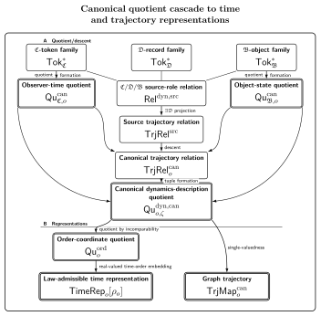


Formulas in the figure


8.1 Standard Schemes and Theory Reduction
A standard physical-time comparison scheme is a typed input comprising theory-specific geometry, scheme-restricted raw operational input, a family of observer worldlines, a family of comparison rules, and a family of binding data. The ordered pair consisting of the scheme-restricted raw operational input and the scheme-specific source-side realization datum determines a realized operational configuration of the same type as in Definition 3.25. The structures at the comparison and representation stages take this realized operational configuration and the scheme-specific family of comparison rules as domain-side inputs and are generated when the respective stage conditions hold. The continuum-approximation evaluation input is determined from the same input pair in accordance with Definition 4.168. The restriction to each scheme of the complete evaluation specification in Definition 5.2 serves as the domain-side input at the dynamical-description, law-representation, and differential-law-form stages.
The scheme-restricted raw operational input has as components the physical realizations and reception network derived from . The scheme-specific source-side realization datum has as components the source tokens derived from , display and record data, source-side orders, comparison-side arrival maps, comparison-side recovery maps, and the relation derived from . The scheme-restricted family of binding data has as components record-side retention, object-state-side distinction, and observer-side binding conditions. A time variable in a physical law is determined by a generated observer-time quotient, observer-time law core, and law-admissible time representation. Frequency, period, Hz, and standard frequency are generated at the representation stage from generated comparison-representation coordinates and count differences derived from .


8.1.1 General Form of Standard Schemes
Definition 8.1 (Standard Physical-Time Comparison Scheme).
A standard physical-time comparison scheme is defined by


. Its components have the following types.
-
•
are the scheme-specific geometric carrier and geometric structure.
-
•
is the scheme-restricted raw operational input.
-
•
For each , is an observer worldline.
-
•
is the scheme-restricted family of comparison rules.
-
•
is the scheme-restricted family of binding data containing record-binding data and object-state-binding data.

The clock-side operational material consists of the cycle indices, phase labels, display updates, counter transitions, and internal counter increments in Definition 2.2. Frequency, period, Hz, and standard frequency are generated at the representation stage under the conditions of Proposition 4.153. A quantity called proper frequency in a given scheme is the value obtained by restricting the -derived source-relative frequency representation of Definition 4.150 to that scheme.
Definition 8.2 (Scheme-Restricted Raw Operational Input).
The reception network of a standard physical-time comparison scheme is defined by


![\displaystyle\left(\mathsf{RcvCar}_{u\mathchar 44\relax\allowbreak\mathsf{Sch}%
}\mathchar 44\relax\allowbreak\mathsf{Rcv}_{\mathfrak{C}\mathchar 44\relax%
\allowbreak u\mathchar 44\relax\allowbreak\mathsf{Sch}}\mathchar 44\relax%
\allowbreak\mathsf{Rcv}_{\mathfrak{D}\mathchar 44\relax\allowbreak u\mathchar 4%
4\relax\allowbreak\mathsf{Sch}}\mathchar 44\relax\allowbreak\mathsf{Rcv}_{%
\mathfrak{B}\mathchar 44\relax\allowbreak u\mathchar 44\relax\allowbreak%
\mathsf{Sch}}\mathchar 44\relax\allowbreak\preceq_{u\mathchar 44\relax%
\allowbreak\mathsf{Sch}}^{\mathrm{rcv}}\right)_{u\in U_{\mathsf{Sch}}}\Bigr{)}](math-S8/ee12ee1c535337c72b8b0adc78d6f70b434b028d3e87581383e9e33eef745ac5.svg)
. The scheme-restricted raw operational input is defined by

![\displaystyle\mathsf{RI}_{\mathsf{Sch}}[Z_{0}]\mathchar 44\relax\allowbreak%
\mathsf{Car}_{\mathrm{phys}\mathchar 44\relax\allowbreak\mathsf{Sch}}[Z_{0}]%
\mathchar 44\relax\allowbreak\mathsf{Rlz}_{\mathfrak{C}\mathchar 44\relax%
\allowbreak\mathsf{Sch}}\mathchar 44\relax\allowbreak](math-S8/df3246d445249eba0409d7e2288ad49b7ea0a8c6a611e23476d1a706c141a931.svg)
![\displaystyle\mathsf{Rlz}_{\mathfrak{D}\mathchar 44\relax\allowbreak\mathsf{%
Sch}}\mathchar 44\relax\allowbreak\mathsf{Rlz}_{\mathfrak{B}\mathchar 44\relax%
\allowbreak\mathsf{Sch}}[Z_{0}]\mathchar 44\relax\allowbreak\mathsf{Rlz}_{%
\mathfrak{O}\mathchar 44\relax\allowbreak\mathsf{Sch}}\mathchar 44\relax%
\allowbreak\mathsf{Rcv}_{U\mathchar 44\relax\allowbreak\mathsf{Sch}}\Bigr{)}](math-S8/89299d503f0f45f6772bfd60d129df462e51040043a5c81f922bf2aef3dab6a6.svg)
. It has the same seven-component type as the raw operational input of Definition 3.6.
Definition 8.3 (Scheme-Specific Source-Side Realization Datum and Dynamical-Description-Stage Entry Data).
For a standard physical-time comparison scheme , define the family of source-side tokens by

define the display and record data by


and the source-side orders by
.
Define the families of comparison-side arrival maps and comparison-side recovery maps, and the relation derived from , by


.
Define the scheme-specific source-side realization datum by


. Define the scheme-restricted realized operational configuration by
.
For each
, the comparison-side arrival map has type


. Define the uniquely recoverable reception set by

. The comparison-side recovery map has type
.
For each
, let the dynamical-description-stage direct-arrival map be

. Define the dynamical-description-stage arrival set by
.
The dynamical-description source-role relation and the dynamical-description-stage source-role relation have the respective types


. Define the dynamical-description-stage four-party reception structure by
![\displaystyle\left(\mathcal{R}^{\mathrm{dyn\mathchar 44\relax\allowbreak arr}}%
_{\mathfrak{C}\mathchar 44\relax\allowbreak o\mathchar 44\relax\allowbreak%
\mathsf{Sch}}\mathchar 44\relax\allowbreak\mathcal{R}^{\mathrm{dyn\mathchar 44%
\relax\allowbreak arr}}_{\mathfrak{D}\mathchar 44\relax\allowbreak o\mathchar 4%
4\relax\allowbreak\mathsf{Sch}}\mathchar 44\relax\allowbreak\mathcal{R}^{%
\mathrm{dyn\mathchar 44\relax\allowbreak arr}}_{\mathfrak{B}\mathchar 44\relax%
\allowbreak o\mathchar 44\relax\allowbreak\mathsf{Sch}}\right)\mathchar 44\relax\allowbreak](math-S8/a72907854bbb08ba751babb1e057a848c2c972dfe694b774d15d2c4b997f76bb.svg)


. The dynamical-description-stage recovery map has type

.
For every
, require


and

. Assign the -derived object-state-side identification map the type

, and set
. Then
holds.
has the same six-component type as in Definition 3.24. Take the dynamical-description-stage entry data to be


.
Proposition 8.4 (Generation Position of Clock-Side Inputs and Frequency Representations in Standard Schemes).
The clock-side operational material of a standard physical-time comparison scheme consists of the cycle indices, phase labels, display updates, counter transitions, and internal counter increments in Definition 2.2. The scheme-restricted family of binding data has record-side retention, object-state-side distinction, and observer-side binding conditions as components. The scheme-restricted raw operational input and the scheme-specific source-side realization datum do not have frequency, period, Hz, or standard frequency as components. These quantities are generated at the representation stage from generated comparison-representation coordinates and count differences derived from . A quantity called proper frequency in a given scheme is the value obtained by restricting the -derived source-relative frequency representation to that scheme.
Proof.
Definitions 3.6 and 3.24 construct the raw operational input and source-side realization datum from physical realizations, a reception network, source tokens derived from , display and record data, source-side orders, comparison-side arrival maps, comparison-side recovery maps, and a relation derived from . By Proposition 3.26, these input data contain no time variables, time intervals, periods, or frequencies.
Definition 4.150 defines frequency and period representations from quantitative affine differences of generated -derived comparison-representation coordinates and count differences derived from . Definition 4.151 defines an Hz value from a frequency representation and a -derived frequency-unit scalar, while Definition 4.152 defines a standard-frequency representation from the frequency representation of a reference -derived source. By Proposition 4.153, these quantities are generated under the conditions of the representation stage. A quantity called proper frequency in a given scheme is likewise determined from the -derived source-relative frequency representation in Definition 4.150. ∎
8.1.2 Representative Schemes
A representative scheme is a theory-specific input datum that supplies the input of each physical theory as a realized operational configuration

. Its components include clock-side cycle indices, phase labels, display updates, counter transitions, internal counter increments, record-side retention, object-state-side distinction, and observer-side binding conditions. Time variables are based on the observer-time quotient, observer-time law core, and law-admissible time representation generated from the inputs of each representative scheme. Frequency, period, Hz numerical values, standard frequency, and proper frequency are defined from cycle-count differences derived from the clock-side operational material and quantitative affine differences of generated representation coordinates.
Each representative scheme has the general form of Definition 8.1 and has as components the scheme-restricted raw operational input of Definition 8.2 and the scheme-specific source-side realization datum and dynamical-description-stage entry data of Definition 8.3. These components reduce each representative theory to the general generation sequences of Chapters 3 and 5.
Definition 8.5 (Single-Object Evaluation Specification for a Representative Scheme).
Let the representative-scheme label be . When the representative scheme supplies the realized operational configuration

and the typed family of comparison rules , define the comparison-rule-dependent common input by
. Define the comparison-stage condition-family evaluation specification by
![\mathsf{Ev}^{\mathrm{cmp}}_{\mathsf{Sch}}:=\left(\mathsf{Ev}^{\mathrm{cmp}}_{%
\mathsf{Sch}\mathchar 44\relax\allowbreak i}\right)_{i=1}^{7}\mathchar 44%
\relax\allowbreak\qquad\mathsf{Ev}^{\mathrm{cmp}}_{\mathsf{Sch}\mathchar 44%
\relax\allowbreak i}:=\begin{cases}\mathcal{X}_{\mathsf{Sch}}\mathchar 44%
\relax\allowbreak&i=1\mathchar 44\relax\allowbreak\\[3.0pt]
\mathsf{I}_{\mathsf{Sch}}\mathchar 44\relax\allowbreak&i\in\{2\mathchar 44%
\relax\allowbreak\ldots\mathchar 44\relax\allowbreak 7\}\end{cases}](math-S8/1189f1997c6aecc3ecc9900b26e0fa01f2a4eabba7cfc3c98886cc0ee7dc9d77.svg)
.
Further, given an observer-side information-coupling position and a single-object specification index , define the scheme-restricted complete evaluation specification by

.
Denote comparison-stage operability, exact comparison closure, and dynamical-description operability, respectively, by

![\displaystyle\mathsf{ExactOperable}\left[\mathsf{I}_{\mathsf{Sch}}\right]%
\mathchar 44\relax\allowbreak](math-S8/1bd3e8ee52a0829c9792e6c34d3a22efdb7f0d13f4aed82545a96364fc73084a.svg)
.
The correspondence between the classification numbers through and the dynamical-description conditions is as follows.

-
()
.
-
()
.
-
()
.
-
()
.
-
()
.
-
()
.
-
()
.
-
()
.


Denote the simultaneous satisfaction of all eight conditions by .
At their respective generation stages, denote the dynamical-description generation object, the law-output determinacy condition, and the law-description generation object by

. Here,

. Generation of the observer-time law core requires
.
Definition 8.6 (Generation Rule for Clock-Side Inputs and Frequency Representations).
Clock-side inputs in a representative scheme are supplied as cycle indices, phase labels, display updates, counter transitions, and internal counter increments. Suppose that the conditional quantitative affine realization derived from ,
, is specified and that the admissible counting window

satisfies the membership and strict-order conditions of Definition 4.150. Then, upon specialization of that definition to , the counting-window frequency representation and period representation derived from are
![\displaystyle\nu_{\mathfrak{C}}^{\mathrm{win}}[\mathsf{I}_{\mathsf{Sch}};%
\mathsf{win}]](math-S8/b9ddc6b1c5fd49740158674e66b95f30708dfdfe476b7f519f22dbb3b080e2a5.svg)
![\displaystyle\mathsf{Per}_{\mathfrak{C}}^{\mathrm{win}}[\mathsf{I}_{\mathsf{%
Sch}};\mathsf{win}]](math-S8/9e1647a88a44747eb4e039b0d960124b8a11460ebe02469a40447307d0ae11ff.svg)
![\displaystyle=\left(\nu_{\mathfrak{C}}^{\mathrm{win}}[\mathsf{I}_{\mathsf{Sch}%
};\mathsf{win}]\right)^{-1}\mathchar 44\relax\allowbreak](math-S8/f128546daeb646793ce533c1f618397a3446437cc4a77657dbffa2a449d07278.svg)

The frequency-unit scalar and Hz numerical value follow Definition 4.151.
Definition 8.7 (Newtonian and classical-mechanics scheme).
Denote the Newtonian and classical-mechanics scheme by . This scheme has shared clock-side material, stable record correspondence, distinguishability of object states, and observer-side binding conditions as theory-specific inputs. The clock-side material is assigned to the same order representation; the record-side material supplies records corresponding to that order representation; and the object-state-side material supplies the distinctions required for the dynamical description.

Conventional classical physics uses the time variable as an input to laws of motion. This scheme constructs the classical time variable as an order representation generated from comparison-stage closure, the representation stage, the -derived dynamical-description stage, the observer-time law core, and a law-admissible time representation.

The Newtonian and classical-mechanics scheme has the following input components.
-
()
A family of clock-side sources corresponding to a shared clock.
-
()
Record-side retention that supplies stable record correspondence.
-
()
Distinguishability of object states required for the dynamical description.
-
()
Observer-side binding conditions that bind the clock side, record side, and object-state side at the same phase.
-
()
Comparison-side arrival maps, comparison-side recovery maps, comparison rules, and binding data.
-
()
The dynamical-description-stage entry data of Definition 8.3.
-
()
Idealization conditions for the classical domain that make branching burdens single-valued.
-
()
An object-state correspondence that approximates observational binding by the identity.
-
()
Trajectory and observable correspondences for evaluating law-output determinacy.


These inputs are used to evaluate the conditions for the comparison stage, representation stage, continuous-approximation stage, dynamical-description stage, law-representation stage, and differential-law-form stage in the classical domain.
Definition 8.8 (Time-Metrology Scheme).
Denote the time-metrology scheme by . This scheme has a reference source derived from , , and a normalization convention , and retains cycle-count records through record-side correspondence. A standard-time construction is a representation generated from cycle-count records, counting comparison and correction, correction records, and gluing of comparison quotients.


The time-metrology scheme has the following input components.
-
()
A reference source derived from and a normalization convention.
-
()
A family of record-side sources that retains cycle-count records.
-
()
Comparison rules containing counting comparison and correction, correction records, and traceability information.
-
()
Comparison-side arrival maps, comparison-side recovery maps, and source-side pairing relations.
-
()
The dynamical-description-stage entry data of Definition 8.3.

Specializing Definition 4.152 to the time-metrology scheme gives the standard-frequency representation derived from and the Hz unit scalar derived from as
Definition 8.9 (GPS scheme).
Denote the GPS scheme by . This scheme is a distributed comparison scheme with multiple families of clock-side sources, record-side correction records, transport rules, and observer-side reception structures. Clock adjustment and time correction in GPS map differences in count ratios, transport, and gluing to comparable records.

The clock-side materials at the satellite and receiver are supplied as cycle-count sources. Transport corrections, relativistic corrections, and receiver-side reconstruction are structural conditions for gluing cycle-count records and comparison-transport data into a canonical comparison quotient.
The GPS scheme has the following input components.
-
()
Families of clock-side sources at satellites and receivers.
-
()
Families of record-side sources that include navigation messages, correction records, and reception records.
-
()
Receiver-side object-state material and observer-side binding conditions.
-
()
Comparison rules that include propagation corrections, relativistic corrections, and clock corrections.
-
()
Comparison-side arrival maps, comparison-side recovery maps, and source-side pairing relations.
-
()
The dynamical-description-stage entry data of Definition 8.3.


The domain in which adjustment, synchronization, correction, and navigation time-tagging for multiple clock families in the GPS scheme hold is determined by the failure-position token system of Chapter 6.
Definition 8.10 (Special-relativity scheme).
Denote the special-relativity scheme by . This scheme has observer worldlines, local clock-side reception, record-side correspondence, and transport rules on Minkowski spacetime. Conventional special relativity uses Minkowski spacetime and inertial coordinate time as inputs to law descriptions. This scheme uses Minkowski spacetime as a theory-specific input carrier and constructs inertial coordinate time as a coordinate representation generated from comparison-stage closure, the representation stage, the dynamical-description stage, the observer-time law core, and a law-admissible time representation.
The special-relativity scheme has the following input components.
-
()
A set of observers and worldlines corresponding to a network of inertial observers.
-
()
Local clock-side, record-side, and object-state-side reception for each observer.
-
()
Comparison rules corresponding to synchronization procedures, proper-time comparisons, and inertial-coordinate transformations.
-
()
Comparison-side arrival maps, comparison-side recovery maps, and source-side pairing relations.
-
()
The dynamical-description-stage entry data of Definition 8.3.


Branches in proper-time comparison, synchronization procedures, and simultaneity are determined by the conditions under which comparison, representation, and gluing hold along the same generation sequence.
Definition 8.11 (General-relativity scheme).
Denote the general-relativity scheme by . This scheme has a network of local observers on Lorentzian spacetime, worldline-dependent reception structures, transport data, and gluing data. Conventional general relativity uses Lorentzian spacetime and proper-time representations as inputs to law descriptions. This scheme uses Lorentzian spacetime as a theory-specific input carrier and constructs a proper-time representation as a local display generated from worldline-local comparison data and generated representation coordinates.

The general-relativity scheme has the following input components.
-
()
A network of local observers and worldline-dependent reception structures.
-
()
Local clock-side, record-side, and object-state-side reception.
-
()
Comparison rules for local comparison, transport, and gluing.
-
()
Comparison-side arrival maps, comparison-side recovery maps, and source-side pairing relations.
-
()
The dynamical-description-stage entry data of Definition 8.3.


The domain in which local-to-global comparison restrictions, transport, and gluing hold is determined by the failure-position token system of Chapter 6.
Definition 8.12 (Quantum-reconstruction scheme).
Denote the quantum-reconstruction scheme by . This scheme takes families of clock-side, record-side, and object-state-side sources, branch-sensitive record structures, observer-side binding, and comparison-gluing conditions as inputs, while excluding external time from the primitive inputs. From these inputs it generates comparison-stage closure, a canonical comparison quotient, a -derived dynamical description, and a law-admissible time representation under the establishment conditions of their respective stages. For a law-evaluation datum satisfying law-description operability, it generates the observer-time law core.

The quantum-reconstruction scheme has the following input components.
-
()
Families of clock-side, record-side, and object-state-side sources.
-
()
Branch-sensitive record structures and object-state-side distinguishability.
-
()
Observer-side binding conditions and comparison-gluing conditions.
-
()
Comparison-side arrival maps, comparison-side recovery maps, and source-side pairing relations.
-
()
The dynamical-description-stage entry data of Definition 8.3.


The domains in which observational binding, object-state distinction, state identification, and law representation hold are determined by the conditions of the dynamical-description stage, law-representation stage, and differential-law-form stage.
Proposition 8.13 (Primitive-Frequency-Free Reduction of Representative Schemes).
For each

the theory-specific components of the representative scheme construct
. The observer-time quotient and law-admissible time representation are generated, within domains satisfying their respective generation conditions, from this realized operational configuration, the typed family of comparison rules, the observer-side information-coupling position, and the single-object specification index. The observer-time law core is generated when the corresponding law-evaluation datum satisfies law-description operability. Frequency, period, Hz numerical values, standard frequency, and proper frequency are generated from cycle-count differences and quantitative affine differences of generated representation coordinates, subject to the conditions on quantitative affine realization, admissible counting windows, window invariance, and unit normalization required by the definition of each quantity.
Proof.
By Definition 8.6, clock-side inputs are supplied as cycle indices, phase labels, display updates, counter transitions, and internal counter increments, while frequency representations are defined from cycle-count differences and quantitative affine differences of generated representation coordinates.
Definitions 8.7, 8.8, 8.9, 8.10, 8.11, and 8.12 supply, for their respective representative schemes, the components of the raw operational input, source-side realization datum, typed family of comparison rules, and dynamical-description-stage entry data. By Definition 8.5, these components determine the corresponding complete evaluation specification.
Definition 3.25 determines the realized operational configuration, and Definition 5.56 determines the observer-time quotient. Theorem 5.112 generates the dynamical-description object and dynamical-description evidence datum, while Theorem 5.113 together with Definition 5.108 generates the observer-time law core. Definition 5.63 generates the law-admissible time representation. By Proposition 8.4, the raw operational input and source-side realization datum contain no time variable, time interval, period, or frequency as components; these quantities belong to subsequent generation stages. Definitions 4.150 and 4.151 generate frequency, period, and Hz numerical values. Definition 4.152 generates standard frequency and the Hz unit scalar. The six representative schemes therefore obtain each time-representation quantity and frequency quantity from the general generation sequence without requiring a time variable or primitive frequency value as a pregeneration input. ∎
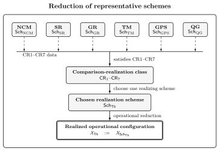
Formulas in the figure


8.1.3 Reduction to the Comparison-Realization Class and Realized Operational Configurations
Definition 8.14 (Comparison-realization class).
A physical theory belongs to the comparison-realization class if there exists at least one standard physical-time-comparison scheme that realizes the geometry, operational input, worldline family, comparison rules, and binding data of and satisfies the following seven obligations. In this section, select one such scheme and write

This notation does not assume uniqueness of the realization scheme.
-
(CR1)
has the general form of a standard physical-time-comparison scheme from Definition 8.1.
-
(CR2)
The source-side token families, display and record data, and source-side orders of have the types specified in Definition 8.3.
-
(CR3)
The family of comparison-side arrival maps of has the type specified in Definition 8.3.
-
(CR4)
The family of comparison-side recovery maps of has the type specified in Definition 8.3.
-
(CR5)
The family of direct-arrival maps at the dynamical-description stage of has the type specified in Definition 8.3.
-
(CR6)
The family of recovery maps at the dynamical-description stage of has the type specified in Definition 8.3.
-
(CR7)
The comparison-side relations, source-side relations, and dynamical-description source-role relation of have the types specified in Definition 8.3.
Definition 8.15 (Reduction from a theory to a realized operational configuration).
For a physical theory in the comparison-realization class, define the realized operational configuration by


Theorem 8.16 (Reduction from the comparison-realization class to realized operational configurations).
Proof.


Proposition 8.17 (Representative theories supply the input data of the comparison-realization class).
The representative theories corresponding to

supply the data in CR1 through CR7 of Definition 8.14. Therefore, each representative theory belongs to the comparison-realization class.
Proof.
Definitions 8.1 and 8.3 show that the general form of a standard scheme has the data types in CR1 through CR7. Definitions 8.7 and 8.8 through 8.12 give the theory-specific components of this general form for the six representative schemes. Therefore, the representative theory corresponding to each scheme belongs to the comparison-realization class. ∎
Corollary 8.18 (Common generation-stage judgments for representative theories).
For each representative theory in Proposition 8.17, the operability judgment and the judgments at the comparison, representation, continuous-approximation, dynamical-description, law-representation, and differential-law-form stages take the corresponding realized operational configuration as a domain-side input. The failure location of each stage condition is classified by the failure-position tokens of Definition 6.10.
Proof.
By Proposition 8.17, each representative theory belongs to the comparison-realization class. By Theorem 8.16, the realized operational configuration of each representative theory is determined. Each judgment from the operability judgment through the differential-law-form-stage judgment takes this realized operational configuration and the additional inputs required at that stage as domain-side inputs. The failure location of each stage condition is classified by the failure-position tokens specified in Definition 6.10. ∎
8.1.4 Interpretation-Path-Specific Multistage Misrecognition
Definition 8.19 (Multistage misrecognition relative to generation order).
In time-reference construction, the objects and grounding conditions of each stage are generated from raw operational inputs in the dependency order defined by the sequence from comparison through representation and dynamical description to law representation and differential law form, together with the branch from dynamical description to continuous approximation. For an interpretation-specific evidence-comparison path from Definition 7.117, an explanation containing the following operations is called a multistage misrecognition.
-
1.
It places an object, quantity, structure, or its bearer generated at a later stage as an input or given at a stage preceding its generation conditions.
-
2.
It identifies the satisfaction of a local or partial stage with the satisfaction of a subsequent or global stage that requires additional conditions.
-
3.
It redescribes a relational quantity or comparison-derived difference generated at a later stage as a change in an attribute of an entity posited before construction.
-
4.
It transfers the establishment of preceding evidence to a different object, predicate, evidence type, grounding condition, or domain of application and treats it as a direct demonstration without independent evidence or a valid derivation specific to the destination of the transfer.
Within one interpretation-specific evidence-comparison path, each of the preceding operations that occurs successively by direct dependency is counted as one stage. Neither the number of evidence-effect layers nor the number of enumerated items is taken directly as the number of stages of misrecognition. Even for the same statement, different permissible interpretations can have different numbers of stages of misrecognition.
If the number of evidence-effect transgressions along an interpretation-specific evidence-comparison path is 0, no multistage misrecognition holds under that interpretation. If an unqualified temporal-property expression transfers a comparative difference on a physical carrier to a property of time, that object-type transfer is a one-stage misrecognition. Under a literal explanation that places an unconstructed time entity in advance and attributes a comparative difference to a change in an attribute of that entity, placement before generation and attribution of the property occur successively by direct dependency and form a two-stage misrecognition.
Proposition 8.20 (Interpretation-path-specific application of the unbounded inheritance of limited results).
For each reference, retain mathematical consistency, predictive performance, model fit, empirical agreement, and comparative differences on physical carriers within their respective evidence-effect domains. If an interpretation-specific evidence-comparison path transfers an object, predicate, evidence type, grounding condition, or domain of application without independent evidence or a valid derivation, determine that transfer with direct dependency as a multistage misrecognition.
If the same reference or the same statement has multiple permissible interpretations, determine the establishment and number of stages of misrecognition separately for each interpretation. No multistage misrecognition holds under an interpretation that directly describes a comparative difference on a physical carrier or under an interpretation for which the original-source text states its figurative character, states that it does not designate a literal deformation of time, and identifies its actual referent. An unqualified temporal-property expression constitutes a one-stage misrecognition even if it can be interpreted retrospectively as shorthand. A literal time-stretching account that places an unconstructed time entity in advance constitutes a two-stage misrecognition; a path that then transfers evidential effect to a different object domain acquires subsequent stages according to its direct dependencies.
The number of stages of misrecognition is not determined uniformly from the name of a field or reference. It is determined by the direct-dependency path formed by the formal construction, statements, and permissible interpretations of each reference.
Proof.
By Proposition 7.118, a claim beyond the evidence-effect boundary of a limited result requires independent evidence or a valid derivation specific to that claim. By Corollary 7.119, inheritance to a result of primitive-time dependence and inheritance to a claim outside the domain of application of a limited result are distinct audit axes.
Definition 7.117 separates an interpretation-specific evidence-comparison path for each permissible interpretation of the same statement and counts evidence-effect transgressions connected by direct dependency. Definition 8.19 determines placement before generation, identification of stages of establishment, reattribution to a property of time, and transfer of evidential effect to another object domain along that path as operations of misrecognition. It is therefore possible to preserve the formal results of each representative scheme within their evidence-effect domains while determining only the stages of misrecognition actually constituted by the original-source statements and their permissible interpretations. ∎
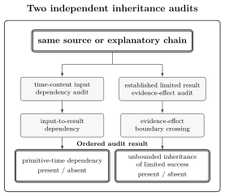
Apply validity localization, approximation localization, classification by the failure-position tokens of Definition 6.10, and structural-burden correspondence to the determination of representative schemes and classical time. For representative schemes, the realized operational configuration supplied by each theory is matched to its structural burdens. In the classical domain, this separates the subclass on which a classical time representation holds, the scale-indexed validity domain on which the continuous approximation is valid, and the boundary of that domain.
Proposition 8.21 (Loss of physical-time qualification in modern physics under primitive-time premises).
For any representative scheme , let the complete evaluation specification of Definition 8.5 be
When the time content and grounding structure used by the physical-law time variable of a representative theory are generated from nontemporal physical inputs prior to law operations and result derivation, that time variable satisfies physical-time qualification.
When time content enters a law operation or result derivation before the grounding structure required for its use, that time content is a primitive-time input, and the corresponding time variable does not satisfy physical-time qualification. Simultaneous mathematical consistency, predictive performance, and empirical fit do not repair this loss of qualification.
By Proposition 7.191, among the 72 audited references, the numbers of references that eliminate primitive-time inputs from all dependency roots and that give complete time generation from nontemporal physical inputs are, respectively, . The number of references that use at least one temporal dependency root before the generation of time content is . By Theorem 7.190, primitive-time roots and primitive-time-root-dependent results exist in all 72 references. By Theorem 7.201, all 72 references fail to satisfy the generation-completion condition for the entire set of time contents used within them.


Therefore, a time variable in a physical law is not established on a primitive premise. So long as they retain their present use of time variables without alteration, the theoretical descriptions of modern physics represented by the 72 audited references do not satisfy physical-time qualification. That is, modern physics does not hold as it stands. This nonestablishment is a loss of physical-time qualification concerning the order of time-content generation, law use, and result propagation. Mathematical consistency, predictive performance, and empirical fit are retained as evaluation successes of the respective theories.
Proof.
By Definition 8.5, the components of a complete evaluation specification are a realized operational configuration, a typed family of comparison rules, an observer-side information-coupling position, and an object-specification index.
When time content and its grounding structure are generated prior to law operations and result derivation, Theorem 7.200 gives physical-time qualification to the time variable of a physical law that uses that time content.
When time content is used before the required grounding structure, Definition 7.10 makes that time content a primitive-time input. By Theorem 7.11, that time content does not satisfy physical-time qualification. By Proposition 7.13, simultaneous mathematical consistency, predictive performance, and empirical fit do not repair this loss of qualification.
Proposition 7.191 gives 0/72 both for elimination of primitive-time inputs from all dependency roots and for complete time generation, and 72/72 for the use of a temporal dependency root before generation. Theorem 7.190 gives the existence of primitive-time roots and primitive-time-root-dependent results in all references. Theorem 7.201 gives failure of the generation-completion condition in all references.
The theoretical descriptions of modern physics represented by the 72 audited references therefore retain time content that lacks physical-time qualification and results that depend on that content. By the generation-priority condition in Corollary 7.15, a time variable in a physical law is not established on a primitive premise. Hence, so long as present time-variable use is retained without alteration, modern physics does not hold as it stands. ∎
8.2 Theory-Specific Structural Consequences
The consequence for each representative theory consists of an application of the general generation theorems and the structural burdens specific to that theory. For a realized operational configuration
the general generation theorems supply the operability determination, comparison-stage determination, representation-stage determination, continuous-approximation-stage determination, dynamical-description-stage determination, law-representation-stage determination, differential-law-form-stage determination, and first structural-failure determination. The theory-specific structural burdens supply the conditions that the inputs of each theory must satisfy at the respective generation stages.
In SR, inertial coordinate time supplies an order representation based on the observer-time law core. In GR, comparison burdens with branch resolution appear in the canonical comparison quotient at the comparison stage or in descent conditions at the dynamical-description stage. In time metrology, standard frequency, period, and numerical values in Hz are determined from a traceability-based quotient order, -derived comparison-representation coordinates, and quantity-affine differences. In GPS, a rotation-derived loop defect appears as a failure of global gluing at the comparison stage. In quantum reconstruction, the conditions for generating a law-admissible time representation are determined from records that exclude external time from primitive inputs, branch sensitivity, object-state differences, observer-side binding, and comparison-gluing conditions.
| Representative | Input carriers | Comparison burdens | Motion and law burdens |
|---|---|---|---|
| NCM |
Shared clock
Stable records Object-state sequence |
Shared-clock domain
Single ordering |
Branching burden
Single-valued observational binding |
| SR |
Inertial-observer network
Local clocks Synchronization rules |
Inter-inertial closure
Order representation |
Law-kernel representation burden |
| GR |
Local-observer network
Worldline-dependent reception Transport data |
Proper-time display
Global gluing |
Branch resolution
Transport preservation Quotient descent Law single-valuedness |
| TM |
Reference cycles
Counting convention Correction records |
Counting comparison
Representation-coordinate descent |
Frequency-representation burden
Period-representation burden Hz-representation burden |
| GPS |
Satellite clocks
Reception records Correction rules Transport rules |
Multiple-clock comparison
Propagation correction Loop consistency Global gluing |
Navigation-time representation
Law-kernel representation burden |
| QG |
External time excluded from primitive inputs
Records Branch sensitivity Observer binding |
Comparison gluing
Object-state identification Grounding burden |
Dynamical description
Operability Law-kernel generation burden |
| Representative | Generated objects | Typical failures |
|---|---|---|
| NCM |
Classical time
Classical continuous approximation Classical law display |
|
| SR |
Inertial coordinate time
Generated representation |
|
| GR |
Local proper-time display
Global law-time representation Stage difference |
|
| TM |
-derived comparison-representation coordinates
Standard frequency and period Numerical values in Hz |
|
| GPS |
Navigation time
Localization of rotation-derived loop defects |
|
| QG | Law-admissible time representation with external time excluded from primitive inputs |
|


Proposition 8.22 (Type boundary of representative schemes).
A representative scheme supplies the input carriers, comparison burdens, dynamical-description burdens, and law-representation burdens of an existing theory as a realized operational configuration and the additional inputs of the respective stages. It separates by type the theoretical content supplied as theory-specific input from the time comparisons, time representations, continuous-approximation validity, dynamical descriptions, law-admissible time representations, differential-law forms, scale-indexed validity domains, and failure-position tokens constructed at the generation stages.
Proof.
Tables 17 and 18 separate the carriers supplied by representative theories as theory-specific inputs, the burdens determined at the generation stages, the generated objects, and the typical failures. NCM, SR, GR, TM, GPS, and QG have different input carriers, but by Corollary 8.18, the corresponding realized operational configurations and additional inputs at each stage follow the common generation order of the sequence from comparison through representation and dynamical description to law representation and differential law form, together with the branch from dynamical description to continuous approximation. Failure locations for the conditions of each stage are classified by the failure-position tokens of Definition 6.10. A representative scheme is therefore an input type that determines, in the same generation order and without conflating theory-specific inputs with generated objects, the time-grounding burdens, law-representation burdens, differential-law-form burdens, and scale-indexed validity domains of each theory. ∎
Relativistic calculations supply highly precise correspondences among clock readings, coordinate displays, proper-time displays, dynamical descriptions, and observational records. What those correspondences establish comprises clock-reading differences, coordinate-time differences, proper-time differences along worldlines, metric structures, and the relations among them.
Under descriptions that retain time or spacetime as a preconstruction entity, these highly precise correspondences have been described as stretching, slowing, speeding, or deformation of a time entity or spacetime entity.
By Theorem 7.201, none of the 72 audited references generates from nontemporal physical inputs the entire set of time contents used within it. By Proposition 7.13, mathematical consistency, predictive performance, and empirical fit do not repair the physical-time qualification of a primitive-time input. Success of relativistic calculation therefore does not entail the stretching, slowing, speeding, or deformation of an independent time entity or spacetime entity.
The pattern that retains time or spacetime as a preconstruction entity and explains a postgeneration relational quantity as a change in an attribute of that entity also occurs in subsequent quantum theory, quantum gravity, spacetime emergence, and cosmology. Transferring the dependency into subsequent theories while retaining primitive-time inputs causes questions that should be determined as matters of time-reference construction, generated law-admissible time representations, scale-indexed validity domains, and failure boundaries to be inherited as undifferentiated problems of time, spacetime, observation, or gravity.
Proposition 8.23 (Two-stage misrecognition in the time-stretching account).
In the generation order of this paper, relativistic clock differences are determined as comparison-derived differences among generated law-admissible time representations corresponding to multiple observers or worldlines. The time-stretching account posits time as an unconstructed entity prior to these comparison-derived differences and explains relativistic clock differences by the stretching, slowing, speeding, or deformation of that time entity. This explanatory form is therefore a two-stage misrecognition of the time-stretching account in which Items 1 and 3 of Definition 8.19 occur in a sequence of direct dependence.
Proof.
In the representative schemes, time use in SR and GR follows the generation order from realized operational configurations along the sequence from comparison through representation and dynamical description to law representation and differential law form, together with the branch from dynamical description to continuous approximation. A relativistic clock difference is a comparison-derived difference among multiple law-admissible time representations obtained in this generation order.
Prior to that comparison-derived difference, the time-stretching account places time as an unconstructed entity at a stage preceding its generation conditions. It therefore satisfies Item 1 of Definition 8.19. It further redescribes the comparison-derived difference generated at a later stage as a change in an attribute of that time entity—its stretching, slowing, speeding, or deformation—and therefore satisfies Item 3 of the same definition. The redescription in Item 3 has as its antecedent the prior input of a time entity under Item 1. Items 1 and 3 are thus connected by direct dependence, making this explanatory form a two-stage misrecognition in the time-stretching account. ∎
Theorem 8.24 (Structural consequences for Newtonian and classical mechanics).
For a complete evaluation specification and law-evaluation datum , suppose that

![\mathsf{LawOperative}\left[\mathsf{LawEvalDat}_{o\mathchar 44\relax\allowbreak%
\zeta_{\mathsf{Sch}_{\mathrm{NCM}}}}\right]](math-S8/85791787dc36b5fa7a4432ff5b99a2da13d71574c4fbca8cb32c31af1f16b003.svg)
holds and that
Then the observer-time law core

is determined. The classical time variable displays values of the law-admissible time representation . When the branching burden, observational-binding burden, and law-output determinacy hold in the classical domain, the laws of Newtonian and classical mechanics may use this generated time representation within their safe domain of application.

Proof.
By Definition 5.102, law-description operability includes the simultaneous satisfaction of dynamical-description operability and the family of law conditions. Definition 5.108 determines the observer-time law core relative to the displayed real-valued time-order embedding. By Definition 5.63, the law-admissible time representation maps the -derived canonical observer-time quotient to real-valued time.
The shared-clock domain of Definition 8.7 maps clock-side material to the same order representation; stable records connect object-state-side material to the same law-bearing domain; and the observer-side binding conditions establish the four-party binding at the same phase. In the classical domain in which law-output determinacy holds, the classical time variable displays values of the generated law-admissible time representation.
Connection to physical-time qualification. Time content appearing in the shared-clock domain, single ordering, and classical law display of Newtonian and classical mechanics satisfies the physical-time qualification of Theorem 7.200 when the corresponding grounding structures precede law operations and result derivation. When time content is input before its grounding structures, Theorem 7.11 entails that the content lacks physical-time qualification.
Proposition 8.25 (Inheritance of primitive-time dependence in Newtonian and classical mechanics).
In Newtonian and classical mechanics, if a classical time variable is used in equations of motion, initial-value specifications, parametric representations of trajectories, or the evolution variable of a phase flow before its time content and grounding structures are generated, that time variable becomes a primitive-time input. Trajectories, velocities, accelerations, initial-value evolution, identification of conserved quantities, determination of their temporal evolution, phase flows, and law results constructed in dependence on this input inherit primitive-time dependence, and the time content contained in each result lacks physical-time qualification. Mathematical consistency, predictive performance, operational reproducibility, and empirical fit of the equations of motion do not repair this loss of qualification.
The law-admissible time representation generated under the conditions of Theorem 8.24 may be used as a law-time input in Newtonian and classical mechanics within its safe domain of application. Formulating velocity, acceleration, phase flow, or evolution by differential equations additionally requires differential-stage operability under Definition 5.132.
Proof.
When pregeneration time content is used in equations of motion, initial-value specifications, parametric representations of trajectories, or the evolution variable of a phase flow, Definition 7.10 and Theorem 7.11 make that use a primitive-time input lacking physical-time qualification. By Corollary 7.12, dependence on that time content is inherited by trajectories, velocities, accelerations, initial-value evolution, identification of conserved quantities, determination of their temporal evolution, phase flows, and law results. By Proposition 7.13, mathematical consistency, predictive performance, operational reproducibility, and empirical fit do not repair this loss of qualification.
By Theorem 8.24, satisfaction of law-description operability and a real-valued time-order embedding generates the law-admissible time representation displayed by the classical time variable. By Definition 5.132, differential-stage operability includes simultaneous satisfaction of law-description operability and the five differential-stage conditions. The safe domain of application for time-dependent quantities and differential-law forms in Newtonian and classical mechanics is therefore the domain in which the generated law-admissible time representation is used and the required differential-stage conditions hold. ∎
Proposition 8.26 (Safe reuse of Newtonian and classical mechanics through generated time and failure classification).
When the conditions of Theorem 8.24 hold, the laws, initial-value evolution, trajectories, and conserved quantities of Newtonian and classical mechanics that use a generated law-admissible time representation hold within their safe domain of application. Velocity, acceleration, phase flow, and evolution by differential equations additionally require differential-stage operability under Definition 5.132.
When a condition at any generation stage fails, the failure-position token system of Definition 6.10 and the set of minimal failure locations of Theorem 6.168 determine the condition that must be repaired first. Repair proceeds upstream-to-downstream according to the failure-generation dependency order of Definition 6.17, and downstream results are recomputed from the repaired inputs. Within the domain in which the grounding conditions again hold, the corresponding classical laws, initial-value evolution, trajectories, conserved quantities, and phase flows can be retained.
When an error source in initial values, a time representation, or a differential approximation is repaired, the repair’s effect on accuracy is determined by an accuracy evaluation of the recomputed downstream results. The decision to use a classical law therefore separates into retention within its safe domain of application and repair beginning at a minimal failure location.
Proof.
By Theorem 8.24, satisfaction of law-description operability and a real-valued time-order embedding supplies the generated law-admissible time representation used as the law-time input of Newtonian and classical mechanics. By Definition 5.132, the differential-law forms required for velocity, acceleration, phase flow, and evolution by differential equations are retained on the domain of differential-stage operability.
Definition 6.10 maps each failed condition to its corresponding failure-position token. Theorem 6.168 determines the failed locations that are minimal with respect to the failure-generation dependency order. By Definition 6.17, conditions and results downstream of such a location depend on upstream conditions. This determines an order in which the cause at a minimal failure location is repaired and downstream results are recomputed.
When an error source belongs to an initial value, a time representation, or a differential approximation, downstream results can be recomputed from inputs in which that source has been repaired, and an accuracy evaluation can be applied to the recomputed results. Existing results can consequently be retained where the grounding conditions hold, while the repair order begins at the minimal failure location and accuracy evaluation remains conditional on recomputation. ∎
Theorem 8.27 (Structural consequences for special relativity).
Suppose that
![\mathsf{LawOperative}\left[\mathsf{LawEvalDat}_{o\mathchar 44\relax\allowbreak%
\zeta_{\mathsf{Sch}_{\mathrm{SR}}}}\right]](math-S8/a103ed457f3e9cbf94d82a5fe6f00db27c54de30e4d5e2b2f7b3827a42814257.svg)
holds and that
Then the observer-time law core
is determined. Inertial coordinate time in SR supplies the coordinate display of the law-admissible time representation contained in this law core.
Proof.
By Definition 5.102, law-description operability includes simultaneous satisfaction of dynamical-description operability and the family of law conditions. Definition 5.108 determines the observer-time law core, and by Definition 5.63, the law-admissible time representation maps the -derived canonical observer-time quotient to real-valued time.
By Definition 8.10, the inertial-observer network, local clock-side reception, synchronization procedures, and comparison rules corresponding to inertial-coordinate transformations supply the inputs of SR. Within the domain in which these inputs satisfy the conditions of each generation stage, inertial coordinate time is the coordinate display of a generated law-admissible time representation. ∎
Theorem 8.28 (Structural consequences for general relativity).
When
holds, worldline-local comparison data and generated representation coordinates supply the local proper-time display .
When, in addition,
![\mathsf{DynOperative}\left[\mathsf{Ev}_{\mathsf{Sch}_{\mathrm{GR}}}\right]](math-S8/2e12451482ad996edae6246f95d40ca878225fe467222a38fbe95010fac48c65.svg)
holds, the -derived canonical trajectory relation is determined. When law-description operability holds, the observer-time law core is determined. The existence of a local proper-time display alone does not entail right-uniqueness of the canonical trajectory relation or existence of the observer-time law core.

Proof.
By Definition 8.11, worldline-local clock-side reception, record-side reception, local comparison rules, and generated representation coordinates construct the local proper-time display.
At the dynamical-description stage, descent of the -derived canonical trajectory relation of Definition 5.23 requires comparison-stage closure and the family of dynamical-description conditions. Its right-uniqueness requires the dynamical-description-stage canonical-trajectory-function condition of Definition 5.26. The law stage requires the law-description operability of Definition 5.102 and the real-valued time-order embedding of Definition 5.108.
If branch resolution, transport preservation, quotient descent, or law-output determinacy fails, right-uniqueness of the canonical trajectory relation or existence of the observer-time law core does not hold even when a local proper-time display is supplied. ∎
Theorem 8.29 (Structural consequences for time metrology).
Suppose that

holds and that a -derived conditional quantity-affine realization

is specified. Suppose further that a nonempty family of admissible counting windows for the reference source is given and satisfies the window-invariance condition of Definition 4.150. Then -derived comparison-representation coordinates, a standard-frequency representation, a period representation, and an Hz unit scalar are determined from the family of reference cycle-count sources, the cycle-counting convention, counting comparisons and corrections, correction records, the canonical comparison quotient, and generated representation coordinates.
Proof.
By Definition 4.175, exact operability includes completion of the comparison and representation stages. By Definition 8.6, the family of reference cycle-count sources, the cycle-counting convention, counting comparisons and corrections, and correction records are connected to the canonical comparison quotient and generated representation coordinates.
The -derived conditional quantity-affine realization supplies quantity-affine differences of the generated representation coordinates. A cycle-count difference together with this quantity-affine difference determines the frequency and period representations, and Definition 4.152 determines the standard-frequency representation and the Hz unit scalar. The traceability network thus supplies standard-frequency and period representations and numerical values in Hz based on the generated comparison order and quantity-affine differences, without taking a primitive frequency as input. ∎
Theorem 8.30 (Structural consequences for GPS).
Within a domain in which the conditions at every generation stage of the GPS scheme hold, the navigation-time variable displays values of a generated law-admissible time representation.
Suppose that pure transport words
![\mathbf{w}_{0}\mathchar 44\relax\allowbreak\mathbf{w}_{1}\in\mathsf{Word}^{%
\mathrm{tr}}_{\bullet}\left[\mathsf{I}_{\mathsf{Sch}_{\mathrm{GPS}}}\right]](math-S8/c2d438ae9d5151665dc95d90ab777627f6fa93b38714f73724de82300d0b4e51.svg)
with the same initial and terminal points supply a witness of nonidentity action for the loop word . Then
holds, and global gluing at the comparison stage fails.
Proof.
By Definition 8.9, the GPS scheme supplies families of clock-side sources at satellites and receivers, reception records, correction rules, transport rules, and observer-side binding conditions. Within a domain in which exact operability, dynamical-description operability, and law-description operability hold, the law-admissible time representation of Definition 5.63 is generated, and the navigation-time variable displays its values.
The assumed witness of nonidentity action refutes the requirement that every pure transport loop act identically. Consequently, the comparison-stage global-gluing condition
![\mathsf{G}\left[\mathsf{Ev}^{\mathrm{cmp}}_{\mathsf{Sch}_{\mathrm{GPS}}}\right]](math-S8/fdfdd5502ca05127889425c2c818a64f954248427050a5d89e7c96b76e122765.svg)
therefore does not hold, and its failure location is classified by a comparison-stage failure-position token of Definition 6.10. ∎
Theorem 8.31 (Structural consequences for quantum reconstruction).
The quantum-reconstruction scheme excludes external time from primitive inputs and takes families of clock-side, record-side, and object-state-side sources, branch-sensitive record structures, observer-side binding, and comparison-gluing conditions as inputs.
When

holds, the canonical comparison quotient and representation-stage objects are determined. When, in addition,
holds, the -derived canonical observer-time quotient, -derived canonical object-state quotient, -derived canonical trajectory relation, graph trajectory, family of canonical observable functions, and law-admissible time representation are determined. When law-description operability holds, the observer-time law core is determined.
Proof.
By Definition 8.12, the quantum-reconstruction scheme supplies a realized operational configuration

that excludes external time from primitive inputs, together with a typed family of comparison rules.
When exact operability holds, the canonical comparison quotient of Definition 4.89 and the representation-stage objects are determined. When dynamical-description operability holds, the canonical observer-time and object-state quotients of Definition 5.16, the canonical trajectory relation of Definition 5.23, the graph trajectory of Definition 5.28, the law-admissible time representation of Definition 5.63, and the family of canonical observable functions are determined.
When law-description operability holds and a -derived real-valued time-order embedding is selected, Definition 5.108 determines the corresponding observer-time law core. Quantum reconstruction that excludes external time from primitive inputs therefore generates the law-bearing time representation and law core within the domain in which the conditions of the respective generation stages hold. ∎
8.3 Worked Reduction in Time Metrology
Specialize the time-metrology scheme of Definition 8.8 to the -derived frequency and period representations of Definition 4.150 and the -derived standard-frequency representation of Definition 4.152. The reference -derived source, cycle-count index, record-side correspondence, comparison closure, -derived canonical comparison quotient, -derived comparison-representation coordinate, quantity-affine difference, frequency and period representations, and numerical value in Hz are determined in this dependency order.
The second, frequency, and Hz used in time metrology are supplied as standardized measurement implementations[14]. A standardized measurement implementation supplies numerical conventions, measurement reproducibility, and transfer among standards. If, however, the second, frequency, or Hz is used before the generation of time content as a time interval, calibration criterion, synchronization criterion, reference criterion for traceability, or law-time input, that use constitutes primitive-time input. The time-metrology scheme takes reference cycles, records, comparison rules, and unit-normalization conventions as inputs and determines frequencies, periods, and numerical values in Hz as quantities on a generated comparison representation. This generation order connects standardized numerical values to time metrology that has physical-time qualification.
8.3.1 From Cycle Count to Frequency Representation
Consider the time-metrology scheme of Definition 8.8. Its reference -derived source and normalization convention are given by that definition.
For each , let the cycle-count indices be , , and let the corresponding -derived source tokens be


Let the record tokens containing the ancillary records and derived from be

and supply the correspondence by

The ancillary records include correction records, environmental records, counting comparisons and corrections, and record content required for traceability. Object-state-side tokens distinguish the comparison phase to which each record belongs.
Let the counting window for the observer-side information-coupling position be

Suppose that record-side retention, correction records, counting comparisons and corrections, and the typed family of comparison rules make the two -derived source tokens comparable within the same comparison window of the same reference sequence. When the membership and strict-order conditions of Definition 4.150 hold,
![\displaystyle\mathsf{win}_{\mathrm{std}}\in\mathsf{CntWin}^{\mathrm{adm}}_{%
\mathfrak{C}}[\mathsf{I}_{\mathsf{Sch}_{\mathrm{TM}}}].](math-S8/aebf02eeb81cdf2299b1bbfd0939202cee3355f1a031a03ddfd453ace221ccf7.svg)
The window-endpoint images () are then elements of the -derived canonical comparison quotient
![\mathsf{CntCls}_{\mathfrak{C}\mathchar 44\relax\allowbreak i}[\mathsf{I}_{%
\mathsf{Sch}_{\mathrm{TM}}};\mathsf{win}_{\mathrm{std}}]](math-S8/79fc4121dd69c5ab22cbf70bc8531644204c385c4bc16f387a9823c251a63288.svg)
and satisfy the -derived canonical strict order.
When the structural representation stage of Definition 4.92 is complete and the -derived conditional quantity-affine realization of Definition 4.148
![\displaystyle\mathsf{QtyAffReal}_{\mathfrak{C}}[\mathsf{I}_{\mathsf{Sch}_{%
\mathrm{TM}}}]](math-S8/cb91aae8fb29fc536deb51f7a15a323112fb6570953e09a5e5a6f9cbb1cc488a.svg)
is specified, the quantity-affine difference of the two window-endpoint images in the -derived comparison-representation coordinates is determined. The cycle-count difference is .
Proposition 8.32 (Generation from cycle counts to a frequency representation).
Suppose that

and

hold and that a -derived conditional quantity-affine realization is specified. Suppose further that
![\displaystyle\mathsf{win}_{\mathrm{std}}\in\mathsf{CntWin}^{\mathrm{adm}}_{%
\mathfrak{C}}[\mathsf{I}_{\mathsf{Sch}_{\mathrm{TM}}}]](math-S8/eb2fe286aee9a38c65bf69c49bde01fd18a6a073a8a5e1c92ca740d1c60e145f.svg)
Then the -derived counting-window frequency representation is determined as
![\displaystyle\nu_{\mathfrak{C}}^{\mathrm{win}}[\mathsf{I}_{\mathsf{Sch}_{%
\mathrm{TM}}};\mathsf{win}_{\mathrm{std}}]](math-S8/42b5b99b8370939638d335743b51b25c959a7d8f5ac07a8d4ac264cd9ea7757c.svg)
Its product with the -derived counting-window period representation is .
When window invariance holds for the reference -derived source, the common value in the preceding expression supplies the -derived standard-frequency representation. The normalization convention determines the -derived Hz unit scalar, and the numerical value in Hz relative to that unit scalar is determined by Definition 4.151.
Proof.
By the definition of an admissible counting window, the two window-endpoint images satisfy the strict order on the -derived canonical comparison quotient. By Proposition 4.153, their quantity-affine difference in the -derived comparison-representation coordinates is positive, so the -derived counting-window frequency and period representations are determined. The same proposition gives their product as the -derived quantity unit .
When the window-invariance condition of Definition 4.150 holds for the reference -derived source, the common value of the counting-window frequency representations becomes the -derived source-relative frequency representation. Definition 4.152 makes this common value the -derived standard-frequency representation and determines the -derived Hz unit scalar from the normalization convention. Frequency, period, and numerical values in Hz are therefore determined in the dependency order from cycle-count records through comparison closure, -derived comparison-representation coordinates, quantity-affine differences, window invariance, and the unit-normalization convention. ∎
Connection to physical-time qualification. Cycle-count records, -derived frequency and period representations, and numerical values in Hz in time metrology are used to calibrate time variables in physical laws or as quantitative inputs within laws. Time variables in physical laws that use these quantities are subject to the generation-priority condition of Corollary 7.15. By Proposition 8.21, when time content and grounding structures are generated prior to law operations and result derivation, the time variable satisfies physical-time qualification. When time content is used before the required grounding structures, the time variable does not satisfy physical-time qualification.
In addition to the reference -derived source, record correspondence, typed family of comparison rules, and structural representation stage, an admissible counting window, quantity-affine realization, window invariance, and unit normalization are required according to the quantity used. Continuous approximation requires a finite-operational-granularity datum and continuous-approximation evaluation input. If a formed and evaluable condition in the six series fails, a failure-position token of Definition 6.10 classifies each minimal failure location. Non-satisfaction of a quantity-specific condition is determined as a defining condition of the corresponding quantity, in accordance with Proposition 8.35.
Proposition 8.33 (Inheritance of primitive-time dependence in time metrology).
If, before the generation conditions of the time-metrology scheme hold, the second, frequency, period, or a numerical value in Hz is used as a time interval, calibration criterion, synchronization criterion, reference criterion for traceability, or law-time input, that use constitutes a primitive-time input. Calibration values, frequency ratios, time scales, synchronization results, calibration chains, and law results that depend on these quantities inherit primitive-time dependence, and the time content contained in each result does not satisfy physical-time qualification. Measurement accuracy, reproducibility, agreement among standards, and traceability do not repair this loss of qualification.
When the generation conditions of the time-metrology scheme hold, frequency, period, and numerical values in Hz are generated from cycle-count records, comparison closure, -derived comparison-representation coordinates, quantity-affine differences, window invariance, and the unit-normalization convention. When these quantities are used as law-time inputs, they become law-time inputs with physical-time qualification if law-description operability holds and the generation of law-time content precedes law operations and result derivation.
Proof.
When time content is used in a law operation or result derivation before the generation conditions hold, Definition 7.10 and Theorem 7.11 make that use a primitive-time input that does not satisfy physical-time qualification. By Corollary 7.12, dependence on that time content is inherited by calibration values, frequency ratios, time scales, synchronization results, calibration chains, and law results. By Proposition 7.13, measurement accuracy, reproducibility, agreement among standards, and traceability do not repair this loss of qualification.
When the generation conditions hold, Proposition 8.32 generates frequency, period, and numerical values in Hz according to the dependency order from cycle-count records to the unit-normalization convention. Definition 5.102 and Corollary 7.15 give physical-time qualification to law-time inputs when law-description operability holds and generated time content precedes law operations and result derivation. ∎
Corollary 8.34 (Noncircularity in time metrology).
The primitive inputs of the time-metrology scheme consist of a reference -derived source, cycle-count indices, record-side correspondence, a typed family of comparison rules, and a normalization convention. Frequency, period, and numerical values in Hz are determined from the canonical comparison quotient, -derived comparison-representation coordinates, quantity-affine differences, and window invariance generated from these primitive inputs.
Proof.
By Proposition 8.32, the -derived counting-window frequency representation is determined as the ratio of a cycle-count difference to a quantity-affine difference of generated comparison-representation coordinates. The -derived standard-frequency representation is determined by window invariance, and the -derived Hz unit scalar and numerical values in Hz are determined by the unit-normalization convention. The dependency order from primitive inputs through comparison, representation, quantification, and normalization therefore generates the frequency, period, and numerical values in Hz of time metrology. ∎
Proposition 8.35 (Localization of failure results in the worked reduction for time metrology).
When a generation condition for a frequency representation, period representation, or numerical value in Hz fails in the time-metrology scheme and belongs to one of the six failure series, each minimal failure location is classified by a failure-position token of Definition 6.10.
-
(1)
When a formed and evaluable comparison-series condition concerning record correspondence or comparison rules fails, each minimal failure location belongs to the comparison stage.
-
(2)
After the -derived canonical comparison quotient has been established, failure of a formed and evaluable representation-series condition has each minimal failure location in the representation stage. Quantity-affine realization, admissible counting windows, window invariance, and unit normalization are evaluated as defining conditions of the quantities that require them.
-
(3)
When the finite-operational-granularity datum or continuous-approximation evaluation input is insufficient, the corresponding approximation condition is unformed or unevaluable. When a formed and evaluable condition among the nine continuous-approximation conditions fails, each minimal failure location belongs to the continuous-approximation stage.
-
(4)
When a formed and evaluable series condition connecting a generated frequency representation, period representation, or numerical value in Hz to a dynamical description, law representation, or differential-law form fails, each minimal failure location belongs to the corresponding subsequent stage.
Proof.
By Definition 4.150 and Proposition 4.153, generation of frequency and period representations depends on the comparison stage, structural representation stage, quantity-affine realization, and an admissible counting window. By Definition 4.152, the standard-frequency representation and Hz unit scalar depend on window invariance and the unit-normalization convention.
Definitions 4.156 and 4.168 determine the finite-operational-granularity datum and continuous-approximation evaluation input. By Proposition 6.76, the evaluation input containing the finite-operational-granularity datum and continuous-approximation evaluation input determines the evaluation states of the nine continuous-approximation conditions. Definition 6.77 makes failure of those nine conditions a continuous-approximation-stage failure.
The defining conditions of the quantities above determine whether frequency, period, and numerical values in Hz are generated. For conditions in the six series, Definition 6.21 determines the formation and evaluation states, and Proposition 6.26 establishes that the failed-token set equals its set of minimal elements. Each token of Definition 6.10 retains the series and condition index of the failed condition. ∎
Proposition 8.36 (Safe reuse of time-metrology results through generated time and failure classification).
When the generation conditions of Proposition 8.32 hold, the frequency, period, and numerical values in Hz obtained from cycle-count records, comparison closure, -derived comparison-representation coordinates, quantity-affine differences, window invariance, and the unit-normalization convention can be used within the corresponding admissible counting windows and scale-indexed validity domain. Their use as law-time inputs additionally requires law-description operability and the generation-priority condition for law-time content.
Each minimal failure location determined by Proposition 8.35 and each unsatisfied defining condition of the quantity used specify the first objects to repair among record correspondence, comparison rules, and admissible counting windows; structural representation, quantity-affine realization, window invariance, and unit normalization; finite operational granularity and continuous-approximation evaluation input; or subsequent law connection. Frequency, period, numerical values in Hz, calibration values, frequency ratios, time scales, synchronization results, and calibration chains are recomputed from the repaired inputs and can be retained within the domain in which the grounding conditions again hold.
When an error source in calibration, a frequency ratio, record-cell width, window selection, unit normalization, or finite operational granularity is repaired, the repair’s effect on accuracy is determined by an accuracy evaluation of the recomputed downstream results. The decision to use a time-metrology result therefore separates into retention within the validity domain and repair beginning at each minimal failure location.
Proof.
By Proposition 8.32, frequency, period, and numerical values in Hz are generated according to the dependency order from cycle-count records through the unit-normalization convention. By Proposition 8.33, when generated quantities are used as law-time inputs, satisfaction of law-description operability and the generation-priority condition gives them physical-time qualification.
Proposition 8.35 classifies each minimal failure location of a generation condition into the comparison, representation, continuous-approximation, or subsequent stage. By Definition 6.17, conditions and results downstream of each minimal failure location depend on upstream conditions. This determines the order in which the cause at each minimal failure location is repaired and downstream results are recomputed from the repaired input.
When an error source belongs to calibration, a frequency ratio, record-cell width, window selection, unit normalization, or finite operational granularity, downstream results can be recomputed from inputs in which that source has been repaired, and accuracy evaluation can be applied to the recomputed results. Time-metrology results can consequently be retained where the grounding conditions hold, while the repair order begins at each minimal failure location and accuracy evaluation remains conditional on recomputation. ∎
8.4 Worked Reduction for GPS
In the GPS scheme, comparison-stage objects are constructed from satellite-side clock sources, reception records, correction records, and transport rules, and a navigation-time representation is generated through the dynamical-description and law-description stages. If what is conventionally called a navigation-time variable in GPS is presupposed before its generation, satellite-clock corrections, propagation corrections, pseudoranges, receiver-clock offsets, synchronization results, position and velocity navigation solutions, and law results using them inherit primitive-time dependence. If a rotation-derived nonidentity loop action arises under the adopted transport rules, that defect is localized at the comparison stage as a failure of the identity-action condition for every pure transport loop. In the construction of GPS navigation time, correction of the transport rules, restriction of the domain of validity, or specification of the scale domain in which an approximation holds determines the conditions for using downstream results in accordance with that failure.
8.4.1 Comparison Closure and the Gluing Burden in GPS
Let the set of GPS satellite identifiers be . For each , let the satellite-side -derived source token be . Represent the family of satellite-side clock sources by


.
Let the GPS receiver-side information-coupling position and -derived record token be


. Type the receiver-side arrival by
.
The satellite-side tokens retain cycle indices, candidate time tags in navigation messages, and correction records. The receiver-side tokens retain reception records, satellite identification, the receiver-side information-coupling position, and correction records. The input-side structure consists of the following four components.
-
•
Rules relating satellite-side -derived source tokens to receiver-side -derived record tokens.
-
•
Comparison rules that include propagation corrections, clock corrections, and relativistic corrections.
-
•
Conditions that bind records from multiple satellites to the same receiver-side information-coupling position.
-
•
Transport rules that map multiple comparison paths to the same navigation-time representation.
For evaluation at the GPS receiver, set
and let the single-object specification index be . Use the GPS-scheme-restricted complete evaluation specification of Definition 8.5.

Suppose that the realized operational configuration and typed family of comparison rules obtained by restricting the GPS inputs to a specified domain satisfy the exact operability of Definition 4.175. By Definition 4.89, the satellite-side clock tokens, reception records, correction records, propagation corrections, and relativistic corrections descend, under the same family of comparison rules, to the -derived canonical comparison quotient. When a complete evaluation specifying a nonrotating domain satisfies this exact operability, records from multiple satellites become comparison objects on the same canonical comparison quotient.
When the dynamical-description operability of Definition 5.70 holds, the dynamical-description extension base data and the dynamical-description evidence datum relative to the real-valued time-order embedding selected in Definition 5.59,
![\displaystyle\mathsf{DynWit}_{o\mathchar 44\relax\allowbreak\zeta_{\mathsf{Sch%
}_{\mathrm{GPS}}}}\left[\mathsf{RepEmb}^{\mathrm{dyn\mathchar 44\relax%
\allowbreak time}}_{o}\right]](math-S8/08aa7cdfc596edab73cb674443dceef0eea17f1550b4e7c611e74cb01b1f7c03.svg)
are generated.
Suppose that the law-evaluation datum satisfies the equality of evaluation specifications under Proposition 5.86 and that the law-description operability of Definition 5.102 holds. By Definition 5.108, this law-evaluation datum and the selected real-valued time-order embedding determine the observer-time law core.
For any
let the time value supplied by the law-admissible time representation of Definition 5.63,


be a GPS navigation-time value. The object ordinarily called a navigation-time variable in GPS is this GPS navigation-time value supplied by the law-admissible time representation belonging to the observer-time law core.
Proposition 8.37 (Navigation-time representation on the exact validity domain of GPS).
Suppose that the law-evaluation datum of the GPS scheme satisfies
and let
. Then the object ordinarily called a navigation-time variable in GPS is the GPS navigation-time value generated by the law-admissible time representation belonging to the observer-time law core.
Proof.
Definition 5.102 and the equality of evaluation specifications imply that the corresponding complete evaluation specification is dynamical-description operative. By Definition 5.108 and Proposition 5.109,

exists uniquely. By Definition 5.63, each time-quotient class is mapped to real-valued time by the law-admissible time representation of that definition. Therefore, the object ordinarily called a navigation-time variable in GPS is a GPS navigation-time value generated through the comparison, dynamical-description, and law-description stages. ∎
Connection to physical-time qualification. By Corollary 7.15, the generation structures corresponding to the time content used by a GPS navigation-time value must be established prior to law operations and result derivation. By Proposition 8.21, when time content and grounding structures are generated from nontemporal physical inputs prior to law operations and result derivation, the time variable satisfies physical-time qualification.
When time content enters a law operation or result derivation before the grounding structures required for its use, that time content is a primitive-time input under Definition 7.10. By Theorem 7.11, the time variable does not satisfy physical-time qualification. By Proposition 7.13, the simultaneous satisfaction of mathematical consistency, predictive performance, and empirical fit does not repair this loss of qualification.
Failures at the comparison, representation, continuous-approximation, dynamical-description, law-representation, and differential-consistency and law-form-preservation stages of the complete GPS evaluation specification are classified by the failure-position tokens of Definition 6.10. Failure of the identity-action condition for all-pure-transport loops belongs to the comparison-failure series, and a determination outside the scale-indexed validity domain belongs to the continuous-approximation-failure series.
Proposition 8.38 (Inheritance of primitive-time dependence in GPS).
If a navigation-time variable is used in satellite-clock correction, propagation correction, pseudorange equations, receiver-clock-offset estimation, synchronization processing, or navigation solutions before the generation structures of the GPS navigation-time value are established prior to law operations and result derivation, that use becomes a primitive-time input. Satellite-clock correction values, propagation-correction values, pseudoranges, receiver-clock offsets, synchronization results, position and velocity navigation solutions, and law results that use them inherit primitive-time dependence, and the time content contained in each result does not satisfy physical-time qualification. Mathematical consistency of the navigation equations, positioning accuracy, operational reproducibility, and empirical fit do not repair this loss of qualification.
When the GPS scheme satisfies exact operability, dynamical-description operability, and law-description operability, a GPS navigation-time value is generated. Within a domain in which the identity-action condition for all-pure-transport loops holds, this value can be used as a single exact navigation-time representation. Where that condition fails, the scale domain of approximate validity is stated, and qualification to use navigation-time values, correction values, synchronization results, and navigation solutions is determined within that domain.
Proof.
When a navigation-time variable is used in a law operation or result derivation before the generation structures are established, Definition 7.10 and Theorem 7.11 make that use a primitive-time input that does not satisfy physical-time qualification. By Corollary 7.12, dependence on that time content is inherited by correction values, pseudoranges, receiver-clock offsets, synchronization results, navigation solutions, and law results. By Proposition 7.13, mathematical consistency, positioning accuracy, operational reproducibility, and empirical fit do not repair this loss of qualification.
When exact operability, dynamical-description operability, and law-description operability hold, Proposition 8.37 shows that the law-admissible time representation belonging to the observer-time law core generates the GPS navigation-time value. By Definition 6.42, the identity-action condition for all-pure-transport loops determines exact gluing independent of comparison path. By Definition 6.161, the domain of use for approximate operation is determined by the scale domain of approximate validity. ∎
8.4.2 Rotation-Derived Loop Defects and

Definition 8.39 (GPS rotation-derived loop action and nonidentity-action witness).
Represent two comparison paths in GPS with the same initial and terminal points, for each , by pure transport words

. The word constructed from the inverse and concatenation,
![\mathbf{w}_{1}^{\dagger}\star\mathbf{w}_{0}\in\mathsf{LoopWord}^{\mathrm{tr}%
\mathchar 44\relax\allowbreak\bullet}_{\mathrm{all}}\left[\mathsf{I}_{\mathsf{%
Sch}_{\mathrm{GPS}}}\right]](math-S8/34e878f2978977edfe5246af95e568520fed221c5a8ba6c996c775d03b34440f.svg)
is a pure transport loop word.
Define the action of this loop word by
![\displaystyle:=\mathsf{Act}^{\mathrm{tr}}_{\bullet}\left[\mathsf{I}_{\mathsf{%
Sch}_{\mathrm{GPS}}}\right]\left[\mathbf{w}_{1}^{\dagger}\star\mathbf{w}_{0}\right]](math-S8/fb2d1011092fb3c4cadbf696573e7165693a823a2925f31e2d7b2b29d988a85e.svg)
and define the nonidentity-action witness predicate by
![\displaystyle\mathsf{LoopWit}^{\bullet}_{\mathrm{GPS}}\left[x;\mathbf{w}_{0}%
\mathchar 44\relax\allowbreak\mathbf{w}_{1}\right]](math-S8/328d00e0a24765282b2e3eb8081d17e42c3eacaab68b9451caf8abd903b07bae.svg)
![\displaystyle\Longleftrightarrow x\in\operatorname{Dom}\left(\mathsf{LoopAct}^%
{\bullet}_{\mathrm{GPS}}\left[\mathbf{w}_{0}\mathchar 44\relax\allowbreak%
\mathbf{w}_{1}\right]\right)](math-S8/14a40f2adf6db7e1624c4f7d5cabec2f4b3637f0688808dbedc3f513a315eca4.svg)
\neq x](math-S8/7c2df218e0f39f9e3a1ba99bfe2a4b7d05b54c921bd0e715741ce6fc332c2db3.svg)
. Call an satisfying this predicate a nonidentity-action witness of a rotation-derived loop defect in GPS. The condition of Definition 6.42 determines exact identity of the loop action. Approximate operation relative to an engineering tolerance threshold is determined by the scale domain of approximate validity of Definition 6.161.

![\mathsf{G}[\mathsf{Ev}^{\mathrm{cmp}}_{\mathsf{Sch}_{\mathrm{GPS}}}]](math-S8/265d0d1f196360cf99dd527b4e9014028022a4ff7001f48fbebdebad5be9d473.svg)
Proposition 8.40 (Localization of a rotation-derived loop defect in GPS).
Suppose that, for the GPS-scheme-restricted complete evaluation specification,
![\mathsf{L}_{\leq 7}\left[\mathsf{Ev}^{\mathrm{cmp}}_{\mathsf{Sch}_{\mathrm{GPS%
}}}\right]](math-S8/1fee1ac17aac98ae5f5506e9f73f18cebc3de271b92bf6866ee86e950ef46fda.svg)
holds. Suppose further that there exist
![\begin{gathered}\bullet\in\{\mathfrak{C}\mathchar 44\relax\allowbreak\mathfrak%
{D}\}\mathchar 44\relax\allowbreak\\[3.0pt]
\mathbf{w}_{0}\mathchar 44\relax\allowbreak\mathbf{w}_{1}\in\mathsf{Word}^{%
\mathrm{tr}}_{\bullet}\left[\mathsf{I}_{\mathsf{Sch}_{\mathrm{GPS}}}\right]%
\end{gathered}](math-S8/89a783a552db256314e0381d0b70dde2b990b8f996ed707656d7c7fe6498ee5e.svg)
and such that
holds. Then
holds.
Proof.
Corollary 8.41 (Separation of stages in the worked GPS reduction).
For each complete evaluation specification constructed by restricting the GPS inputs, the following hold.
-
1.
When law-description operability holds, a navigation-time value for the restricted domain is generated.
-
2.
When the first seven comparison-stage conditions hold and a nonidentity loop-action witness exists, the all-pure-transport-loop identity-action failure holds.
-
3.
Approximate operation relative to an engineering tolerance threshold is determined by the scale domain of approximate validity.
Proof.
Item 1 follows from Proposition 8.37. Item 2 follows from Proposition 8.40. Item 3 follows from Definition 6.161. The GPS navigation-time value generated in Item 1 is supplied by a law-admissible time representation belonging to the observer-time law core and is the object ordinarily called a navigation-time variable in GPS. Item 1 determines law-time generation on a specified restricted domain; Item 2 determines exact loop identity action at the comparison stage; and Item 3 determines the scale-indexed domain of approximate validity. ∎
Proposition 8.42 (Safe reuse of GPS results through generated time and failure classification).
Where the conditions of Proposition 8.37 and the identity-action condition for all-pure-transport loops hold, generated GPS navigation-time values, satellite-clock correction values, propagation-correction values, pseudoranges, receiver-clock offsets, synchronization results, and position and velocity navigation solutions can be used within the exact validity domain. Under approximate operation, the scale domain of approximate validity of Definition 6.161 determines the domain of use of these results.
The comparison-stage loop defect, boundary of the scale-indexed validity domain, or failure of a subsequent-stage condition classified by Proposition 8.40 and Corollary 8.41 determines the GPS construction component that must be repaired first. Clock corrections, propagation corrections, pseudoranges, receiver-clock offsets, synchronization results, and navigation solutions are recalculated from the repaired inputs, and these results can be retained within the exact validity domain or the scale domain of approximate validity.
When an error source in clock corrections, propagation corrections, comparison paths, loop defects, synchronization processing, or receiver-clock offsets is repaired, the repair’s effect on accuracy is determined by an accuracy evaluation of the recalculated navigation solution. The decision to use GPS results therefore separates into retention within the validity domain and repair from the first failure position.
Proof.
By Proposition 8.37, within a domain in which law-description operability holds, the law-admissible time representation belonging to the observer-time law core generates a GPS navigation-time value. By Proposition 8.38, within the range in which the generated GPS navigation-time value and its grounding conditions are used, the corresponding correction values, pseudoranges, receiver-clock offsets, synchronization results, and navigation solutions connect to time inputs that have physical-time qualification.
Proposition 8.40 maps a nonidentity loop action to failure of the identity-action condition for all-pure-transport loops. Corollary 8.41 separates exact law-time generation, a comparison-stage loop defect, and a scale-indexed domain of approximate validity. By Definition 6.17, conditions and results downstream of the first failure position depend on upstream conditions. The order is therefore fixed in which a cause belonging to the first failure position is repaired and the navigation results are recalculated from those inputs.
When the source of error belongs to clock corrections, propagation corrections, comparison paths, loop defects, synchronization processing, or receiver-clock offsets, the navigation solution can be recalculated from inputs in which that source has been repaired, and an accuracy evaluation can be applied to the recalculated result. It follows that retention of GPS results within the validity domain, the repair order from the first failure position, and conditional evaluation of positioning accuracy hold. ∎
8.5 Worked Reduction for SR
In the special-relativity scheme, comparison-stage objects are constructed from an inertial-observer network, local clock-side receptions, record-side receptions, synchronization rules, and comparison rules, and inertial coordinate time is generated through the dynamical-description and law-description stages. If inertial coordinate time or proper time is presupposed prior to this generation, synchronization results, Lorentz-transformation results, time representations of worldlines, proper-time differences, differential quantities such as velocity and acceleration, clock-rate differences, and law results that use them inherit primitive-time dependence. The coordinate representation ordinarily called inertial coordinate time in SR is the law-admissible time representation obtained through this generation order, and each of its values is an SR inertial-coordinate-time value.
8.5.1 From an Inertial-Observer Network to Inertial Coordinate Time
The inputs to the worked reduction for SR are the inertial-observer network and, for each , the local clock-side reception, record-side reception, and object-state-side reception. Clock-side reception contains proper-clock tokens or candidate local-clock tokens, and record-side reception contains local event records, signal-exchange records, and synchronization records. Object-state-side reception supplies material for distinguishing object states or event positions.

Synchronization rules provide comparability between local clock-side tokens and record-side tokens. Comparison rules make the local records of different inertial observers descend to the same comparison quotient. For an inertial observer and single-object specification index , use the SR-scheme-restricted complete evaluation specification of Definition 8.5.

Suppose that the realized operational configuration and typed family of comparison rules obtained by restricting the SR inputs to a specified domain satisfy the exact operability of Definition 4.175. By Definition 4.89, the local clock-side receptions, record-side receptions, synchronization records, and comparison records of the inertial-observer network descend, under the same family of comparison rules, to the -derived canonical comparison quotient. The objects obtained at this stage are quotient objects based on the comparison conditions and their order-bearing structure.
When the dynamical-description operability of Definition 5.70 holds, the dynamical-description extension base data and the dynamical-description evidence datum relative to the real-valued time-order embedding selected in Definition 5.59,
![\displaystyle\mathsf{DynWit}_{o\mathchar 44\relax\allowbreak\zeta_{\mathsf{Sch%
}_{\mathrm{SR}}}}\left[\mathsf{RepEmb}^{\mathrm{dyn\mathchar 44\relax%
\allowbreak time}}_{o}\right]](math-S8/42d8877ffbb0e357073a83b08d8bf2dad331965fbfb948bd35ef17af2d4ccbae.svg)
are generated.
Suppose that the law-evaluation datum satisfies the equality of evaluation specifications under Proposition 5.86 and that the law-description operability of Definition 5.102 holds. By Definition 5.108, this law-evaluation datum and the selected real-valued time-order embedding determine the observer-time law core.
For any
define the conventional notation for an inertial-coordinate-time value in ordinary SR by

. The coordinate representation ordinarily called inertial coordinate time in SR is the law-admissible time representation of Definition 5.63, and is the conventional notation for its SR inertial-coordinate-time value. Minkowski geometry and Lorentz transformations are theory-specific input carriers that supply admissible transformations of this time representation and the spatial representation. The -derived canonical comparison quotient is the quotient object preceding the action of those representation transformations.
Proposition 8.43 (Inertial coordinate time is a generated representation).
Suppose that the law-evaluation datum of the SR scheme satisfies
![\displaystyle\mathsf{EvalSpec}\left[\mathsf{LawEvalDat}_{o\mathchar 44\relax%
\allowbreak\zeta_{\mathsf{Sch}_{\mathrm{SR}}}}\right]=\mathsf{Ev}_{\mathsf{Sch%
}_{\mathrm{SR}}}\mathchar 44\relax\allowbreak](math-S8/bb88069f52efe4faa0bae1b83da8ea658f1019507fd3bba227afd16ac7bb7397.svg)
![\displaystyle\mathsf{LawOperative}\left[\mathsf{LawEvalDat}_{o\mathchar 44%
\relax\allowbreak\zeta_{\mathsf{Sch}_{\mathrm{SR}}}}\right]](math-S8/5e51c30f38601bfd0119b2ac8fdac17f97282ffd05fa718d6bd0552d0e69fa06.svg)
and let
. Then the coordinate representation ordinarily called inertial coordinate time in SR is the law-admissible time representation belonging to the observer-time law core. The SR inertial-coordinate-time value for each time-quotient class is generated by this law-admissible time representation and is conventionally denoted by .
Proof.
Definition 5.102 and the equality of evaluation specifications imply that the corresponding complete evaluation specification is dynamical-description operative. By Definition 5.108 and Proposition 5.109, the corresponding observer-time law core exists uniquely. By Definition 5.63, each time-quotient class is mapped to real-valued time by the law-admissible time representation of that definition. Therefore, the coordinate representation ordinarily called inertial coordinate time in SR is a law-admissible time representation generated through the comparison, dynamical-description, and law-description stages. Each of its values is an SR inertial-coordinate-time value and is conventionally denoted by . ∎
8.5.2 Generation Stage of the Lorentz Transformation
Definition 8.10 supplies inertial-coordinate transformations among different inertial observers as comparison rules in the theory-specific inputs of SR. When law-description operability holds for different inertial observers , the observer-time law core and law-admissible time representation of each observer are generated. As the inertial-coordinate transformation rule in the theory-specific inputs of SR, the Lorentz transformation relates these generated time representations and spatial representations.
Proposition 8.44 (A Lorentz transformation is a transformation among generated representations).
Suppose that law-description operability holds for different inertial observers in the SR scheme. The Lorentz transformation supplied by the theory-specific inputs of SR is then an admissible representation transformation among the law-admissible time representations and spatial representations generated for the respective observers.
Proof.
By Definition 8.10, the inertial-observer network, local clock-side receptions, record-side receptions, object-state-side receptions, synchronization procedures, proper-time comparisons, and comparison rules corresponding to inertial-coordinate transformations supply the theory-specific inputs of SR.
When exact operability holds for each observer, local receptions and synchronization records descend to the -derived canonical comparison quotient. When dynamical-description operability holds, dynamical-description evidence data are generated. When law-description operability holds, Proposition 8.43 generates the law-admissible time representation and SR inertial-coordinate-time values of each observer. The inertial-coordinate transformation rules in the theory-specific inputs of SR therefore relate the generated time representations and spatial representations among different inertial observers.
Furthermore, within the range in which differential-description operability holds for the differential evaluation specification of each observer, Theorem 5.135 gives differential covariance among the real-valued time-order embeddings belonging to that observer. This within-observer differential covariance and the between-observer inertial-coordinate transformation rule bear different types of responsibility. A Lorentz transformation is therefore an admissible representation transformation among the time representations and spatial representations generated for the respective observers. ∎
Connection to physical-time qualification. By Corollary 7.15, the generation structures corresponding to the time content used by an SR inertial-coordinate-time value must be established prior to law operations and result derivation. By Proposition 8.21, when time content and grounding structures are generated from nontemporal physical inputs prior to law operations and result derivation, the time variable satisfies physical-time qualification.
When time content enters a law operation or result derivation before the grounding structures required for its use, that time content is a primitive-time input under Definition 7.10. By Theorem 7.11, the time variable does not satisfy physical-time qualification. By Proposition 7.13, the simultaneous satisfaction of mathematical consistency, predictive performance, and empirical fit does not repair this loss of qualification.
Failures at the comparison, representation, continuous-approximation, dynamical-description, law-representation, and differential-consistency and law-form-preservation stages of the SR-scheme-restricted complete evaluation specification are classified by the failure-position tokens of Definition 6.10.
Proposition 8.45 (Inheritance of primitive-time dependence in SR).
If inertial coordinate time or proper time is used in synchronization rules, Lorentz transformations, parametric representations of worldlines, proper-time comparisons, spacetime intervals, differential quantities such as velocity and acceleration, or clock-rate comparisons before the generation structures of an SR inertial-coordinate-time value or proper-time value are established prior to law operations and result derivation, that use becomes a primitive-time input. Transformed coordinates, synchronization results, simultaneity relations, time representations of worldlines, proper-time differences, differential quantities, clock-rate differences, and law results that use them inherit primitive-time dependence, and the time content contained in each result does not satisfy physical-time qualification. Lorentz covariance, invariance of the spacetime interval, predictive performance, and empirical fit do not repair this loss of qualification.
When the SR scheme satisfies exact operability, dynamical-description operability, and law-description operability, the law-admissible time representation and SR inertial-coordinate-time values of each inertial observer are generated. Lorentz transformations are applied among these generated time representations and spatial representations. Results involving time derivatives additionally require differential-description operability.
Proof.
When inertial coordinate time or proper time is used in a law operation or result derivation before the generation structures are established, Definition 7.10 and Theorem 7.11 make that use a primitive-time input that does not satisfy physical-time qualification. By Corollary 7.12, dependence on that time content is inherited by transformed coordinates, synchronization results, simultaneity relations, time representations of worldlines, proper-time differences, differential quantities, clock-rate differences, and law results. By Proposition 7.13, Lorentz covariance, invariance of the spacetime interval, predictive performance, and empirical fit do not repair this loss of qualification.
By Proposition 8.43, the law-admissible time representation and SR inertial-coordinate-time values of each inertial observer are generated when exact operability, dynamical-description operability, and law-description operability hold. By Proposition 8.44, a Lorentz transformation becomes an admissible representation transformation among generated representations. By Theorem 5.135, differential covariance among real-valued time-order embeddings holds within the range in which differential-description operability holds. ∎
Corollary 8.46 (The two-stage misrecognition of the time-stretching account in SR).
Relativistic clock differences in SR are comparison differences among generated law-admissible time representations corresponding to multiple inertial observers or worldlines. The time-stretching account presupposes time as an unconstructed entity prior to these generated representation differences and explains relativistic clock differences through stretching, slowing, or deformation of that time entity. By Proposition 8.23, this form of explanation is therefore the two-stage misrecognition of the time-stretching account.
Proof.
By Proposition 8.43, inertial coordinate time in SR is a law-admissible time representation obtained from a generated observer-time law core. By Proposition 8.44, a Lorentz transformation is an admissible representation transformation among generated law-admissible time representations and spatial representations. Coordinate-time representations of different inertial observers are therefore related by the inertial-coordinate transformation rules in the theory-specific inputs of SR. Relativistic clock differences, including differences in proper-clock readings and proper-time differences along worldlines, are comparison differences among generated law-admissible time representations corresponding to multiple inertial observers or worldlines. By Proposition 8.23, in a form of explanation that places time as an unconstructed entity prior to these representation differences and redescribes subsequently generated comparison differences as changes in an attribute of that time entity, the first and third items of multistage misrecognition occur consecutively with direct dependence. This form of explanation is therefore the two-stage misrecognition of the time-stretching account. ∎
Proposition 8.47 (Separation of the formal construction of special relativity from a bearer of time stretching).
The formal construction of special relativity determines Lorentz transformations among inertial coordinates, spacetime intervals, accumulation of proper time along worldlines, clock readings, clock rates, and their comparison relations. Conditions of relative motion specify relations among physical carriers, worldlines, signals, synchronization, records, and generated time representations.
If the account that “time itself stretches, slows, or deforms” is taken as a literal physical mechanism, that account asserts a bearer of time stretching that remains identical through the deformation while taking different states. For this assertion to hold as a physical mechanism, it requires the type of the bearer of time stretching, an identity condition before and after deformation, a state space, a deformation magnitude, a deformation law, a generation path from nontemporal physical inputs, coupling laws to physical carriers and clock processes, and a measurement procedure independent of clock differences.
The formal results of special relativity established by Proposition 7.167 are comparison relations among clock readings, clock rates, proper times, and generated time representations. These formal results do not supply the type, identity condition, state space, deformation law, generation path, coupling laws, or independent measurement procedure of a bearer of time stretching. A literal time-stretching account therefore reintroduces an unconstructed bearer of change prior to the comparison differences generated by the formal construction and attributes those comparison differences to changes in an attribute of that bearer. This attribution is the two-stage misrecognition of Corollary 8.46.
No misrecognition occurs when differences in clock readings, clock rates, proper times, or generated time representations are described directly in terms of their objects and relations. Even when the term time stretch is used, no misrecognition occurs in an explicit metaphor if the source text states, within the same explanatory scope, its metaphorical status, that it does not designate literal deformation of time, and its actual referent.
When the term time stretch is used without stating its metaphorical status and actual referent, interpreting the term retrospectively as shorthand leaves a one-stage misrecognition that transfers a comparison difference to an attribute of time. In a literal account that places an unconstructed time entity in advance, this one stage is joined by pre-generation placement and constitutes the two-stage misrecognition of Corollary 8.46.
Proof.
By Proposition 8.43 and Proposition 8.44, inertial coordinate time is a value of a generated law-admissible time representation, and a Lorentz transformation is an admissible representation transformation among generated time representations and spatial representations. By Proposition 7.167, the formal results of special relativity supply clock readings, clock rates, proper times, and their comparison relations, but do not supply an independent state and evolution law for a bearer of time stretching.
Literal stretching, slowing, or deformation requires an object that changes, its states before and after the change, and a condition for determining both states as states of the same object. Treating that change as the cause of clock differences additionally requires coupling laws from the bearer of change to physical carriers and clock processes, together with a measurement procedure independent of clock differences. The formal results of special relativity contain none of these constructions.
A literal time-stretching account therefore attributes a comparison difference among generated representations to an unconstructed bearer of time stretching. By Corollary 8.46, this attribution is a two-stage misrecognition. No misrecognition occurs when comparison differences on physical carriers are described directly or when metaphorical status and the actual referent are stated. A bare expression of time stretching constitutes a one-stage misrecognition that transfers a comparison difference to an attribute of time even under an interpretation that does not assert an independent time entity. ∎
Proposition 8.48 (Generation structure of relativistic clock differences in special relativity).
For the physical carriers of Definition 3.1 and Definition 3.2, suppose that the conditions of Proposition 8.43 hold. Conditions of relative motion specify the worldlines to which the physical carriers belong and the relations of signal propagation, synchronization, and comparison. The clock processes, records, object-state differences, and information coupling obtained from the physical carriers generate the law-admissible time representation and SR inertial-coordinate-time values of each inertial observer.
By Proposition 8.44, a Lorentz transformation acts as an admissible representation transformation among generated time representations and spatial representations. Accumulation of proper time along worldlines, proper-clock readings, and signal-mediated comparisons determine proper-time differences, clock-reading differences, and clock-rate differences. The physical grounds for these differences lie in the dependency chain of physical carriers, worldlines, signals, synchronization, comparison, and generated time representations.
This dependency chain does not contain primitive time as an object of physical action. An account that attributes results generated in relation to relative motion to stretching, slowing, or deformation of primitive time itself placed prior to generation constitutes the two-stage misrecognition of Corollary 8.46.
Proof.
Definition 3.1 and Definition 3.2 map each role in to a physical-carrier realization. By Proposition 8.43, the establishment of clock processes, records, object-state differences, information coupling, synchronization, and comparison generates the law-admissible time representation and SR inertial-coordinate-time values of each inertial observer. By Proposition 8.44, a Lorentz transformation becomes an admissible representation transformation among generated representations. Accumulation of proper time along worldlines, proper-clock readings, and signal-mediated comparisons therefore supply proper-time differences, clock-reading differences, and clock-rate differences as comparison results on generated time representations.
In this generation order, conditions relating to relative motion act on relations among physical carriers, worldlines, signals, synchronization, and comparison. By Corollary 8.46, an account that places primitive time prior to this comparison result and attributes the comparison result to a change in an attribute of primitive time itself is a two-stage misrecognition. ∎
Corollary 8.49 (Localization of failed results in the worked reduction for SR).
In the SR scheme, if the conditions that generate inertial-coordinate-time values as values of a law-admissible time representation fail even when local clock-side receptions, record-side receptions, synchronization rules, or comparison rules are supplied, the failure position is classified by the failure-position-token system.
Proof.
Under the conditions of Proposition 8.43, inertial-coordinate-time values are obtained as values of a generated law-admissible time representation. Claims using continuous approximation require an approximation-validity scale domain, and use of differential law forms requires satisfaction of the differential-stage conditions. When a stage condition fails, Definition 6.10 classifies each minimal failure position as the corresponding comparison, representation, continuous-approximation, dynamical-description, law-description, or differential failure-position token. ∎
Proposition 8.50 (Safe reuse of special-relativistic results through generated time and failure classification).
Within a domain in which the conditions of Proposition 8.43 and Proposition 8.44 hold, generated law-admissible time representations, SR inertial-coordinate-time values, Lorentz-transformation results, synchronization results, simultaneity relations, and time representations of worldlines can be used within that domain. Proper-time differences, spacetime intervals, differential quantities such as velocity and acceleration, and clock-rate differences can be used within a domain in which the generation conditions for the time content on which each depends and the required conditions at the comparison, representation, continuous-approximation, dynamical-description, law-representation, and differential-consistency and law-form-preservation stages hold.
Each minimal failure position classified by Corollary 8.49 determines the SR construction component that must be repaired first. A failure at the comparison stage requires repair of local clock-side receptions, record-side receptions, synchronization rules, or comparison rules; a failure at the representation or continuous-approximation stage requires repair of the time representation, comparison domain, or scale domain of approximate validity. A failure at the dynamical-description, law-representation, or differential-consistency and law-form-preservation stage requires repair of the dynamical-description evidence datum, law-evaluation datum, or differential evaluation specification. From the repaired inputs, time representations, transformed coordinates, synchronization results, simultaneity relations, time representations of worldlines, proper-time differences, differential quantities, clock-rate differences, and law results are regenerated or recalculated in dependency order.
Corollary 8.46 separates comparison differences among generated representations from the two-stage misrecognition that places an unconstructed time entity prior to those comparison differences and explains the differences through stretching, slowing, or deformation of that entity. The grounds for using Lorentz covariance, invariance of the spacetime interval, proper-time differences, and clock-rate differences are supplied by generated time representations, admissible representation transformations, and the grounding conditions at each stage.
When an error source in synchronization rules, proper-time comparisons, clock-rate comparisons, continuous approximations, or differential evaluations is repaired, the repair’s effect on accuracy is determined by an accuracy evaluation of the regenerated or recalculated downstream results. The decision to use special-relativistic results therefore separates into retention within the validity domain and repair from each minimal failure position.
Proof.
By Proposition 8.43, within a domain in which law-description operability holds, the law-admissible time representation and SR inertial-coordinate-time values of each inertial observer are generated. By Proposition 8.44, a Lorentz transformation becomes an admissible representation transformation among generated time representations and spatial representations. By Proposition 8.21, when the time content and grounding structures on which each result depends are generated prior to law operations and result derivation, that time input satisfies physical-time qualification. Transformed coordinates, synchronization results, simultaneity relations, time representations of worldlines, proper-time differences, differential quantities, clock-rate differences, and law results that satisfy the grounding conditions at each stage therefore use time inputs that have physical-time qualification.
By Corollary 8.49 and Definition 6.17, conditions and results downstream of each minimal failure position depend on upstream conditions. The order is therefore fixed in which an input or rule belonging to each minimal failure position is repaired and downstream results are regenerated or recalculated from those inputs in dependency order.
Corollary 8.46 separates comparison differences among generated law-admissible time representations from the two-stage misrecognition that explains those comparison differences through changes in an attribute of an unconstructed time entity. This connects the grounds for Lorentz covariance, invariance of the spacetime interval, proper-time differences, and clock-rate differences to generated time representations, admissible representation transformations, and the conditions at each stage.
When the source of error belongs to synchronization rules, proper-time comparisons, clock-rate comparisons, continuous approximations, or differential evaluations, downstream results can be regenerated or recalculated from inputs in which that source has been repaired, and an accuracy evaluation can be applied to the recalculated result. It follows that retention of special-relativistic results within the validity domain, the repair order from each minimal failure position, and conditional evaluation of accuracy hold. ∎
8.6 Worked Reduction for GR
In the general-relativity scheme, comparison-stage objects are constructed from a local-observer network, worldline-dependent receptions, local comparison rules, transport rules, and gluing rules. Worldline-local comparison data and generated representation coordinates generate local proper-time representations, while satisfaction of the conditions at the dynamical-description and law-description stages generates a global law-admissible time representation. If local proper time, coordinate time, or a global law-time representation is presupposed prior to this generation, time-dependent components of the metric and connection, parametric representations of geodesics, gravitational clock differences, gravitational redshift, initial-value evolution, cosmological time representations, and law results that use them inherit primitive-time dependence. Local proper-time representations and global law-time representations belong to different generation stages.
8.6.1 From Local Proper-Time Representations to a Global Law-Time Representation
The inputs to the worked reduction for GR are the local-observer network and, for each , worldline-dependent reception, local clock-side reception, record-side reception, and object-state-side reception. Local comparison rules, transport rules, and gluing rules supply the conditions under which comparison materials belonging to different local observers or worldlines descend to the same comparison quotient.
For a local observer and single-object specification index , use the GR-scheme-restricted complete evaluation specification of Definition 8.5. Lorentzian spacetime, the metric, the connection, local charts, transport rules, and gluing rules supply the theory-specific input carriers of GR.


Suppose that the realized operational configuration and typed family of comparison rules obtained by restricting the GR inputs to a specified domain satisfy the exact operability of Definition 4.175. By Theorem 8.28, worldline-local clock-side reception, record-side reception, local comparison rules, and generated representation coordinates generate the local proper-time representation .
A local proper-time representation is a representation of comparison data belonging to the worldline of a local observer. Transport preservation, loop consistency, quotient descent, global gluing, branch resolution, and law-output determinacy, which are required to make records belonging to multiple local observers or worldlines descend to a single comparison quotient, canonical trajectory relation, or law domain, belong to subsequent generation stages.
By Definition 4.89, when the comparison-stage and representation-stage conditions hold, local receptions, transport records, and gluing records descend to the -derived canonical comparison quotient.
When the dynamical-description operability of Definition 5.70 holds, the -derived canonical trajectory relation is generated. Its right-uniqueness requires
to hold.
Use the -derived real-valued time-order embedding selected in Definition 5.59.
Suppose that the law-evaluation datum satisfies the equality of evaluation specifications under Proposition 5.86 and that the law-description operability of Definition 5.102 holds. By Definition 5.108, this law-evaluation datum and the selected real-valued time-order embedding determine the observer-time law core, and Definition 5.63 generates the law-admissible time representation .
Proposition 8.51 (Stage difference between local proper-time representations and a global law-time representation).
Suppose that the local proper-time representation has been generated in the GR scheme. This condition alone does not imply the right-uniqueness of the -derived canonical trajectory relation , the existence of the observer-time law core
or the existence of the law-admissible time representation . Their generation requires satisfaction of the respective conditions at the comparison, representation, dynamical-description, and law-description stages.
Proof.
By Theorem 8.28, a local proper-time representation is generated from worldline-local comparison data and generated representation coordinates.
By Definition 5.23, descent of the -derived canonical trajectory relation requires comparison-stage closure and the dynamical-description condition groups. Its right-uniqueness requires the dynamical-description-stage canonical-trajectory-function condition of Definition 5.26. By Definition 5.102 and Definition 5.108, the existence of the observer-time law core requires the simultaneous satisfaction of dynamical-description operability and the law condition groups. By Definition 5.63, the law-admissible time representation is generated as a component of the observer-time law core.
Consequently, even after a local proper-time representation has been generated, failure of a condition at the comparison, dynamical-description, or law-description stage prevents generation of a right-unique canonical trajectory relation, an observer-time law core, or a law-admissible time representation. ∎
Connection to physical-time qualification. By Corollary 7.15, the generation structures corresponding to the time content used by a GR law-time variable must be established prior to law operations and result derivation. By Proposition 8.21, when time content and grounding structures are generated from nontemporal physical inputs prior to law operations and result derivation, the time variable satisfies physical-time qualification.
When time content enters a law operation or result derivation before the grounding structures required for its use, that time content is a primitive-time input under Definition 7.10. By Theorem 7.11, the time variable does not satisfy physical-time qualification. By Proposition 7.13, the simultaneous satisfaction of mathematical consistency, predictive performance, and empirical fit does not repair this loss of qualification.
Failures at the comparison, representation, continuous-approximation, dynamical-description, law-representation, and differential-consistency and law-form-preservation stages of the GR-scheme-restricted complete evaluation specification are classified by the failure-position tokens of Definition 6.10.
Proposition 8.52 (Inheritance of primitive-time dependence in GR).
If local proper-time representations, coordinate time, or a global law-time representation are used in time-dependent components of the metric or connection, parametric representations of geodesics, worldline comparisons, gravitational redshift, initial-value evolution, or cosmological time representations before the generation structures of those time contents are established prior to law operations and result derivation, that use becomes a primitive-time input. The time evolution of the metric and connection, geodesic solutions, the time ordering of worldlines, gravitational clock differences, gravitational redshift, initial-value evolution, cosmological time relations, and law results that use them inherit primitive-time dependence, and the time content contained in each result does not satisfy physical-time qualification. General covariance, the mathematical consistency of the field equations, predictive performance, and empirical fit do not repair this loss of qualification.
Worldline-local comparison data and generated representation coordinates generate local proper-time representations. Global law-time use further requires exact operability, dynamical-description operability, law-description operability, transport preservation, loop consistency, quotient descent, and global gluing. Results containing time derivatives require differential-description operability.
Proof.
When local proper time, coordinate time, or a global law-time representation is used in a law operation or result derivation before the generation structures are established, Definition 7.10 and Theorem 7.11 make that use a primitive-time input that does not satisfy physical-time qualification. By Corollary 7.12, dependence on that time content is inherited by the time evolution of the metric and connection, geodesic solutions, the time ordering of worldlines, gravitational clock differences, gravitational redshift, initial-value evolution, cosmological time relations, and law results. By Proposition 7.13, general covariance, the mathematical consistency of the field equations, predictive performance, and empirical fit do not repair this loss of qualification.
By Theorem 8.28, a local proper-time representation is generated from worldline-local comparison data and generated representation coordinates. By Proposition 8.51, a local proper-time representation alone does not imply a right-unique canonical trajectory relation, an observer-time law core, or a law-admissible time representation; these require the conditions of subsequent stages to hold. By Theorem 5.135, differential covariance among real-valued time-order embeddings holds within the range in which differential-description operability holds. ∎
8.6.2 Stage Separation of Failure Positions in GR
Generation of a local proper-time representation and generation of a global comparison quotient, a right-unique canonical trajectory relation, a law-admissible time representation, and a differential law form require conditions at different stages. If a condition at any stage fails after generation of a local proper-time representation, Definition 6.10 classifies each minimal failure position by the corresponding failure-position token.
Proposition 8.53 (Failure localization in the worked reduction for GR).
Suppose that a local proper-time representation is generated in the GR scheme and that a condition for generating a law-admissible time representation fails. Each minimal failure position is then classified uniquely as a comparison, representation, continuous-approximation, dynamical-description, law-description, or differential failure-position token.
Proof.
Failure of a comparison-stage condition is classified as a comparison failure by Definition 6.36. Failure of a representation-stage condition is classified as a representation failure by Definition 6.58. Failure of a continuous-approximation-stage condition is classified as a continuous-approximation failure by Definition 6.77. Failure of a dynamical-description-stage condition is classified as a dynamical-description failure by Definition 6.104. Failure of a law-description-stage condition is classified as a law-description failure by Definition 6.110. Failure of a differential-consistency and law-form-preservation-stage condition is classified as a differential failure by Definition 6.137.
By Proposition 6.26, the failed-token set equals its set of minimal elements. By Definition 6.10, the corresponding failure-position token is assigned to each minimal failure position. Hence, if a condition for generating a law-admissible time representation fails after generation of a local proper-time representation, each minimal failure position is classified uniquely within one of the six failure series. ∎
Corollary 8.54 (Separation of stages in the worked reduction for GR).
In GR, local proper-time representations, the -derived canonical comparison quotient, the -derived canonical trajectory relation, law-admissible time representations, and differential law forms belong to different generation stages.
Proof.
By Proposition 8.51, a local proper-time representation alone implies neither the right-uniqueness of the canonical trajectory relation nor the existence of an observer-time law core or law-admissible time representation. By Proposition 8.53, each minimal failure position among the conditions at each stage is classified by the corresponding failure-position token. Local proper-time representations, the -derived canonical comparison quotient, the -derived canonical trajectory relation, law-admissible time representations, and differential law forms therefore belong to different generation stages. ∎
Corollary 8.55 (The two-stage misrecognition of the time-stretching account in GR).
Gravitational clock differences in GR are comparison differences among generated law-admissible time representations corresponding to multiple local observers or worldlines. The time-stretching account presupposes time as an unconstructed entity prior to these generated representation differences and explains gravitational clock differences through stretching, slowing, or deformation of that time entity. By Proposition 8.23, this form of explanation is therefore the two-stage misrecognition of the time-stretching account.
Proof.
By Proposition 8.51, a global law-time representation is not generated from a local proper-time representation alone. By Corollary 8.54, local proper-time representations, the -derived canonical comparison quotient, the -derived canonical trajectory relation, and law-admissible time representations belong to different generation stages. Gravitational clock differences in GR are therefore comparison differences among generated law-admissible time representations corresponding to multiple local observers or worldlines. By Proposition 8.23, in a form of explanation that places time as an unconstructed entity prior to these representation differences and redescribes subsequently generated comparison differences as changes in an attribute of that time entity, the first and third items of multistage misrecognition occur consecutively with direct dependence. This form of explanation is therefore the two-stage misrecognition of the time-stretching account. ∎
Proposition 8.56 (Separation of the formal construction of general relativity from a bearer of time stretching).
The formal construction of general relativity determines the metric, connection, worldlines, accumulation of local proper time, clock readings, clock rates, gravitational redshift, and their comparison relations. Gravitational conditions specify relations among physical carriers, worldlines, local clock processes, signals, transport, records, and generated time representations.
If the account that “time itself stretches, slows, or warps” is taken as a literal physical mechanism, that account asserts a bearer of time stretching that remains identical through the deformation while taking different states. For this assertion to hold as a physical mechanism, it requires the type of the bearer of time stretching, an identity condition before and after deformation, a state space, a deformation magnitude, a deformation law, a generation path from nontemporal physical inputs, coupling laws to the metric, connection, and physical carriers, and a measurement procedure independent of clock differences and gravitational redshift.
The formal results of general relativity established by Proposition 7.167 are comparison relations among clock readings, clock rates, proper times, gravitational redshift, and generated time representations. These formal results do not supply the type, identity condition, state space, deformation law, generation path, coupling laws, or independent measurement procedure of a bearer of time stretching. A literal time-stretching account therefore reintroduces an unconstructed bearer of change prior to the comparison differences generated by the formal construction and attributes those comparison differences to changes in an attribute of that bearer. This attribution is the two-stage misrecognition of Corollary 8.55.
No misrecognition occurs when differences in clock readings, clock rates, proper times, gravitational redshift, or generated time representations are described directly in terms of their objects and relations. Even when the term time stretch is used, no misrecognition occurs in an explicit metaphor if the source text states, within the same explanatory scope, its metaphorical status, that it does not designate literal deformation of time, and its actual referent.
When the term time stretch is used without stating its metaphorical status and actual referent, interpreting the term retrospectively as shorthand leaves a one-stage misrecognition that transfers a comparison difference to an attribute of time. In a literal account that places an unconstructed time entity in advance, this one stage is joined by pre-generation placement and constitutes the two-stage misrecognition of Corollary 8.55.
Proof.
By Theorem 8.28 and Proposition 8.51, local clock processes, records, object-state differences, information coupling, and comparison generate local proper-time representations, while a global law-time representation requires comparison, transport preservation, loop consistency, quotient descent, and global gluing to hold. By Proposition 7.167, the formal results of general relativity supply clock readings, clock rates, proper times, gravitational redshift, and their comparison relations, but do not supply an independent state and evolution law for a bearer of time stretching.
Literal stretching, slowing, or warping requires an object that changes, its states before and after the change, and a condition for determining both states as states of the same object. Treating that change as the cause of a clock difference or gravitational redshift additionally requires coupling laws from the bearer of change to the metric, connection, physical carriers, and clock processes, together with a measurement procedure independent of clock differences and gravitational redshift. The formal results of general relativity contain none of these constructions.
A literal time-stretching account therefore attributes a comparison difference among generated representations to an unconstructed bearer of time stretching. By Corollary 8.55, this attribution is a two-stage misrecognition. No misrecognition occurs when comparison differences on physical carriers are described directly or when metaphorical status and the actual referent are stated. A bare expression of time stretching constitutes a one-stage misrecognition that transfers a comparison difference to an attribute of time even under an interpretation that does not assert an independent time entity. ∎
Proposition 8.57 (Generation structure of gravitational clock differences).
For the physical carriers of Definition 3.1 and Definition 3.2, suppose that the conditions of Theorem 8.28 hold. As the metric and connection, gravitational conditions specify the worldlines to which the physical carriers belong and the relations among local clock processes, signal propagation, transport, and comparison. The clock processes, records, object-state differences, and information coupling obtained from the physical carriers determine generated local proper-time representations.
Accumulation of clock processes belonging to different worldlines or local settings, clock readings, and signal-mediated comparisons determine gravitational clock differences, clock-rate differences, and gravitational redshift. Within a domain in which the subsequent conditions of Proposition 8.51 hold, generation from local proper-time representations to a global law-time representation holds, and these results can be used within the same validity domain. The physical grounds for these differences lie in the dependency chain of physical carriers, worldlines, the metric, the connection, signals, transport, comparison, and generated time representations.
This dependency chain does not contain primitive time as the object of gravitational action. An account that attributes results generated in relation to gravitational conditions to stretching, slowing, or deformation of primitive time itself placed prior to generation constitutes the two-stage misrecognition of Corollary 8.55.
Proof.
Definition 3.1 and Definition 3.2 map each role in to a physical-carrier realization. By Theorem 8.28, the establishment of worldline-local clock processes, records, object-state differences, information coupling, and comparison generates local proper-time representations. By Proposition 8.51, generation of a right-unique -derived canonical trajectory relation, observer-time law core, and law-admissible time representation requires, in addition to local proper-time representations, satisfaction of the conditions for comparison, transport preservation, loop consistency, quotient descent, and global gluing.
Accumulation of clock processes according to worldlines, the metric, and the connection, together with clock readings and signal-mediated transport and comparison, therefore supplies gravitational clock differences, clock-rate differences, and gravitational redshift as comparison results on generated time representations. In this generation order, gravitational conditions act on relations among physical carriers, worldlines, the metric, the connection, signals, transport, and comparison. By Corollary 8.55, an account that places primitive time prior to this comparison result and attributes the comparison result to a change in an attribute of primitive time itself is a two-stage misrecognition. ∎
Proposition 8.58 (Safe reuse of general-relativistic results through generated time and failure classification).
Within a domain in which the conditions of Theorem 8.28 hold, generated local proper-time representations can be used in worldline-local comparisons. Within a domain in which the conditions at the comparison, representation, dynamical-description, and law-description stages required by Proposition 8.51 hold, the right-unique -derived canonical trajectory relation, observer-time law core, and law-admissible time representation can be used. The time evolution of the metric and connection, geodesic solutions, the time ordering of worldlines, gravitational clock differences, gravitational redshift, initial-value evolution, cosmological time relations, and law results that use them can be used within a domain in which their respective theory-specific grounding conditions and the generation conditions for the time content on which they depend hold.
Each minimal failure position classified by Proposition 8.53 determines the GR construction component that must be repaired first or the condition whose validity domain must be restricted. A failure at the comparison stage requires repair of local clock-side receptions, record-side receptions, comparison rules, transport preservation, loop consistency, quotient descent, or global gluing. A failure at the representation or continuous-approximation stage requires repair of the time representation, comparison domain, or scale domain of approximate validity. A failure at the dynamical-description, law-representation, or differential-consistency and law-form-preservation stage requires repair of the canonical trajectory relation, dynamical-description evidence datum, law-evaluation datum, or differential evaluation specification. When repair holds, the global law-time representation, time evolution of the metric and connection, geodesic solutions, time ordering of worldlines, gravitational clock differences, gravitational redshift, initial-value evolution, cosmological time relations, and law results are regenerated or recalculated in dependency order from the repaired inputs. If the relevant stage condition does not hold throughout the entire domain, the domain of use of the results is restricted to the domain in which that condition holds.
Corollary 8.55 separates gravitational clock differences among generated representations from the two-stage misrecognition that places an unconstructed time entity prior to those comparison differences and explains the differences through stretching, slowing, or deformation of that entity. The grounds for using general covariance, the field equations, geodesic solutions, gravitational redshift, and gravitational clock differences are supplied by generated time representations, theory-specific inputs, and the grounding conditions at each stage.
When an error source in local clock comparisons, transport rules, global gluing, gravitational redshift, geodesic calculations, initial-value evolution, continuous approximations, or differential evaluations is repaired, the repair’s effect on accuracy is determined by an accuracy evaluation of the regenerated or recalculated downstream results. The decision to use general-relativistic results therefore separates into retention within the validity domain and repair from each minimal failure position or restriction of the validity domain.
Proof.
By Theorem 8.28, worldline-local comparison data and generated representation coordinates generate local proper-time representations. By Proposition 8.51, generation of a right-unique -derived canonical trajectory relation, observer-time law core, and law-admissible time representation requires, in addition to local proper-time representations, satisfaction of the conditions at subsequent stages. By Proposition 8.21, when the time content and grounding structures on which each result depends are generated prior to law operations and result derivation, that time input satisfies physical-time qualification. The time evolution of the metric and connection, geodesic solutions, the time ordering of worldlines, gravitational clock differences, gravitational redshift, initial-value evolution, cosmological time relations, and law results that satisfy the grounding conditions at each stage and the theory-specific conditions therefore use time inputs that have physical-time qualification.
By Proposition 8.53 and Definition 6.17, conditions and results downstream of each minimal failure position depend on upstream conditions. When an input or rule belonging to each minimal failure position can be repaired, downstream results are regenerated or recalculated from the repaired inputs in dependency order. If the relevant stage condition does not hold throughout the entire domain, the domain of use is restricted to the domain in which that condition holds, and results generated within that domain are used.
Corollary 8.55 separates gravitational clock differences among generated law-admissible time representations from the two-stage misrecognition that explains those comparison differences through changes in an attribute of an unconstructed time entity. This connects the grounds for general covariance, the field equations, geodesic solutions, gravitational redshift, and gravitational clock differences to generated time representations, theory-specific inputs, and the conditions at each stage.
When the source of error belongs to local clock comparisons, transport rules, global gluing, gravitational redshift, geodesic calculations, initial-value evolution, continuous approximations, or differential evaluations, downstream results can be regenerated or recalculated from inputs in which that source has been repaired, and an accuracy evaluation can be applied to the recalculated result. It follows that retention of general-relativistic results within the validity domain, the order of repair from each minimal failure position or restriction of the validity domain, and conditional evaluation of accuracy hold. ∎
8.7 Three-Stage Misrecognition in the Biological Application of Relativistic Explanations
Proposition 8.59 (Relativistic three-stage misrecognition with biological application).
Direct measurements of clocks, oscillators, electromagnetic radiation, or particle decay belonging to the first stage of Definition 7.183 yield comparison differences on physical carriers. An account that attributes the preceding comparison differences to slowing, stretching, or action of time itself independently of physical carriers belongs to the second stage. An account that further applies that temporal attribute to biological processes and treats the direct measurements at the first stage as direct demonstration of biological processes belongs to the third stage.
When the second-stage account presupposes an unconstructed time entity prior to the comparison differences and attributes those differences to changes in an attribute of the time entity as a literal physical mechanism, it constitutes the two-stage misrecognition of the time-stretching account in Proposition 8.23. With this two-stage misrecognition as antecedent, the transition that treats direct measurements at the first stage as direct demonstration at the third stage falls under Item 4 of Definition 8.19. An account that connects these three evidential stages consecutively through this dependency is therefore a relativistic three-stage misrecognition with biological application.
By Proposition 7.193, the number of direct demonstrations of biological processes among the seven references containing biological-application statements is , and the number of direct demonstrations of biological processes among the 72 audited references is . The references by Feynman–Leighton–Sands, Feynman 1995, Misner–Thorne–Wheeler, NIST, Rindler, Taylor–Wheeler, and Tong recorded in Proposition 7.185 contain statements that apply accounts of clocks, proper time, or particle processes to pulse rate, thought, cancer development, aging of the human body, the ages of twins, human lifespan, biological clocks, or the human heart. Among them, the Feynman 1995 reference generalizes from nuclear transitions and frequency shifts to all physical processes and then immediately applies that generalization to human life and aging, making the dependency chain explicit within the same reference. These biological-application statements are determined to be theoretical predictions or explanatory applications in accordance with Corollary 7.194.

The validity of a theoretical prediction concerning biological application is determined by coupling laws between the physical carriers that constitute biological processes and relativistic conditions. Direct demonstration of biological processes requires a biological object, an experimental configuration that separates the relativistic condition, a measurement procedure for the biological process, and corresponding measurement results. An account that states that “time itself slows, so organisms age differently, and this has been confirmed by clock or particle experiments” transfers a comparison difference on a first-stage physical carrier to a second-stage temporal attribute and then transfers that temporal attribute to a third-stage biological phenomenon. This consecutive transfer is a relativistic three-stage misrecognition with biological application that twice replaces the object of measurement, the bearer of physical action, and the evidence type.
Proof.
Proposition 7.185 separates direct measurement of physical carriers, attribution of a property to time itself, and application to biological processes into distinct evidential stages. Proposition 7.184 gives, as necessary conditions for direct demonstration of a biological application, inclusion of the biological process among the experimental objects, an experimental configuration that separates the relativistic condition, a measurement procedure for the biological process, and corresponding measurement results.
An account that presupposes an unconstructed time entity prior to the comparison differences and attributes the first-stage comparison differences to changes in an attribute of that entity is the two-stage misrecognition of Proposition 8.23. An account that extends the experimental object domain of the first stage to the biological processes of the third stage and identifies direct demonstration at the two stages satisfies Item 4 of Definition 8.19. The counts in Proposition 7.193 show that, for both the seven references and the 72 audited references, the experimental configurations and measurement results required for direct demonstration at the third stage have not been obtained. An account that connects the three evidential stages consecutively through this dependency is therefore a relativistic three-stage misrecognition with biological application. ∎
In this consecutive transfer, the object under discussion changes from the clock to time and then to a biological process while retaining the evidence obtained from the clock.
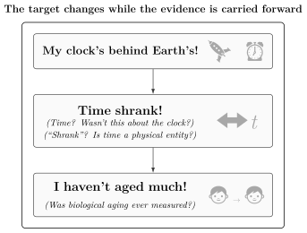
Formulas in the figure
8.8 Worked Reduction for QG
In the quantum-reconstruction scheme, law-admissible time representations and observer-time law cores are generated from records, branch sensitivity, object-state differences, observer-side information coupling, comparison gluing, dynamical-description operability, and law-description operability.
A quantum-gravitational reconstruction that does not include external time among its primitive inputs has constraint systems, canonical gravity, and Wheeler–DeWitt-type descriptions as its background[21, 5, 20]. The problem of time, internal clocks, and relational observables in quantum gravity are representative research subjects concerning the generation conditions for time representations and their qualification for use in laws[42, 39, 53, 62].
Eliminating external time does not generate time content, record order, comparison order, observer-side information coupling, or qualification for use in laws. Even when an internal degree of freedom is selected as a clock, primitive-time input remains merely replaced by the internal clock unless time content is generated from differences, records, comparisons, and observer-side information coupling involving that degree of freedom. If primitive-time input is used to derive results concerning constraint equations, relational change, observables, initial boundaries, the arrow of time, measurement records, or black-hole information, those results inherit dependence on time content that lacks physical-time qualification. Mathematical consistency, predictive performance, and empirical fit do not repair this loss of qualification.
On the same dependency chain, the QG scheme generates clock-candidate-side materials, record-side retention, object-state-side differences, observer-side information coupling, comparison closure, the canonical observer-time quotient, the canonical trajectory relation, law-admissible time representations, and law-output determinacy, and determines the qualification of the time content used by each result in quantum gravity.
8.8.1 From QG Inputs to an Observer-Time Law Core
The inputs to the quantum-reconstruction scheme consist of clock-side or clock-candidate-side tokens, record-side retention, branch-sensitive record structures, object-state-side differences, observer-side information-coupling positions, comparison-gluing conditions, and source-side ternary relations at the dynamical-description stage.
Define this input by

. The raw operational input contains no external time, and the QG-side source-realization datum has as components the comparison-side arrival maps, recovery maps, record retention, comparison gluing, direct dynamical-description arrival maps, source-side pair relations, and source-side ternary relations.

Let the observer-side information-coupling position be , and let the single-object specification index be . Use the QG-scheme-restricted complete evaluation specification of Definition 8.5.
The generation sequence in the worked reduction for QG is

The comparison-stage objects require exact operability; the dynamical-description objects and the law-admissible time representation require dynamical-description operability; and the observer-time law core and qualification for use in laws require law-description operability.
Use the real-valued time-order embedding selected in Definition 5.59. Suppose that the law-evaluation datum satisfies the equality of evaluation specifications under Proposition 5.86.
Proposition 8.60 (Law admissibility in the worked reduction for QG).
Suppose that, for the QG-scheme-restricted complete evaluation specification,
![\mathsf{LawOperative}\left[\mathsf{LawEvalDat}_{o\mathchar 44\relax\allowbreak%
\zeta_{\mathsf{Sch}_{\mathrm{QG}}}}\right]](math-S8/0f325480ea858e6c5ecd5838c04a5c6024c0e070384b29e522f596ef9daa705c.svg)
holds. Then the law-admissible time representation and the observer-time law core
are generated. For any
the law-time value is
.
Proof.
Definition 5.102 and the equality of evaluation specifications imply dynamical-description operability for the QG-scheme-restricted complete evaluation specification. By Theorem 8.31, the canonical observer-time quotient, canonical object-state quotient, canonical trajectory relation, graph trajectory, canonical family of observable functions, and law-admissible time representation are generated. Definition 5.108 generates the observer-time law core. The equality for the law-time value follows from Definition 5.63. ∎
Proposition 8.61 (Generation condition for a time representation in QG reconstruction).
When the dynamical-description-operability condition of Theorem 8.31 holds for the QG-scheme-restricted complete evaluation specification, the law-admissible time representation is generated. If, in addition,
holds, this time representation satisfies qualification for use in laws and the observer-time law core is generated.
Proof.
By Definition 5.70 and Theorem 8.31, satisfaction of dynamical-description operability generates the canonical observer-time quotient, canonical object-state quotient, canonical trajectory relation, graph trajectory, canonical family of observable functions, and law-admissible time representation. By Definition 5.102, law-description operability is the simultaneous satisfaction of dynamical-description operability and the law condition groups. By Definition 5.108, this condition generates the observer-time law core. By Corollary 7.15, generation of law-time content precedes law operations and result derivation. The time representation generated at the dynamical-description stage therefore satisfies qualification for use in laws through the satisfaction of law-description operability. ∎
Connection to the audit of law-time use. Law-time use in a quantum-gravitational reconstruction is subject to the audit of physical-time qualification in Chapter 7. When every generation structure required by the time content used by a law-time use is generated from nontemporal physical inputs and is established prior to law operations and result derivation, that time content satisfies physical-time qualification. If any generation stage for the evaluation specification fails, simultaneous satisfaction of all stages for that complete evaluation specification is not obtained. When time content is used in a law operation or result derivation prior to its generation structures, that time content is a primitive-time input under Definition 7.10. By Theorem 7.11, this time use does not satisfy physical-time qualification. By Proposition 7.13, mathematical consistency, predictive performance, and empirical fit do not repair this loss of qualification.
8.8.2 Law Admissibility without External Time
The problem of time in quantum gravity arises not only from the tension between law descriptions that use external time and theoretical constructions that do not take background spacetime as a primitive premise, but also from assigning temporal roles to constraint equations, internal clocks, or relational observables without generating temporal content after external time has been removed. Removal of external time eliminates one form of primitive-time input, but it does not generate clock-candidate-side differences, record retention, comparison order, observer-side information coupling, the canonical observer-time quotient, or a law-admissible time representation. Even when an internal degree of freedom is selected as a clock, that internal clock bears ungenerated temporal content unless it satisfies the same generation pathway.
When ungenerated temporal content enters a constraint equation or law operation, the time variable fails physical-time qualification. Results concerning relational change, observables, initial boundaries, the arrow of time, measurement records, and black-hole information that are derived from ungenerated temporal content inherit this qualification failure. The problem of time in quantum gravity therefore cannot be resolved solely by the presence or absence of external time or by the choice of a clock variable; it requires simultaneous determination of the generation of temporal content, qualification for use within laws, and the inheritance of dependence by results.
The QG scheme requires clock-candidate-side materials, record-side retention, object-state-side differences, observer-side information coupling, comparison closure, the canonical observer-time quotient, the canonical trajectory relation, a law-admissible time representation, and law-output determinacy to hold along the same dependence chain. This dependence chain generates the time variable, confers qualification for use within laws, and excludes the inheritance of primitive-time dependence by results.
Proposition 8.62 (Relativity, relationality, and non-primitivity do not imply nonexistence).
The dependence of an object on a frame, observer, state, local region, or relation to another object supplies conditions for that object’s existence. The absence of a preferred representative expresses nonuniqueness of choice; being nonabsolute expresses the failure of frame-independent, stand-alone entityhood; and being nonprimitive expresses a dependence position in which the object is generated from other physical inputs. Each condition preserves the possibility that the object exists as a relational or generated object and does not imply its nonexistence.
A claim that time does not exist must specify the type and domain of the temporal content being denied and establish that no object of that type performing a temporal role exists within the theory. If instants, relations among configurations, an order of change, histories, evolution, or clock comparisons perform temporal roles, declining to adopt an independent absolute time entity and denying the existence of all temporal structure are different propositions.
Proof.
Relational dependence, nonuniqueness, nonabsoluteness, and generative dependence specify conditions for an object or its relations to other objects. An existence denial states that, within a specified type and domain, no object of that type exists. The latter therefore does not follow from the former.
Definition 7.10 classifies temporal content used before generation as primitive-time input. Corollary 7.15 requires temporal content to be generated from nontemporal physical inputs before it is used within a law. In this generation order, temporal content exists as a generated object rather than a primitive input. Non-primitivity therefore does not imply the nonexistence of temporal structure.
Time representations dependent on multiple observers, states, or local regions also exist as relational or local temporal structures when comparison rules, gluing conditions, and domains of validity are supplied. Failure of a preferred representative or global representation does not imply the nonexistence of local or relational temporal structure. ∎
Proposition 8.63 (Formal obligations on claims of time creation and time nonexistence).
A theory that literally claims the creation of time must exhibit a generation path from nontemporal physical inputs through object-state differences that presuppose no temporal order, records that retain those differences, comparison rules among the records, observer-side information coupling, temporal order, a time representation, and qualification for use within laws; it must also exclude primitive-time roots from every temporal content it uses.
A theory that literally claims the nonexistence of time must, in accordance with Proposition 8.62, separate claims of relativity, relationality, non-preference, nonabsoluteness, or non-primitivity from an existence denial. It must then delimit the temporal content, temporal order, time representations, and law time that it denies; supply a formal construction in their place; and establish that no temporal dependence root remains in the replacement construction and that subsequent results do not depend on any such root. If the replacement construction uses “instant,” “change,” “history,” “before and after,” or “evolution,” the grounds for each must be generated from nontemporal physical inputs.
These formal obligations apply to every theory that advances the creation, emergence, recovery, or nonexistence of time, and they apply with equal force to the generation of time in this paper.
Proof.
By Corollary 7.15, generation of temporal content precedes law operations and result derivation. By Definition 7.10, temporal content used before its grounding structure is primitive-time input. By Theorem 7.11, primitive-time input fails physical-time qualification. By Corollary 7.12, that dependence is inherited by subsequent results.
A claim of time creation therefore requires a generation path from nontemporal physical inputs to the temporal content used, together with exclusion of primitive-time roots. A claim of time nonexistence requires a delimited object of denial, a replacement construction, and exclusion of temporal dependence roots from that construction. Renaming, eliminating a variable, substituting a relation, or omitting temporal vocabulary does not discharge these formal obligations. ∎
Proposition 8.64 (Interpretation-path-specific determination of statements of time creation and time nonexistence).
The Barbour 1994 I source presented in Subsection 7.3.14 contains the following statement.
Original English:
change creates time
Original English:
It is argued that time as such does not exist but that instants, defined as complete relative configurations of the universe, do.
The Barbour 1994 II source contains the following statement.
Original English:
time is truly non-existent in the kinematic foundations of both theories
The three statements are determined separately for each statement and each admissible interpretation, along the interpretation-specific evidence-comparison path of Definition 7.117.
If “change creates time” is interpreted as the construction, within the explicitly stated domain of application, of configurational differences, an ordering, a scale, a clock correspondence, or an ephemeris-type parameter, it directly describes the corresponding formal construction. The number of crossings of evidential scope is then zero, and no multi-stage misrecognition arises. This interpretation does not claim physical generation of every temporal content used in the source.
If the same statement is interpreted as complete generation of physical time, the operation that uses a realized history, path parameter, or existing temporal content before its generation falls under item 1 of Definition 8.19. The further operation that identifies a restricted configurational construction with physical time possessing generation of every temporal content, exclusion of primitive-time roots, and qualification for use within laws falls under item 2. An interpretive path that connects these two operations by direct dependence constitutes a two-stage misrecognition.
If “time as such does not exist” and “time is truly non-existent in the kinematic foundations” are interpreted as restricted to declining to adopt absolute external time or to the kinematic priority of relative configurations, the number of crossings of evidential scope is zero, and no multi-stage misrecognition arises. An interpretation that extends these statements to the nonexistence of physical time in general transfers the force of an existence denial from a restricted object and domain of application to a different object and domain. It therefore constitutes a one-stage misrecognition under item 4 of the same definition. The total of 39 temporal contents and the time-dependent transfers present in the Barbour 1994 I and II sources are incompatible with this extended interpretation.
Proof.
Subsection 7.3.11 and Remark 7.159 establish the original wording, source attribution, and context of the three statements. Theorem 7.190 establishes that all 18 temporal contents in Barbour 1994 I and all 21 temporal contents in Barbour 1994 II are primitive-time roots. The source-specific Propositions S.305 and S.316 partition the 25 results in Barbour 1994 I into 9 results with evidence-only reach and 16 results that depend on primitive-time roots, and the 26 results in Barbour 1994 II into 8 results with evidence-only reach and 18 results that depend on primitive-time roots. Neither source has generated results or results that remain unreachable after the roots are added. Establishing a result with evidence-only reach does not imply the generation of temporal content.
The interpretation restricted to a configurational construction remains within the evidential scope of the formal result and crosses no evidential boundary. The interpretation as complete generation of physical time directly connects pre-generation use of primitive-time roots to identification of a partial construction with complete generation. The interpretation as the nonexistence of physical time in general transfers an existence denial from the restricted domain of absolute external time or kinematic foundations to physical time in general. The respective numbers of stages are therefore zero, two, and one. ∎
Proposition 8.65 (Interpretation-path-specific determination of generation obligations in thermal-time statements).
The Connes–Rovelli 1994 source presented in Subsection 7.3.14 contains the following statements.
Original English:
there is no preferred time flow
Original English:
thermal time … defines the physical time
If “there is no preferred time flow” is interpreted as restricted to the absence of an externally specified, state-independent preferred flow, the number of crossings of evidential scope is zero, and no multi-stage misrecognition arises. An interpretation that extends the same statement to the absence of every physical time flow transfers the absence of a restricted flow to a different object and domain of application. It therefore constitutes a one-stage misrecognition under item 4 of Definition 8.19.
If “thermal time … defines the physical time” is interpreted as restricted to the mathematical construction in which a thermal state selects a modular automorphism flow, or to a postulate assigning a physical-time interpretation to that flow, the number of crossings of evidential scope is zero, and no multi-stage misrecognition arises. This interpretation does not claim a theorem-level derivation of physical-time qualification.
An interpretation that identifies the selected state-dependent flow with physical time possessing every generation condition and qualification for use within laws transfers a partial construction to the establishment of a subsequent stage. It therefore constitutes a one-stage misrecognition under item 2 of the same definition. An interpretation that further claims complete generation of physical time from nontemporal physical inputs, although the construction uses a real parameter, known Hamiltonian time, proper time, geometric time, or FRW time as a pre-generation input, directly connects items 1 and 2 and constitutes a two-stage misrecognition.
Proof.
Subsection 7.3.11 and Remark 7.159 establish the original wording, source attribution, and context of the two statements. Proposition 7.171 establishes that every temporal content in the source is a primitive-time root. Theorem 7.190 establishes that the set of audit-generated temporal contents is empty. The source-specific Proposition S.328 establishes that the 37 results in the source consist of 16 results with evidence-only reach and 21 results that depend on primitive-time roots.
By Proposition 7.137 and Corollary 7.138, selecting a time flow from a state does not supply the generation history, comparison structure, or conditions of validity of the input temporal content. By Proposition 7.172, the scope of the formal result concerning thermal time does not coincide with that of complete time generation.
The restricted flow selection and interpretive postulate remain within the evidential scope of their formal result. The path that transfers a partial flow to complete establishment of physical time has one stage under item 2. The path that treats a construction using pre-generation time roots as complete generation from nontemporal inputs has two stages under items 1 and 2. The path that extends the absence claim to every physical time flow has one stage under item 4. The stage count is therefore zero, one, or two according to the admissible interpretation. ∎
Proposition 8.66 (Interpretation-path-specific determination of time-emergence statements through bipartite separation).
The Kiefer 2009 source presented in Subsection 7.3.14 contains the following statements.
Original English:
Time is absolute in standard quantum theory and dynamical in general relativity.
Original English:
Time emerges from the separation into two different subsystems
If the second statement purports to assert that separation into two subsystems generates temporal content usable by physical laws, the formal obligations concerning time emergence in Proposition 8.63 arise.
For the formal audit of this source, in the component order of Definition S.4,

![\displaystyle\varnothing\mathchar 44\relax\allowbreak[35];\varnothing\mathchar
4%
4\relax\allowbreak\{5\mathchar 44\relax\allowbreak 6\mathchar 44\relax%
\allowbreak 7\mathchar 44\relax\allowbreak 8\mathchar 44\relax\allowbreak 13\}%
\mathchar 44\relax\allowbreak](math-S8/865e1ee39565910328f14c10b5004da9c15edd6dfe45b27450a3cafb03aacc8f.svg)

If the first statement is interpreted as restricted to the difference in formal role between an external background parameter in standard quantum theory and a dynamical spacetime variable in general relativity, the number of crossings of evidential scope is zero, and no multi-stage misrecognition arises.
If the second statement is interpreted as restricted to constructing a semiclassical time parameter or an internal-clock candidate through separation into two subsystems, it directly describes a source-specific approximate construction, and the number of crossings of evidential scope is likewise zero. If the same statement is interpreted as complete generation of physical time and the subsystem parameter is identified with generation of every temporal content, qualification for use within laws, and exclusion of primitive-time roots, it constitutes a one-stage misrecognition under item 2 of Definition 8.19. An interpretation that further treats a semiclassical construction using pre-generation time roots as complete generation from nontemporal physical inputs directly connects items 1 and 2 and constitutes a two-stage misrecognition.
An interpretation that transfers the absence of external time from the fundamental equation to the nonexistence of physical time in general changes the object and domain of application. It therefore constitutes a one-stage misrecognition under item 4 of the same definition.
Proof.
Proposition 7.169 establishes the original wording, source attribution, and original locations of the two statements, and separates the contrast between temporal roles in standard quantum theory and general relativity, bipartite time, complete time generation, exclusion of primitive-time roots, and qualification for use within laws into distinct evidential scopes. By Theorem 7.190, the set of audit-generated temporal contents is empty and every temporal content in the source is a primitive-time root. For the Kiefer 2009 reference specifically, Proposition S.539 establishes that the 15 results consist of 5 results with evidence-only reach and 10 results that depend on primitive-time roots. The four-way partition in Proposition 7.49 then implies that the audit-generated result set is empty and that all 15 results lie beyond reach from the generation-initial set.
Proposition 8.63 requires, for a literal claim of time emergence, a generation path from nontemporal physical inputs through temporal content, temporal order, a time representation, and qualification for use within laws, together with exclusion of primitive-time roots from every temporal content. Because the source contains no audit-generated temporal content and every result depends on primitive-time roots, these formal obligations are not fulfilled.
The interpretation restricted to a semiclassical time parameter or internal-clock candidate remains within the evidential scope of a partial formal result. The path that transfers the partial construction to complete establishment of physical time has one stage under item 2; the path that connects use of pre-generation time roots to identification with complete generation has two stages under items 1 and 2; and the path that transfers the absence of external time to the nonexistence of physical time in general has one stage under item 4. The stage count is therefore zero, one, or two according to the admissible interpretation. ∎
Proposition 8.67 (Interpretation-path-specific determination of generation qualification in the statement that time is fundamental).
The Smolin 2018/2020 source presented in Subsection 7.3.14 contains the following statement.
Original English:
I take the opposite view, that time is fundamental.
If this statement purports to license the use of temporal content as a ground of physical laws or as a law input prior to its generation, that temporal content is a primitive-time input under Definition 7.10. By Theorem 7.11, that temporal content fails physical-time qualification.
For the complete determination and result classification of this source, in the component order of Definition S.4,
![\displaystyle\varnothing\mathchar 44\relax\allowbreak[27];](math-S8/a0823868b9c9eee226ab992b3c32a6539f7005bb98e868ad816d4e03fa40084d.svg)
The local-reach determination gives


There are 127 obligation atoms.
If “time is fundamental” is interpreted as a classification asserting the theoretical priority or irreducibility of time, the number of crossings of evidential scope is zero, and no multi-stage misrecognition arises. This classification does not assert generation-prior qualification of temporal content.
If the same statement is interpreted as approving the use of temporal content before its generation as a ground of physical laws or as a law input, that temporal content becomes a primitive-time input. This interpretation constitutes a one-stage misrecognition under item 1 of Definition 8.19. Neither the local-reach determination nor the complete determination yields any generated temporal content. All 27 source-specific temporal contents remain primitive-time roots, and 21 of the 28 results depend on primitive-time roots.
Proof.
Proposition 7.169 separates the fundamentality of time, generation of all source-specific temporal contents, exclusion of primitive-time roots, and qualification for use within laws into distinct evidential scopes. Proposition 7.171 establishes the original wording, source attribution, and original location of the statement, that the set of strictly generated temporal contents is empty, and that all 27 source-specific temporal contents are primitive-time roots. No temporal content is reached under the local-reach determination, so all 27 remain primitive-time roots. Proposition 7.136 establishes that there are 127 obligation atoms and that 21 of the 28 results depend on primitive-time roots. The source-specific result classification in Proposition S.626, together with the four-way partition in Proposition 7.49, establishes that the audit-generated result set is empty and that all 28 results, comprising 7 results with evidence-only reach and 21 results that depend on primitive-time roots, lie beyond reach from the generation-initial set.
By Corollary 7.15, generation of temporal content precedes law operations and result derivation. For this source, neither the local-reach determination nor the complete determination yields any generated temporal content. None of the 27 temporal contents is therefore generated, and the dependence of 21 of the 28 results on primitive-time roots remains.
The interpretation restricted to theoretical priority or irreducibility remains within the evidential scope of a classification and has zero stages. The interpretation that licenses use within laws before generation places a primitive-time input among the law inputs and therefore constitutes a one-stage misrecognition under item 1. Along either path, the qualification of temporal content used in physical laws is determined by its generation path from nontemporal physical inputs. ∎
Proposition 8.68 (The problem of time as law admissibility).
Even when external time is absent from the raw operative input to the QG-scheme-restricted complete evaluation specification, the establishment condition for the law-description stage is
. If temporal content is used in a constraint equation, law operation, or result derivation before the generated structures required for that use are established, that content is a primitive-time input, and results depending on it inherit the qualification failure.
Proof.
Exclusion of external time from the input is a component condition on the raw operative input. Law-description operability under Definition 5.102 requires the joint satisfaction of dynamical-description operability and the law condition group. Removing external time does not supply the generation conditions constituting law-description operability.
When law-description operability holds, Proposition 8.60 generates a law-admissible time representation, observer-time law core, and law-time value. By Corollary 7.15, generation of law-time content precedes law operations and result derivation.
If temporal content is used before the generated structures required for that use are established, Definition 7.10 and Theorem 7.11 make that content a primitive-time input that fails physical-time qualification. By Corollary 7.12, dependence on that temporal content is inherited by the results. By Proposition 7.13, mathematical consistency, predictive performance, and empirical adequacy do not repair this qualification failure. ∎
Proposition 8.69 (Failure localization in the worked QG reduction).
If a generation condition in the QG-scheme-restricted complete evaluation specification fails, each minimal failure position is classified within the six series of comparison, representation, continuous-approximation, dynamical-description, law-description, or differential failure. The QG-specific correspondences are as follows.
-
(1)
When a comparison-stage or representation-stage condition concerning record sequences, object-state identification, or comparison gluing is formed and evaluable, its failure is classified by a failure-position token of the corresponding stage.
-
(2)
Where evaluation readiness holds for condition 3, excess -record cell width is determined by
-
(3)
Whether a failure occurs at the dynamical-description stage is determined by
-
(4)
Whether a failure occurs at the law-description stage is determined by
-
(5)
Whether a failure occurs at the differential stage is determined by
![\mathsf{FA}_{3}\left[\mathsf{Ev}_{\mathsf{Sch}_{\mathrm{QG}}};\lambda\right]](math-S8/c8fdb674d1e60db02bc784a8b743da3b8834881875b185b6cc64b38e390e122e.svg)
![\bigvee_{i\in I_{\mathsf{dyn}}^{\mathrm{fail}}}\mathsf{FDyn}_{i}\left[\mathsf{%
Ev}_{\mathsf{Sch}_{\mathrm{QG}}}\right]](math-S8/5265d09c5b7a965384e44f5d365b782b958cc13a526ef55e02e3732ae6315b94.svg)
![\bigvee_{i=1}^{5}\mathsf{FDiff}_{i}\left[\mathsf{Ev}_{\mathsf{Sch}_{\mathrm{QG%
}}}\right]](math-S8/66cca6a782591e0510fdd7970e052ba16ca93156b8e83e35a30ca467beba048d.svg)
Proof.
By Proposition 6.26, the failed-token set equals its set of minimal elements. By Definition 6.10, the corresponding failure-position token is assigned to each minimal failure position. Failure of a comparison-stage condition is classified by Definition 6.36; failure of a representation-stage condition, by Definition 6.58; failure of a continuous-approximation-stage condition, by Definition 6.77; failure of a dynamical-description-stage condition, by Definition 6.104; failure of a law-description-stage condition, by Definition 6.110; and failure of a differential-stage condition, by Definition 6.137.
Where evaluation readiness holds for condition 3, excess -record cell width is determined by Definition 6.79. The minimal failure classes at the dynamical-description, law-description, and differential stages are given, respectively, by Definitions 6.104, 6.114, and 6.140. Each minimal failure position in the QG-scheme-restricted complete evaluation specification is therefore classified within one of the six failure series. ∎
8.8.3 Cosmological initial boundaries and time-generation conditions
When a cosmological initial boundary is specified by a time variable, if generation of that variable does not precede the law description of the initial boundary, the beginning of the universe, what is before or after that beginning, and the direction of time are described by a temporal order lacking grounds. If a theory describing the origin of time uses ungenerated time in its account of that origin, the theory uses the temporal order to be explained as an explanatory input before generating it, and results derived from the initial boundary inherit primitive-time dependence.
Quantum cosmology and the problem of initial conditions concern cosmological initial boundaries and temporal orientation[34, 56]. From local displays, records, object-state differences, and observer-side information coupling, the QG scheme generates comparison closure, the canonical observer-time quotient, a law-admissible time representation, and an observer-time law core. If a time variable is applied to an initial boundary before generation holds, its qualification failure is determined as primitive-time input; if it is applied after generation holds, it is evaluated as a boundary on a generated time representation.
Proposition 8.70 (Time-generation conditions at a cosmological initial boundary).
Suppose that the QG-scheme-restricted complete evaluation specification targets a cosmological initial boundary. When dynamical-description operability holds, the law-admissible time representation used to describe the initial boundary is generated. When law-description operability holds, that time representation satisfies qualification for use within laws and the observer-time law core is generated.
Proof.
For a QG-scheme-restricted complete evaluation specification, Proposition 8.61 gives generation of a law-admissible time representation through dynamical-description operability and generation of qualification for use within laws and an observer-time law core through law-description operability. The cosmological initial boundary belongs to the same evaluation specification through the object specification. The generation conditions of that proposition therefore apply to the description of the initial boundary. ∎
Proposition 8.71 (Localization of time failure at a cosmological initial boundary).
If any generation condition in Proposition 8.70 fails, each minimal failure position is classified by the corresponding failure-position token in the six failure series.
Proof.
Proposition 8.69 classifies each minimal failure position in a QG-scheme-restricted complete evaluation specification within the six failure series. Because a cosmological initial boundary belongs to the object specification of the same evaluation specification, the classification of that proposition applies. ∎
8.8.4 Consequences for extreme-gravity domains, observables, and the arrow of time
In the black-hole information problem, descriptions of information preservation, radiation, records, external observers, and interior regions compare the periods before and after radiation, the evaporation process, and information recovery along the same temporal evolution. Black-hole entropy, Hawking radiation, predictability, and recovery of information in radiation are representative lines of research[10, 35, 36, 54]. If this temporal evolution uses ungenerated temporal content, results asserting information preservation, information loss, or information recovery inherit primitive-time dependence. The QG scheme generates records, comparisons, observer-side information coupling, a law-admissible time representation, a scale-indexed effective domain, and failure positions, thereby determining the physical-time qualification of the temporal evolution used in the information problem.
For the problem of observables, selecting an internal degree of freedom as a clock and describing its relation to other quantities does not by itself generate temporal content from differences in that clock degree of freedom, records, comparisons, and observer-side information coupling. Relational changes and observable values defined relative to an ungenerated internal clock inherit primitive-time dependence. Joint satisfaction of object-state differences, observer-side information coupling, the canonical observer-time quotient, the canonical family of observable functions, and a law-admissible time representation confers qualification for use within laws on observable values. Constrained systems, canonical quantum gravity, and relational observables are representative lines of research[21, 20, 62].
The arrow of time is an additional orientation condition on a generated time representation. If a low-entropy initial condition or the orientation of a coarse-grained history is placed on ungenerated time, the before-and-after relation on which that orientation depends remains without physical-time qualification. Thermodynamic orientation, cosmological orientation, and record orientation are evaluated when record retention, comparison closure, observer-side information coupling, and coarse-grained histories hold on a generated time representation. Cosmological initial conditions, singularities, and boundary conditions in quantum cosmology are representative lines of research[56, 34].
When quantum measurement records are assigned a before and after, a recording time, or a decoherence process, if the temporal content bearing that order is ungenerated, the measurement records and decoherence results inherit primitive-time dependence. Joint satisfaction of object-state differences, record-side retention, observer-side information coupling, and a law-admissible time representation temporalizes the measurement records. Mathematical formulations of the measurement process and decoherence are representative lines of research[71, 74].
Proposition 8.23 classifies an explanatory form that treats relativistic clock differences as stretching, slowing, or deformation of an unconstructed time entity as the two-stage misrecognition of the time-stretching account. Atomic-clock differences, differences in molecular-vibration periods, covalent-bond vibration sequences, electronic-state transitions, scattering events, and decay events supply physical carriers from which -derived sequences, -derived records, -derived differences, and -derived coupling generate time representations.

Gravitational, geometric, and medium conditions modulate the physical carriers supplied by atomic clocks, molecular vibrations, covalent-bond vibrations, electronic-state transitions, scattering detections, and decay detections. This modulation is classified as changes in role-carrier realization, record retention, comparison gluing, object-state identification, observer-side information coupling, trajectory relations, and law-output determinacy.
Atomic-clock and period differences under gravitational conditions, conventionally represented as proper-time differences, are comparison-derived differences among generated law-admissible time representations. By Proposition 8.32, clock and period differences reduce to differences in frequency representations obtained from -derived cycle-count differences and generated representation-coordinate differences. Stretching of a time entity is not the generation mechanism of these comparison-derived differences.
Using electronic-state transitions, scattering events, and decay events as event sequences on a time variable requires generation of that variable to precede the law description of the event sequence. Electronic-state transitions contribute to the establishment of object-state differences and trajectory relations; scattering and decay events contribute to the establishment of detection records, object-state differences, and observer-side information coupling.
In extreme-gravity domains, identification of -derived sequences, preservation of the correspondence between -derived records and object-state differences, the -derived canonical trajectory relation, or law-output determinacy may fail. By Proposition 8.69, each minimal failure position is classified within the six failure series.
For theories of spacetime emergence, the QG scheme requires generation conditions for the time representations used in post-emergence spatiotemporal descriptions, scale-indexed effective domains, and failure positions. Spacetime construction from light and free fall, causal sets, holography, and connections between entanglement and geometry are representative lines of research[22, 11, 45, 64].
In descriptions concerning the cosmological constant and dark energy, expansion history, observational records, distance scales, time values, and law representations are joined on the same generated time representation. Vacuum-energy values, matter components, and field content belong to theory-specific inputs; the audit concerns the conditions for generating temporal comparisons, dynamical descriptions, and law-admissible time representations from those inputs. The cosmological-constant problem and observations of dark energy are representative lines of research[72, 60, 57].
Proposition 8.72 (Safe reuse of quantum-gravitational results through generated time and failure classification).
Within a domain in which the conditions of Propositions 8.61 and 8.60 hold, the generated law-admissible time representation, observer-time law core, law-time value, canonical observer-time quotient, canonical object-state quotient, canonical trajectory relation, graph trajectory, and canonical family of observable functions may be used. Results concerning constraint equations, internal clocks, relational observables, cosmological initial boundaries, the arrow of time, quantum measurement records, decoherence, black-hole information, spacetime emergence, the cosmological constant, and dark energy may be used within domains in which their respective theory-specific conditions and the generation conditions of the temporal contents on which they depend hold.
Each minimal failure position classified by Proposition 8.69 determines the QG constituent to be repaired first or the condition by which the domain of validity must be restricted. Failure at the comparison stage requires repair of clock-candidate-side materials, record-side retention, object-state-side differences, observer-side information coupling, comparison rules, or comparison gluing. Failure at the representation or continuous-approximation stage requires repair of the canonical observer-time quotient, law-admissible time representation, -record cell width, comparison domain, or scale domain of approximation validity. Failure at the dynamical-description, law-representation, or differential stage requires repair of the canonical trajectory relation, canonical family of observable functions, law-evaluation datum, law-output determinacy, or differential evaluation specification. When repair succeeds, relational changes, observables, initial boundaries, the arrow of time, measurement records, decoherence, black-hole information, post-emergence spacetime descriptions, and cosmological law results are regenerated or recomputed in dependence order from the repaired inputs. If the stage condition does not hold throughout the entire domain, the domain in which a result is used is restricted to the region in which that condition holds.
By Proposition 8.68, generation conditions for temporal content and law-description operability remain necessary after external time has been removed. Failure classification assigns failures of external-time input, undergeneration of an internal clock, comparison gluing, time representation, dynamical description, law-output determinacy, and differential consistency to the corresponding minimal failure positions. The problem of time in quantum gravity can thereby be decomposed into stagewise problems accompanied by a repair target or a restriction of the domain of validity.
When an error source in record retention, object-state identification, comparison gluing, -record cell width, relational observables, initial boundaries, measurement records, continuous approximation, or differential evaluation is repaired, the repair’s effect on accuracy is determined by an accuracy evaluation of the regenerated or recomputed downstream results. Decisions concerning the use of quantum-gravitational results therefore divide into retention within a domain of validity and repair from each minimal failure position or restriction of the domain of validity.
Proof.
By Proposition 8.61, dynamical-description operability generates a law-admissible time representation, while law-description operability confers qualification for use within laws on that representation and generates the observer-time law core. By Proposition 8.60 and Theorem 8.31, the canonical observer-time quotient, canonical object-state quotient, canonical trajectory relation, graph trajectory, canonical family of observable functions, law-admissible time representation, and law-time value are generated. By Proposition 8.21, when the temporal content on which each result depends and its grounding structure are generated prior to law operations and result derivation, the temporal input satisfies physical-time qualification.
By Proposition 8.69 and Definition 6.17, conditions and results downstream of each minimal failure position depend on upstream conditions. When the input or rule at each minimal failure position can be repaired, downstream results are regenerated or recomputed in dependence order from the repaired inputs. If the relevant stage condition does not hold throughout the entire domain, the domain of use is restricted to the region in which it does hold, and results generated within that region are used.
Proposition 8.68 separates removal of external time from generation of temporal content and determines qualification for use within laws through law-description operability. Propositions 8.70 and 8.71 supply the same generation conditions and failure classification for cosmological initial boundaries. The problems of external-time input, internal clocks, comparison gluing, time representation, dynamical description, law-output determinacy, and differential consistency can therefore be separated by their minimal failure positions.
When an error source belongs to record retention, object-state identification, comparison gluing, -record cell width, relational observables, initial boundaries, measurement records, continuous approximation, or differential evaluation, downstream results can be regenerated or recomputed from inputs in which that source has been repaired, and accuracy evaluation can be applied to the recomputed results. Thus retention of quantum-gravitational results within a domain of validity, the order of repair or domain restriction from each minimal failure position, and conditional accuracy evaluation are established. ∎
8.9 Generation order of time-bearing quantities and cross-field consequences
Proposition 8.73 (Post-generation qualification for use of time-bearing quantities).
For the twelve objects in Subsection 7.3.16, the dimension, unit, constancy, invariance, or algebraic relation of a time-bearing quantity does not supply the physical generation of the temporal content used by that quantity. The use of each time-bearing quantity within a physical law is established in a domain in which the required temporal content and physical-time qualification are generated before law operations and result derivation, and in which the theory-specific establishment conditions are satisfied.
The object name and the presence or absence of a temporal dimension provide the extraction conditions, while the generation-dependence order appearing in the formal relations of the original source provides the basis of the audit determination. The physical relations of emission, propagation, reception, recording, atomic transitions, oscillators, particle decay, electromagnetic fields, gravitational fields, resonance lines, and measuring instruments are preserved as theory-specific inputs to the LCTR generation and audit construction. After temporal content has been generated, predicates concerning the constancy, invariance, rate, lifetime, linewidth, or frequency of each quantity are applied relative to generated time representations, admissible transformations, measurement procedures, and theory-specific domains of validity.
Proof.
By Proposition 7.178, the generation of the temporal content required by a time-bearing quantity does not follow from the dimension, unit, or algebraic relation of that quantity. By Theorem 7.203, the physical establishment of a physical-law time variable requires the generation of temporal content and its grounding structure before law operations and result derivation.
By Remark 7.179, when temporal content and physical-time qualification have been generated and the theory-specific establishment conditions are satisfied, existing formal relations, including those for the twelve objects, may be used in their post-generation domains of application. Preservation of the physical relations as theory-specific inputs and post-generation qualification for use of time-bearing quantities therefore hold jointly. ∎
Proposition 8.74 (Physical domain of light-speed invariance).
The physical relations of the emission, propagation, reception, and recording of light are preserved as theory-specific inputs. Because the numerical expression for the speed of light uses a spatial difference and a time difference, it requires the temporal content supplying that time difference and its physical-time qualification.
The quantification domain of light-speed invariance in special relativity is the domain in which a generated law-admissible time representation, a spatial representation, admissible representation transformations between inertial observers, clock and length standards, measurement procedures, and the light-propagation relation hold. The constancy of the vacuum speed of light measured in a local inertial frame, and the local upper propagation limit for matter, signals, or causal influences, are preserved in this domain. This establishment does not entail an unconditional universal proposition concerning an arbitrary coordinate speed of light, cosmological recession velocity, phase velocity, or displayed quantity that carries no information. If physical carriers and comparison constructions differ, and different generated time representations result, identical numerical invariance across those representations does not follow automatically. The determination must be made with the coordinate transformation, metric, clock and length standards, and domain of application fixed consistently. Where these conditions hold, the numerical expression and invariance of the speed of light may be used as results of special relativity. Dependence that uses the speed of light as a ground for the establishment of a time scale or synchronization rule before temporal content is generated is determined as pre-generation placement and reverse presupposition of a derived quantity.

Proof.
By Proposition 7.182, pre-generation placement, omission of generation stages, and reverse presupposition of a derived quantity hold on the formal track for the speed of light. Proposition 7.180 separates the physical propagation of light, the generation order of the temporal content used by a velocity expression, the constancy of the vacuum speed of light in a local inertial frame, and the different types of velocity, frames of reference, and domains of application. By Proposition 8.44, a Lorentz transformation is established as an admissible representation transformation between generated time representations and spatial displays. By Proposition 8.50, the transformation results and differential quantities of special relativity may be used in a domain in which the temporal content on which each result depends and the conditions at each stage hold.
It follows that, while the physical propagation relation of light is preserved as a theory-specific input, the quantification domain of the numerical expression and invariance of the speed of light is determined by generated time representations, admissible transformations, and theory-specific establishment conditions. ∎
Corollary 8.75 (Cross-field consequence for the twelve time-bearing objects).
Among the 96 determination fields produced by applying the four audit determinations on two tracks to the twelve time-bearing objects, an audit determination holds in 21 fields on the formal track and in zero fields on the statement track. The evidence included in the Appendix does not establish the corresponding determination for the remaining 75 fields.
The 21 established fields on the formal track consist of nine fields of pre-generation placement, seven fields of omission of generation stages, and five fields of reverse presupposition of a derived quantity. Reattribution of a time property is established in zero fields. This distribution separates the failure positions according to the dependence order in the original-source formal description of each object.
Proof.
Apply the four audit determinations on two tracks and the determination-specific breakdown of Proposition 7.182. Proposition 7.181 establishes the persistence of primitive-time-root dependence in the decay constants, half-lives, mean lives, frequency shifts, frequency widths, acoustic-wave lifetimes, Planck constant, transition angular frequencies, linewidths, resonance widths, lifetimes, and Compton angular frequency treated in Curtiss 1949, Headley–Clayton–Reed 1996, Clark 2001, Wolf et al. 2011, and the PDG 2023 resonance reference. The determinations for the twelve objects therefore follow from the dependence orders in the source-specific formal evidence. ∎
8.10 Cross-field synthesis of representative theoretical results through generated time and failure classification
Proposition 8.76 (Cross-field evidence comparison of the unbounded inheritance of limited results).
The general application of Proposition 8.20 is compared with the formal evidence and statement evidence from thermodynamics, cosmology, quantum measurement, quantum gravity, relativity, biological application, and time-bearing quantities.
Subsection 7.3.18 maps the formal evidence and statement evidence from all 72 audited references to the audit method or representative arguments of Chapter 7. From that full-reference connection, the present proposition extracts cross-field direct-dependency paths and synthesizes, for each representative path, the evidence boundaries encompassing sources of the same or a closely related form.
When macroscopic asymmetry, redshift and model fit, decoherence, removal of external time and selection of an internal clock, differences in clock readings, frequencies, or particle lifetimes, and relations containing time-bearing quantities are established, their establishment belongs to the evidence-effect domain specific to each result.
These limited results alone do not establish the physical generation of temporal content, the physical-time qualification of law time, a time attribute independent of physical carriers, direct demonstration concerning biological processes or subjective experience, a beginning, nonexistence, or emergence of time itself, or generation of the time roots on which time-bearing quantities depend. Each such claim requires independent evidence or a valid derivation specific to that claim.
A literal interpretation that transfers a relativistic clock difference to a change in an attribute of an unconstructed time entity constitutes a two-stage misrecognition, and an interpretation that then transfers it to direct demonstration concerning biological processes constitutes a three-stage misrecognition. No misrecognition arises for a statement whose original-source text identifies its figurative character, states that it does not designate a literal deformation of time, and identifies the actual referent within the same explanatory scope. An interpretation that reads an expression as a bare time-attribute expression constitutes a one-stage misrecognition; one that reads it as a literal time attribute constitutes a two-stage misrecognition. Thermodynamics, cosmology, quantum measurement, quantum gravity, and time-bearing quantities are likewise assigned no single stage count by field. Only direct dependencies that cross evidence-effect boundaries are counted, separately for each permissible interpretation of an actual original-source statement.
Statements about the arrow of time concerning time-reversal symmetry, low-entropy boundary conditions, and the cosmological direction of time are preserved within the evidence-effect domain of the asymmetry or orientation that each describes. The arrow of time is a subsequent orientation condition on a generated time representation, and an interpretive path that remains within this dependence order crosses zero evidence-effect boundaries.
An interpretive path that reads Feynman’s statement concerning the beginning of “at least our part of the universe” as the initial boundary of a cosmological model or region crosses zero evidence-effect boundaries. A path that transfers the same statement to the beginning, nonexistence, or meaninglessness of physical time in general crosses one evidence-effect boundary, from the boundary of a model or region to the domain of existence of time in general, and constitutes a one-stage misrecognition. The interrogative statement in the original source asking whether an earlier time has meaning does not conclude that physical time in general is nonexistent or meaningless.
The argument of Augustine presented in Heisenberg 1958 states that time was created together with the world and did not exist before the universe. Heisenberg himself analyzes the word “created” in the creation of time as presupposing a before–after relation and therefore finds no rational definition for the phrase “time was created.” This analysis directly identifies the self-dependence by which a statement about the beginning or creation of time uses a temporal relation in the statement operation itself. Establishing a statement of time creation requires a generation relation that identifies the states before and after creation without depending on time.
The excess distances of distant supernovae derived by Riess et al. and the incompatibility derived by Perlmutter et al. between their supernova sample and a flat, matter-only cosmological model are preserved within their respective evidence-effect domains of observation, correction, calibration, estimation, and model fitting. An interpretation that transfers these results to direct demonstration of the entire cosmic history, generation of temporal content, or the domain of existence of physical time in general constitutes an evidence-effect boundary along that interpretive path when an actual statement or explanation performs the transfer. The cited original sources of Riess et al. and Perlmutter et al. do not yield this transfer.
The corrections to the vocabulary of cosmic expansion by Bunn–Hogg, Lewis et al., and Peacock describe observed redshift in terms of geodesics, local relative motion, or spacetime geometry, without attributing it to the action of an independent physical carrier called expanding space. In the cross-field audit, these corrections provide counterevidence against paths that move from a limited result to a temporal ontology or an independent carrier.
The agreement between the muon-lifetime measurement and relativistic prediction in Bailey et al. 1977 is preserved within the evidence-effect domain of the particle lifetime, measurement conditions, and adopted theoretical antecedents. A path that estimates the negative-muon lifetime at rest with special relativity as an antecedent does not simultaneously transmit that same estimate to an independent test of special relativity and an unconditional test of CPT invariance.
In Feynman 1995, an explanation of a nuclear transition and frequency shift proceeds within the same source to a generalization to all physical processes, an application to human life and aging, and a description in terms of an attribute of the flow of time. In Narlikar 2010, an explanation of signals from a collapsing body, redshift, and reception waiting time proceeds to a description in terms of a difference in the rates at which time flows for two subjects. The former makes concrete the boundary between formal generalization to physical processes and direct demonstration concerning biological processes; the latter makes concrete the boundary between signal–wavelength relations and an attribute of time flow independent of physical carriers. Limited results concerning clocks, signals, frequencies, or particle lifetimes add no evidence specific to the claims beyond those boundaries.
Von Neumann 1932 explicitly introduces time as an input to a nonstationary wave function and quantum evolution. The mathematical consistency, predictive performance, or empirical agreement of a quantum formalism using this time input does not generate time from nontemporal physical inputs. The source distinguishes an empirical statement of the type in which an observer has obtained a subjective perception from a statement of the type in which a physical quantity has a value. The former includes subjective perception among its objects but supplies no direct measurement of a change in subjective temporal experience. The system–environment interaction, environmental correlations, suppression of interference, and pointer structure in Zurek 2003 are preserved within the evidence-effect domain of decoherence. Adler 2003 supplies corrective evidence that separates limited decoherence results from a solution of the entire quantum measurement problem, while Schlosshauer 2005 supplies reserving evidence that does not treat the implication between them as settled. The evidence paths provided by these four sources separate external-time input, decoherence results, single-outcome selection, resolution of the entire quantum measurement problem, and generation of temporal content into distinct evidence-effect domains. If another actual statement moves among these domains, an evidence-effect boundary is counted for each direct dependency.
In quantum gravity, removal of an external time parameter, selection of an internal clock, a state-dependent flow, bipartite time, relational reformulation, and complete generation of physical time are treated as distinct results. Interpretive paths that read statements in Barbour 1994 I and II, Connes–Rovelli 1994, Kiefer 2009, and Smolin 2018/2020 as limited formal results or theoretical classifications preserve those statements within their evidence-effect domains. Paths that transfer the same statements to the creation or nonexistence of physical time in general, complete generation of every temporal content, complete exclusion of primitive-time roots, or qualification for use within laws prior to generation constitute one- or two-stage misrecognitions according to the established interpretation-path-specific determinations. Descriptions of the problem of time, candidate constructions, and relational results by DeWitt, Isham, Kuchař, Page–Wootters, and Rovelli are preserved as evidence identifying the problem and supplying partial formal results. In particular, the relational formalism of Rovelli 2002 expresses dynamical predictions as relations among partial observables, selects no particular partial variable as time, and places no vocabulary of evolution in the fundamental structure. This result does not generate, from nontemporal physical inputs, the clocks, records, comparisons, order, scale, and qualification for use within laws that physically realize those relations. The obligation to remove external time from a formalism and the obligation to generate physical time belong to different evidence-effect domains.
Within operational constructions, Bridgman 1927 explicitly identifies the inadequacy of basic operations for time measurement and clock-construction specifications. Ehlers–Pirani–Schild 1972 excludes clocks from the basic tools of its own construction from light rays and freely falling particles and derives measurement operations. The atomic-clock interpretation of the chronometric axiom in Synge’s preceding method is distinct from the additional empirical postulate equating gravitational and atomic time after the EPS reconstruction. These results identify incomplete construction, change the order of construction, or establish conditional structural results. A hypothetical interpretation that extends identification of a problem, removal of a primitive instrument, or transition to a derived operation to completed generation of all time contents or law-time qualification crosses an evidence-effect boundary from a local or partial stage to a subsequent stage.
In black-hole thermodynamics, radiation, and information, the formal analogy and conjecture in Bekenstein 1973, the radiation result and boundary of the semiclassical approximation in Hawking 1975, the classical spacetime background and temporal Fourier components in Hawking 1976, and the model-dependent first conjecture in Page 1993 are each preserved within the domain of effect established by the original source. Computational success concerning area increase, a radiation spectrum, an evaporation time, or the appearance of information does not repair the generation of the temporal content presupposed by those computations, the physical establishment of the background spacetime, or resolution of the entire black-hole information problem. An interpretive path that transfers a limited computational result to any of these subsequent claims requires independent evidence or a valid derivation for each destination of transfer.
In duality, entanglement, and spacetime emergence, the duality conjecture of Maldacena 1998, the proposed area law and limitations on quantitative comparison in Ryu–Takayanagi 2006, and the relation between entanglement and spatial connectedness in Van Raamsdonk 2010 are preserved as their respective formal results. An interpretation that transfers a boundary–bulk correspondence, minimal-surface correspondence, or explanation of spatial connectedness to physical-time qualification of a time variable, completion of a spacetime-generation mechanism, or complete generation of physical time in general crosses an evidence-effect boundary from the domain in which the formal correspondence is established to a generation obligation.
The mathematical consistency, predictive performance, model fit, and empirical agreement established in each field are preserved within their respective evidence-effect domains. Generating temporal content from nontemporal physical inputs and auditing its domain of validity and failure position determine the domain in which existing results may be reused safely.
Proof.
By Proposition 7.118, a limited result does not establish a claim beyond an evidence-effect boundary. By Corollary 7.119, inheritance of primitive-time dependence by results and inheritance of a limited result by a claim outside its domain of application are distinct audit axes.
Proposition 7.142, Proposition 7.143, and Corollary 7.144 separate the establishment of a temporal direction from the generation of temporal content. Proposition 7.154 separates the initial boundary of a cosmological model or region from the domain of existence of physical time in general, and determines the number of boundary crossings for each interpretive path without converting an interrogative statement in the original source into a conclusion. Proposition 7.155 separates the evidence types of observation, estimation, model fit, and direct demonstration. Proposition 7.176 and Corollary 7.177 separate the formal domain of effect made explicit by corrections to cosmic-expansion vocabulary from the time-generation audit. Proposition 7.133, Proposition 7.134, Corollary 7.135, and Proposition 7.132 separate external-time input, an empirical statement concerning subjective perception, direct measurement of subjective temporal experience, the domain of validity of decoherence, single-outcome selection, resolution of the entire quantum measurement problem, and generation of law time, and determine the roles of corrective and reserving evidence.
Proposition 7.172, Proposition 7.170, and Proposition 7.169 separate the limited results of adjacent time programs, removal of a privileged time from a relational formalism, the distinct obligations of removing external time and generating physical time, the fundamentality of time, and complete time generation into different evidence-effect domains. Proposition 8.64, Proposition 8.65, Proposition 8.66, and Proposition 8.67 determine, for each permissible interpretation of each actual statement, the number of evidence-effect boundaries connected by direct dependency.
Subsection 7.3.18 connects the statement content, interpretability, conditional comparison with formal evidence, and evidence-effect boundary for all 72 audited references—not only the representative paths above—to the audit method or representative arguments of Chapter 7. Subsections 7.3.1, 7.3.8, and 7.3.9 establish the primitive-time roots and result dependencies remaining in the formal evidence for operational constructions, black holes, and spacetime emergence.
Proposition 7.178 and Proposition 8.73 separate relations containing time-bearing quantities from post-generation qualification for use of their time roots. Proposition 7.185, Proposition 7.184, Proposition 7.193, and Proposition 8.59 separate direct measurement of physical carriers, attribution to a time property, and direct demonstration of biological application.
By Theorem 7.190, primitive-time roots and results dependent on primitive-time roots occur in all 72 audited references. It follows that evidence-effect boundaries separate each limited result’s evidence-effect domain from generation of temporal content, time qualification, time attributes, biological application, temporal ontology, and the time roots of time-bearing quantities. Within a path formed by the formal construction, statements, and permissible interpretations of each reference, a direct dependency that crosses such a boundary constitutes unbounded inheritance of a limited result. Generated time and failure classification determine, for each such path, the domain in which existing results may be reused safely. ∎
Proposition 8.77 (Target consistency between time-nonexistence statements and the attribution of time properties).
When a time-nonexistence statement and a time-property statement coexist within the same theoretical description or reference, or when statements from multiple references are synthesized across fields under a common explanatory vocabulary, the type and domain of application of the temporal content targeted by the two statements are aligned for determination in accordance with Proposition 8.63 and Remark 7.175.
If the two statements target the same type of temporal content and the same domain of application, the nonexistence of time is incompatible with the establishment of stretching, slowing, flow, or deformation whose bearer is that time. Attribution of a property to time requires, in the same domain of application, an object that bears the property.
If the two statements target different types of temporal content or different domains of application, the existence denial and property attribution are not directly contradictory. In this case, the target of the existence denial must be separated from the target of the property attribution, and the change in target type or domain of application must be made explicit.
If the target of property attribution is a difference in clock readings, clock rates, proper times, or coordinates, or a comparison-derived difference among generated law-admissible time representations, the property belongs to that physical carrier or relational quantity. This change of target type or domain of application does not entail the stretching, slowing, flow, or deformation of “time itself” independently of physical carriers.
Proof.
By Proposition 8.62 and Proposition 8.63, a time-nonexistence statement bears the obligation to specify the type and domain of application of the temporal content being denied.
By Proposition 8.47 and Proposition 8.56, a statement that attributes stretching, slowing, or deformation to time as a literal physical property requires a property-bearing object that remains identical before and after the change, together with its state space, deformation rule, and measurement correspondence. Literal attribution of flow likewise requires an object that flows and conditions for identifying changes in the state or position of that object.
If an existence denial and property attribution target the same type of temporal content and the same domain of application, one requires the absence of the object while the other requires that object as the bearer of a property. They therefore cannot hold simultaneously.
If the type of temporal content or domain of application differs, the existence denial and property attribution belong to different objects or regions. No direct contradiction then arises, but an explanation that connects both statements through the same word “time” leaves the bearer of the property undetermined unless it makes the change in target type or domain of application explicit.
By Proposition 7.174, the objects directly supplied by the formal results of relativity are differences in clock readings, clock rates, lifetimes, or proper times, spacetime intervals, or coordinate relations; they are not a state space, deformation rule, and independent measurement procedure for a bearer of time stretching independent of physical carriers. Changing the target of property attribution to these physical carriers or relational quantities therefore does not entail a change in a property of “time itself” independently of physical carriers.
It follows that statements with the same target type and domain of application are incompatible, while statements with different target types or domains bear an obligation to make the target change explicit and do not entail the attribution of a property to “time itself.” ∎
Figure 23 compares time-nonexistence statements with time-property statements along the two axes of the type and domain of application of the temporal content targeted by the statement. The temporal-content types distinguish time independent of physical carriers, differences in clock readings or clock rates, differences in proper times or coordinates, and comparison-derived differences among generated time representations. The domains of application distinguish the theoretical domain, approximate domain, and physical conditions in which the statement is said to hold.
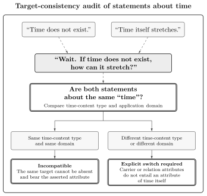
The 72 audited references contain both statements that time does not exist and statements that attribute stretching, slowing, flow, or deformation to time itself. Misner–Thorne–Wheeler 1973 contains both series of statements within the same reference, but their explicitly stated domains of application differ, so they are not determined to be directly contradictory under identical conditions. Heisenberg 1958 records the nonexistence of time before the universe and the temporal presupposition in the operation of stating it, while Feynman 1995 and Narlikar 2010 record statements that move from clock or signal relations to an attribute of time flow. These cases show that the target of an existence denial must be separated by type and domain of application from the target of a property attribution, not only within a single reference but also when the same word “time” is used in different theoretical domains.
The same determination applies when statements from multiple references are synthesized as part of the common explanatory vocabulary of physics. The object of determination is whether a physical synthesis that places time-nonexistence statements and time-property statements within the same explanatory system preserves the identity of their targets or changes to a different object or domain of application.
Proposition 8.78 (Safe reuse of representative theoretical results through generated time and failure classification).
Under the respective conditions of Propositions 8.26, 8.36, 8.42, 8.50, 8.58, and 8.72, time-dependent results in Newtonian and classical mechanics, time metrology, GPS, special relativity, general relativity, and quantum gravity are qualified for use within domains in which temporal content and its grounding structure are generated prior to use within laws.
When a generation-stage condition fails, the failure-position-token system of Definition 6.10 and the set of minimal failure positions of Theorem 6.168 determine the condition to be repaired first or the condition by which the domain of validity must be restricted. When repair succeeds, downstream results are regenerated or recomputed from the repaired inputs in accordance with the failure-generation dependence order of Definition 6.17. If the condition does not hold throughout the entire domain, the domain in which a result is used is restricted to the region in which the condition holds. The mathematical, predictive, measurement, and engineering results of each theory can thereby be reused safely within domains that satisfy physical-time qualification.
The strength of the connection to numerical accuracy differs across fields. In time metrology and GPS, repair of error sources belonging to calibration, frequency ratios, record-cell widths, window selection, clock corrections, propagation corrections, loop defects, and receiver-clock offsets connects directly to recomputation and accuracy evaluation of downstream results. In Newtonian and classical mechanics, special relativity, and general relativity, repair connects to recomputation and accuracy evaluation when an error source belonging to initial values, time representations, synchronization, clock-rate comparison, local or global time conditions, transport, approximation domains, or differential evaluation is included among the minimal failure positions. In quantum gravity, the principal consequence is determination of the time-generation conditions, failure positions, repair targets, and qualification of existing results for application; a subsequent accuracy evaluation is connected when a specific approximation or estimation error is localized at a failure position.
Problems that depended on a primitive-time premise thereby shift from mysteries or theoretical impasses formulated with unestablished temporal content to problems of identifying time-generation conditions, minimal failure positions, repair order, and domains of validity. Generated time and failure classification supply grounds for using the results of existing theories safely under their conditions of validity and, upon failure, for identifying repair targets from upstream to downstream.
Proof.
For each representative theory, the six local propositions give the domain of validity in which generated time representations may be used, each minimal failure position, repair or restriction of the domain of validity, regeneration or recomputation after repair, and conditional accuracy evaluation.
Definition 6.10 classifies a failed generation-stage condition by the corresponding failure-position token. Theorem 6.168 determines the failure positions minimal with respect to the failure-generation dependence order. By Definition 6.17, conditions and results downstream of a minimal failure position depend on upstream conditions. The condition belonging to the minimal failure position is therefore repaired, and downstream results are regenerated or recomputed in dependence order from the repaired inputs. If repair does not hold throughout the entire domain, the domain of validity of that condition determines the domain in which the result may be used.
Comparison of the connections between error sources and accuracy evaluation specified by the local propositions shows a direct connection to measurement and correction inputs in time metrology and GPS; in Newtonian and classical mechanics, special relativity, and general relativity, the connection holds when the relevant initial value, time representation, synchronization, transport, approximation, or differential evaluation is included at a failure position; in quantum gravity, it holds when a specific approximation or estimation error is localized at a failure position.
Thus, for existing results in all six fields, explicit time-generation dependence, determination of safe domains of application, first-failure diagnosis, repair order, restriction of domains of validity, safe reuse, and field-specific conditional accuracy evaluation are established. ∎
Proposition 8.79 (Qualification failure of primitive-time input and conditional failure of downstream computational results).
Let be temporal content used by a representative scheme, and let be a downstream result in whose derivation that temporal content participates either directly or through a temporal-content transfer sequence. The following two determinations hold.

The first is the determination of physical-time qualification. If is a primitive-time input, fails physical-time qualification, and depends on temporal content that fails physical-time qualification. This qualification failure remains even when mathematical consistency, predictive performance, and empirical agreement hold.
The second is the determination of downstream computational results. In a scale-indexed complete evaluation specification , consider temporal content , a downstream result , and a condition that governs either the generation or qualification for use of that temporal content, or the input value, comparison, representation, synchronization, transport, approximation, or differential evaluation of that result. Suppose that the primitive-time input backgrounds the grounding obligation for in the sense of Definition 7.120, that independent evidence establishes the actual failure of the same , and that downstream dependence holds from that failure position to the derivation stage of . Then loses qualification for use as a physical computational result within the evaluation domain concerned. If the failed condition can be repaired, downstream results are regenerated or recomputed from the repaired inputs. If the condition cannot be repaired throughout the entire domain, the domain in which the result is used is restricted to the region in which the condition holds. Whether the recomputed value agrees with or differs from the preceding value is determined by the recomputation after repair.

The establishment conditions of the first determination are the presence of a primitive-time input and its participation in result derivation. The establishment conditions of the second determination are the backgrounding of a grounding obligation by primitive-time input, independent evidence establishing the actual failure of the same condition, and downstream dependence from the failure position to result derivation. Evaluation success, failure of physical-time qualification, and loss of qualification for use of a downstream computational result can therefore hold jointly in the same case.
Proof.
By Theorem 7.11, the primitive-time input fails physical-time qualification. By Proposition 7.6 and Corollary 7.12, if participates in the derivation of either directly or through a temporal-content transfer sequence, depends on temporal content that fails physical-time qualification. By Proposition 7.13, mathematical consistency, predictive performance, and empirical agreement do not repair this qualification failure. The first determination follows.
Proposition 7.121 connects, within a single audit-causal sequence, the backgrounding of a grounding obligation by primitive-time input, independent evidence establishing the actual failure of the same condition, the reach of dependence to a downstream result, and regeneration or recomputation after repair. By Proposition 8.78, the six representative fields localize an actual failure of a generation condition or establishment condition at a minimal failure position and regenerate or recompute downstream results from repaired inputs in accordance with the failure-generation dependence order. By Definition 6.4, an evaluation specification requiring a failed condition does not belong to the corresponding domain of validity. By Definition 6.17 and Theorem 6.168, each minimal failure position and its downstream dependencies are determined; by Proposition 6.171, the structural burden imposed by that failure position is determined. If the derivation stage of belongs to this downstream dependence, loses qualification for use as a physical computational result within the evaluation domain concerned. If repair succeeds, the result is regenerated or recomputed from the repaired inputs; if repair does not succeed throughout the entire domain, the establishment domain determines the domain in which the result may be used. The second determination follows.
The first determination follows from primitive-time input and its participation in result derivation. The second follows from the identity of the condition whose grounding obligation is backgrounded by primitive-time input, the condition whose actual failure is established by independent evidence, and the condition from which downstream dependence begins. The two determinations have different establishment conditions, and mathematical consistency, predictive performance, and empirical agreement repair neither failure condition. ∎
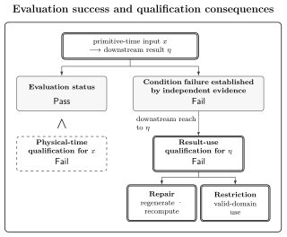
Formulas in the figure

8.11 Classical time as a generated representation
This section constructs the classical domain as a subclass satisfying the conditions of the theory of generated time. A time variable belonging to this domain is generated in the order in which exact comparison closure, dynamical-description operability, law-description operability, and differential-description operability are established. A continuous time representation in this domain holds at scales belonging to the scale domain of validity of the continuous approximation in Definition 6.86.
The representative-scheme single-object evaluation specification of Definition 8.5 connects each theory to a realized operational configuration, and Proposition 8.22 supplies the type boundary between theory-specific inputs and generated objects. When the specialization conditions defining a classical domain hold, Theorem 5.112, Theorem 5.113, and Definition 5.133 apply.
8.11.1 Minimal operational model of classical time
The minimal operational model of classical time has a single observer-side information-coupling position, a single object-specification index, a -derived clock-side source, a -derived record-side source, and a -derived object-state-side source. Each generated object is obtained from satisfaction of the corresponding stage conditions.
Definition 8.80 (Minimal operational model of classical time).
Let be an instance of the minimal classical scheme. Define the complete evaluation specification by


Define the realized operational configuration by


.
Let the single -derived source index of the minimal classical model be . For each , define the -derived clock-side source token by


Define the -derived record-side source token and the -derived object-state-side source token by
The -derived record-side source token satisfies

.
The -derived coupling satisfies
, and its component satisfies

.
Use

as the comparison-stage arrival maps, and, as the dynamical-description-stage -derived arrival map, use

.
Proposition 8.81 (-derived observer-time quotient in the minimal classical model).
For each , define
. Suppose further that the following three conditions hold.
First, for every
there exists such that .
Second, for every ,

.
Third, for every ,

.
Then
holds as an order isomorphism.
For any

, define the time value for each by

![\displaystyle:=\mathsf{TimeRep}^{\mathrm{dyn}}_{o_{\mathsf{Sch}_{\mathrm{ClMin%
}}}}\left[\rho_{o_{\mathsf{Sch}_{\mathrm{ClMin}}}}\right]\left(T_{k}\right)](math-S8/2f0cb49791a1041a9db9f4365c174857c821ee3607f5359086f2901c729341e4.svg)
.
Proof.
Exact comparison closure determines the -derived observer-time quotient and -derived natural projection of Definition 5.16. Dynamical-description operability and Theorem 5.112 give
.
By the assumed coverage and injectivity, the correspondence is a bijection from the natural numbers to the -derived observer-time quotient. By order agreement, this bijection preserves the natural-number order and the canonical strict observer-time order, and its inverse also preserves order. The -derived observer-time quotient is therefore order-isomorphic to the natural numbers.

Choose any real-valued temporal-order embedding. Definition 5.63 determines a law-admissible time representation, and a time value is determined as the image of each time-quotient class. Hence
is a real-valued order representation of the generated time-quotient classes. ∎
Corollary 8.82 (Continuous approximation of the minimal classical model).
For the complete evaluation specification of Definition 8.80, suppose that a refinement family under Definition 6.82 and a nine-component defect family under Definition 6.84 are given, and that monotone nondecreasing behavior under Definition 6.85 holds.
For every
,
holds. At this scale, all nine continuous-approximation conditions hold, including the continuous-extension, order-stability, and relation-stability conditions.
Proof.
By Definition 6.93, the maximal effective interval is the initial interval of the evaluation-specification-specific scale domain of validity of continuous approximation. Membership in the maximal effective interval therefore gives membership in the scale domain of validity of continuous approximation for the same full evaluation specification. By Theorem 6.95, the latter membership is equivalent to simultaneous satisfaction of the nine conditions for continuous approximation. ∎
Connection to physical-time qualification. The components of the full evaluation specification are the realized operational configuration, the family of comparison rules, the observer-side information-coupling position, and the object-specification index. Stable records, the object-state sequence, clock-side finite granularity, the conditions for continuous approximation, and law-bearing single-valuedness are used in the law-time-use audit as establishment evidence for the respective generation stages.

Proposition 7.199 gives the generation dependencies from the realized operational configuration through the representation, dynamical-description, law-description, and differential stages. In this model, when the grounding structure corresponding to time content precedes law operations and result derivation, Theorem 7.200 implies that a physical-law time variable using that time content satisfies physical-time qualification. Failure at any generation stage is localized as a failure-position token by Definition 6.10 and Definition 6.21. Failure-position tokens localize the establishment boundary of the classical approximation, and physical-time qualification is determined by the generation-precedence condition of Corollary 7.15.
Definition 8.83 (Classical regime).
Let the full evaluation specification be
and let the law-evaluation datum having this full evaluation specification as its first component be

and the differential-evaluation datum having this law-evaluation datum as its first component be

.
The data , , and form a classical regime if the following six conditions hold.


-
()
A single shared -derived clock domain is established, and the -derived clock-side data used at the comparison stage belong to the same shared family of comparison clocks.
-
()
The branching structure at the comparison stage is single-valued with respect to generation of the -derived canonical comparison quotient.
-
()
The -derived object-state-side identification map satisfies , and, for every admissible -derived object-state-side token ,
holds.
- ()
-
()
The all-dynamical-description-conditions bundle of Definition 5.67 holds. Its eight conjunctive components correspond, in the order given in that definition, to the dynamical-description conditions through .
- ()


![\mathsf{DynCondAll}[\mathsf{Ev}]](math-S8/01286a08ce5588f7ef364c72c92dab2f5c511be123d9fa162a7bb789df0551f2.svg)
![\mathsf{LawOperative}\left[\mathsf{LawEvalDat}_{o\mathchar 44\relax\allowbreak%
\zeta}\right]](math-S8/a8300650e150bde40958d84da465d87dddf926a14cc653677a687edda9fdf2c2.svg)
![\mathsf{DiffOperative}\left[\mathsf{DiffEvalDat}_{o\mathchar 44\relax%
\allowbreak\zeta}\right]](math-S8/a706b149295702a4e69f8602eb9ec2694516fbc7a4815d930caf20efb5a6d9f7.svg)
Remark 8.84 (Classical subclasses).
The classical regime of Definition 8.83 includes a local classical configuration with a single observer-side information-coupling position and a single object, and a classical many-body configuration in which multiple objects or multiple observer-side information-coupling positions share the same -derived clock domain. In the latter, the shared family of comparison clocks, the -derived object-state-side identification maps, and the direct-reception conditions hold for all objects and observer-side information-coupling positions.
Theorem 8.85 (Classical-time establishment theorem).
Suppose that , , and form a classical regime in the sense of Definition 8.83. Then is generated, and
.
For every

, the law-admissible time representation
is determined. For any
, denote its conventional representation in existing classical physics by
.
For the same real-valued temporal-order embedding, the observer-time law core

and the chart-compatible differential law
are determined.
Proof.
Conditions and of Definition 8.83 give

![\displaystyle\qquad\wedge\mathsf{DynCondAll}\left[\mathsf{Ev}\right]](math-S8/35e547eb73413f35367f846c6f7c1ef912324ccaa4968a51854d4a011de6c46d.svg)
. Definition 5.70 then gives . By Theorem 5.112, the -derived observer-time quotient is generated and the set of real-valued temporal-order embeddings is nonempty. Definition 5.63 then determines the law-admissible time representation and real-valued time for each real-valued temporal-order embedding.
![\mathsf{DynOperative}[\mathsf{Ev}]](math-S8/e4c2a3896ff904df5d9720d2c1ef947fee9ccee470bef2893e044d88c7baba97.svg)
Corollary 8.86 (Classical time is a generated representation).
The time variable in a classical regime is obtained by composing exact comparison closure, the all-dynamical-description-conditions bundle, the -derived observer-time quotient, the temporal-order coordinate projection, and a real-valued temporal-order embedding.

8.12 Validity domain and breakdown boundary of classical time
Definition 8.87 (Classical continuous-approximation regime).
Take a full evaluation specification , a law-evaluation datum having as its first component, and a differential-evaluation datum having that law-evaluation datum as its first component, together forming a classical regime in the sense of Definition 8.83.
Suppose that a refinement family of Definition 6.82, a nine-component family of defect quantities of Definition 6.84, and a nine-component family of tolerances of Definition 6.83 are given, and that monotone nondecrease in the sense of Definition 6.85 holds.
When the maximal effective interval of Definition 6.93 satisfies , call this maximal effective interval the classical continuous-approximation regime of the full evaluation specification .
For each in this interval, membership in the scale domain of validity of continuous approximation of Definition 6.86, , holds.
![\lambda\in\mathcal{I}^{\max}[\mathsf{Ev}]](math-S8/5a579c314fa00843cd6af82b026439edae9731610dd3a1c7fe60b97732509748.svg)

A classical continuous-approximation regime associated with a single observer-side information-coupling position and a single object is called a local classical continuous-approximation regime.
For multiple observer-side information-coupling positions or multiple objects, suppose that the full evaluation specification, law-evaluation datum, and differential-evaluation datum associated with each pair satisfy the six conditions of Definition 8.83, that each maximal effective interval is nonempty, and that of the same definition uses a -derived clock family common to all pairs. The family consisting of the respective maximal effective intervals is then called a shared classical continuous-approximation regime.
Theorem 8.88 (Classical continuous-approximation validity theorem).
Suppose that , , and form a classical regime and that the classical continuous-approximation regime of Definition 8.87 is determined. Then, for every , holds.
![\mathsf{CondAll}^{\mathrm{approx}}[\mathsf{Ev};\lambda]](math-S8/c2ee385147a310bb3e3a0428efc449ff3c1cb6664f9bc8f8729a59d7ec1e7b07.svg)
The objects generated from the full evaluation specification ,

jointly satisfy the continuous-extension, order-stability, and relation-stability conditions at this scale.
Proof.
Definition 8.87 gives . By Theorem 6.95, this membership is equivalent to simultaneous satisfaction of the nine conditions for continuous approximation. Conditions and of Definition 8.83 establish dynamical-description operability, and of the same definition establishes law-description operability and differential-description operability. The -derived observer-time quotient, trajectory relation, observable system, and law-admissible time representation are therefore generated from the assumed full evaluation specification, and the nine conditions for continuous approximation are evaluated at scale . ∎

Corollary 8.89 (Generation and domain-of-validity guarantee of the classical continuous approximation).
Continuous time, infinitesimal time intervals, smooth trajectory representations, and differential law descriptions in a classical continuous-approximation regime are generated from the full evaluation specification . The establishment of these representations is guaranteed at each scale in the maximal effective interval , and this interval gives the maximal initial domain of establishment of the classical continuous approximation.
![\mathcal{I}^{\max}[\mathsf{Ev}]](math-S8/5eee70e6b2b67dd80c9c73a4d80a718ade9bdfdbcd0b2d39bcc2c72748184ded.svg)
Proof.
By Theorem 8.88, the -derived observer-time quotient, trajectory relation, observable system, and law-admissible time representation are generated from the full evaluation specification. Continuous time, infinitesimal time intervals, smooth trajectory representations, and differential law descriptions are representations based on these generated objects.
Proposition 8.90 (Generation and domain-of-validity guarantee of a shared classical continuous-approximation regime).
For each object and observer-side information-coupling position using a shared -derived clock, suppose that a classical continuous-approximation regime of Definition 8.87 is defined. A classical continuous-approximation time representation is then generated from each full evaluation specification. Its establishment is guaranteed at every scale in the respective maximal effective interval, and the family consisting of these intervals gives the shared classical continuous-approximation regime.
Proof.
By Theorem 8.88, the -derived observer-time quotient, trajectory relation, observable system, and law-admissible time representation are generated from each full evaluation specification. Conditions – of Definition 8.83 establish a classical regime for each pair.
By Definition 6.93 and Theorem 6.95, the nine conditions for continuous approximation hold at every scale in each maximal effective interval. By Definition 8.87, the family of these intervals satisfying the shared -derived clock condition gives the shared classical continuous-approximation regime. Each time representation constituting the shared regime is therefore generated from its full evaluation specification, and its domain of establishment is guaranteed by the respective maximal effective interval. ∎
Theorem 8.91 (First invalidation boundary of classical time).
Let the full evaluation specification in a classical regime be , and suppose that a classical continuous-approximation regime of Definition 8.87 is defined. A classical continuous-approximation time representation is generated from , and its establishment is guaranteed at every scale in .
For any , if

, then
![\displaystyle\operatorname{Min}_{\preceq^{\mathsf{fail\mathchar 44\relax%
\allowbreak dep}}}\mathsf{FailedTok}\left[\mathsf{Ev};\lambda\right]](math-S8/57f97c4f707c85b9263ca337c8626e5a7e3ffca7b86d151f146e3578b54457e4.svg)
Every member of this set of invalidation tokens belongs to one of the six failure series of Definition 6.10.
Furthermore, under the assumptions of Theorem 6.163, if has a least element, the first approximation-invalidation scale exists, and

![\lambda_{\mathsf{bdry}}^{\mathrm{approx}}[\mathsf{Ev}]](math-S8/cd928b2349d240288c1b4597274bdf86ad3bbb0ecd5f6af8f4d31f4de8545e0f.svg)
![\displaystyle=\left\{\lambda\in\Lambda\ \middle|\ \lambda<\lambda_{\mathsf{%
bdry}}^{\mathrm{approx}}\left[\mathsf{Ev}\right]\right\}\mathchar 44\relax\allowbreak](math-S8/921834317c3612b713346e4ec7778ba8f4076ed8a7474a238f7bd3e6a422b2ba.svg)
The approximation-scale boundary datum is then
.
For the local classical configuration and shared classical configuration of Remark 8.84, let the respective full evaluation specifications and scales be and . If

, then the sets of minimal invalidation tokens of the two configurations are distinct.
Proof.
By Theorem 8.88 and Corollary 8.89, the classical continuous-approximation time representation is generated from the full evaluation specification and its establishment is guaranteed at every scale in the maximal effective interval.
Definition 6.21 determines the set of all tokens invalidated at the scale in question. By Proposition 6.26, this set coincides with the set of minimal elements under the failure-generation dependence order. By Definition 6.10, each invalidation token belongs to the comparison, representation, continuous-approximation, dynamical-description, law-description, or differential-consistency failure series.
By Theorem 6.163, when the complement of the scale domain of approximation establishment has a least element, the first approximation-invalidation scale exists, and the maximal effective interval is the set of all scales smaller than this scale. The same theorem gives a nonempty set of approximation-excess components at the first approximation-invalidation scale. By Theorem 6.164, the ordered pair consisting of this scale and the approximation-boundary signature is the unique member of the approximation-scale boundary datum.
Each invalidation-token set for the local classical configuration and the shared classical configuration coincides with the respective set of minimal invalidation tokens. Therefore, if the two invalidation-token sets are distinct, extensionality gives distinct sets of minimal invalidation tokens. ∎
For the following claims about the generation and validity of continuous-approximation representations, take a classical continuous-approximation regime as defined in Definition 8.87.
Connection to physical-time qualification. The generation sequence of Proposition 7.199 gives the generation order from nontemporal physical inputs through the representation, dynamical-description, law-description, and differential stages. In a classical regime, Corollary 8.89 generates a classical continuous-approximation time representation from the full evaluation specification.
By Corollary 7.15, the generation structure corresponding to the time content used by a physical-law time variable is established before law operations and result derivation. When this generation-precedence condition holds, Theorem 7.200 implies that the physical-law time variable using that time content satisfies physical-time qualification.
For a full evaluation specification and scale satisfying the assumptions of Theorem 8.91, Theorem 8.88 guarantees establishment of the generated classical continuous-approximation time representation at each scale in the respective maximal effective interval. By the same first-invalidation-boundary theorem, a nonempty invalidation-token set coincides with the set of minimal elements under the failure-generation dependence order, and each member belongs to one of the six failure series.
Thus, the physical-time qualification of time content used by classical physical laws and the scale-indexed establishment guarantee of a generated classical continuous-approximation time representation are supplied by the generation-precedence condition and the maximal effective interval, respectively, and invalidation is localized within the six failure series.
Corollary 8.92 (Establishment boundary of the classical-time continuous approximation).
The conventional representation of a classical time variable is determined from the generation sequence of Theorem 8.85. The classical continuous-approximation time representation is generated from the full evaluation specification by Corollary 8.89. For a full evaluation specification and scale satisfying the assumptions of Theorem 8.91, its establishment is guaranteed at every scale in the respective maximal effective interval of Definition 6.93, and a nonempty invalidation-token set coincides with the set of minimal elements under the failure-generation dependence order; each member belongs to one of the six failure series of Definition 6.10.
Proof.
By Theorem 8.85, the conventional representation of a classical time variable is determined by applying a law-admissible time representation to a member of the generated -derived observer-time quotient.
By Theorem 8.88 and Corollary 8.89, the classical continuous-approximation time representation is generated from the full evaluation specification and its establishment is guaranteed at every scale in the maximal effective interval. By Theorem 8.91, the invalidation-token set coincides with the set of minimal elements under the failure-generation dependence order, and each member belongs to one of the six failure series. ∎
Proposition 8.93 (Generation, establishment guarantee, and invalidation localization in a classical regime).
In a classical regime, Theorem 8.85 determines the conventional representation of a classical time variable from the generation sequence. By Corollary 8.89, the classical continuous-approximation time representation is generated from the full evaluation specification. For a full evaluation specification and scale satisfying the assumptions of Theorem 8.91, its establishment is guaranteed at every scale in the respective maximal effective interval, and a nonempty invalidation-token set coincides with the set of minimal elements under the failure-generation dependence order; each member belongs to one of the six failure series.
Proof.
The generation sequence for the conventional representation of a classical time variable follows from Theorem 8.85. Generation of the classical continuous-approximation time representation and its establishment guarantee through the maximal effective interval follow from Corollary 8.89. Minimality of the invalidation-token set and membership in the six failure series follow from Theorem 8.91. ∎
Corollary 8.94 (Generation, establishment guarantee, and invalidation localization of law time in classical physics).
The conventional representation of a time variable in a classical regime is determined, by Theorem 8.85, by applying a law-admissible time representation to a member of the generated -derived observer-time quotient. When the generation-precedence condition of Corollary 7.15 holds, Theorem 7.200 implies that the physical-law time variable using that time content satisfies physical-time qualification.
The continuous time, infinitesimal time intervals, smooth trajectory representations, and differential law descriptions used in classical physics are generated from the full evaluation specification by Corollary 8.89. For a full evaluation specification and scale satisfying the assumptions of Theorem 8.91, their establishment is guaranteed at every scale in the respective maximal effective interval. By Corollary 8.92, a nonempty invalidation-token set coincides with the set of minimal elements under the failure-generation dependence order, and each member belongs to one of the six failure series.
Proof.
Generation of the conventional representation of a classical time variable follows from Theorem 8.85. Physical-time qualification of a physical-law time variable follows from Corollary 7.15 and Theorem 7.200. Generation and scale-indexed establishment guarantee of the classical continuous-approximation time representation follow from Corollary 8.89. Minimality of the invalidation-token set and membership in the six failure series follow from Corollary 8.92. ∎
8.13 Difference from existing theories
The structures addressed by clock synchronization, relativistic time-stretching representations, proper time in GR, relational time, quantum-theoretic time reconstruction, time metrology, and operationalism are mapped to representative schemes and to the stages of the generation pathway. Differences between the partial objects borne by these seven subjects and the generation hierarchy are expressed as hierarchical differences along the generation pathway through physical-time generation, scale-indexed validity domains, and six-series failure localization.
Clock synchronization, relativistic time-stretching representations, proper time in GR, relational time, quantum-theoretic time reconstruction, time metrology, and operationalism respectively make objects of temporal measurement, synchronization, geometrization, relationalization, standardization, and connection to observation. Differences in clock readings, clock rates, proper times, and frequencies on physical carriers are relativistic results belonging to their respective objects and relations. Statements in Bailey et al. 1977 and Pössel 2021 directly describe these physical-carrier relations[7, 58]. An interpretation path that places ungenerated time prior to the comparative difference and, in direct dependence on that placement, reattributes the comparative difference on physical carriers to a change in an attribute of that time constitutes a two-stage misrecognition in the sense of Proposition 8.23. The difference from the seven subjects lies in mapping these partial objects onto a single generation pathway from local displays, records, object-state differences, and observer-side information-coupling positions through comparison closure, the canonical comparison quotient, the representation stage, the dynamical-description stage, a law-admissible time representation, a scale-indexed validity domain, and six-series failure localization.
Clock synchronization, proper time in GR, relational time, observables, time metrology, and operational measurement have developed as distinct subjects[23, 24, 53, 62, 14, 12]. The generation pathway in this chapter maps the structures they address to the respective stages of time reference, the observer-time quotient, a law-admissible time representation, a scale-indexed validity domain, and six-series failure localization.
| Subject | Partial object | Correspondence on the generation pathway | Hierarchical difference |
|---|---|---|---|
| Clock synchronization |
Interclock comparison
Signal exchange Convention of simultaneity |
Comparison stage
Part of the representation stage |
•Connects to dynamical description
•Connects to the observer-time law core
•Connects to a scale-indexed validity domain and
six-series failure localization |
|
Relativistic time-
stretching representation |
Clock differences
Coordinate-time differences Reattribution of proper-time differences to an attribute of time |
Worked SR and GR reductions
Comparative differences among generated time representations |
•Preserves direct descriptions of
physical-carrier relations •Evaluates time-stretching representations by interpretation path |
|
Proper time
in GR |
Local-time display
along a worldline |
Input carrier or locally
generated representation in the worked GR reduction |
•Separates local proper-time displays •Separates global law-admissible time representations |
| Relational time |
Relations among variables
Ordering by an internal variable |
Representation stage
Part of the dynamical-description stage |
•Stages records, comparison, and observer coupling
•Stages the path from quotient descent
through law representation |
|
Quantum-theoretic
time reconstruction |
Temporal description
without external time |
Input-audit target in
the worked QG reduction |
•Requires generation conditions for the
observer-time law core •Requires generation conditions for a law-admissible time representation |
| Time metrology |
Standard frequency
Time scale Unit convention |
Worked reduction
for time metrology |
•Generates frequency representations from count differences
•Uses generated coordinate differences
for quantitative affine differences |
| Operationalism |
Operational measurement
Procedures Observables |
Materials for input formation,
the comparison stage, and the dynamical-description stage |
•Connects to six-series failure localization
•Connects to scale-indexed validity domains
•Connects to the law-representation stage and
differential-law-form stage |
Proposition 8.95 (The difference from the seven subjects is hierarchical).
The structures addressed by clock synchronization, relativistic time-stretching representations, proper time in GR, relational time, quantum-theoretic time reconstruction, time metrology, and operationalism correspond to the comparison, representation, dynamical-description, law-representation, or differential-law-form stage of the generation pathway, to scale-indexed validity-domain determination, or to six-series failure localization. The difference from the seven subjects is a hierarchical difference: their structures are mapped to stages of a single generation pathway and carried through physical-time generation, scale-indexed validity domains, and six-series failure localization.
Proof.
Each row of Table 19 shows a structure addressed by one of the seven subjects and its correspondence on the generation pathway. Clock synchronization addresses interclock comparison and signal exchange and therefore corresponds to the comparison and representation stages. Statements in Bailey et al. 1977 and Pössel 2021 directly describe physical-carrier relations in which a moving clock or light clock bears the predicate of running faster or slower. Consider an interpretation path that places ungenerated time prior to a clock difference, coordinate-time difference, or proper-time difference. Suppose that reattribution of the subsequently obtained comparative difference to a change in an attribute of that time directly depends on that placement. Theorem 7.190 establishes that primitive-time roots remain in all 72 audited references. Every interpretation path of a recorded statement that contains placement before generation and attribute reattribution in direct dependence constitutes a two-stage misrecognition in the sense of Proposition 8.23. Proper time in GR is a local display along a worldline and corresponds to an input carrier or locally generated representation in Section 8.6. Relational time addresses relations among variables and therefore corresponds to the representation or dynamical-description stage. Quantum-theoretic time reconstruction addresses temporal description in formalisms without external time and is therefore an input-audit target in Section 8.8. Time metrology addresses counting, standard frequencies, time scales, and unit conventions and, in Section 8.3, generates frequency and period representations from count differences and generated coordinate differences. Operationalism addresses operational measurement and observables and therefore supplies materials for input formation and the comparison and dynamical-description stages.
The structures addressed by these seven subjects correspond to stages of the generation pathway. This correspondence supplies a generation hierarchy from local reception, records, object-state differences, and observer-side information-coupling positions through the canonical comparison quotient, representation coordinates, the observer-time law core, a law-admissible time representation, a scale-indexed validity domain, and six-series failure localization. The difference is therefore one of generation hierarchy and scope. ∎
The structures addressed by clock synchronization, relativistic time-stretching representations, proper time in GR, relational time, quantum-theoretic time reconstruction, time metrology, and operationalism correspond to stages on the generation pathway through comparison closure, the canonical comparison quotient, time representation, dynamical description, a law-admissible time representation, a scale-indexed validity domain, and six-series failure localization.
Corollary 8.96 (Reconstruction of the seven subjects within the generation pathway).
The structures addressed by clock synchronization, relativistic time-stretching representations, proper time in GR, relational time, quantum-theoretic time reconstruction, time metrology, and operationalism correspond to partial stages of the generation pathway or to inputs of representative schemes. Through this correspondence, each structure becomes a component of the generation pathway through physical-time generation, scale-indexed validity domains, and six-series failure localization.
Proof.
By Proposition 8.95, the structures addressed by the seven subjects correspond to partial stages of the generation pathway or to inputs of representative schemes. Each structure thereby becomes a component of the generation pathway through physical-time generation, scale-indexed validity domains, and six-series failure localization. ∎
8.14 Theoretical structures retained as theory-specific inputs
In theories belonging to the comparison-realization class of Definition 8.14, equations of motion, interaction terms, field equations, quantization procedures, correction rules, and engineering implementations are retained as theory-specific inputs to the realized operational configuration of Theorem 8.16. From these theory-specific inputs, the generation pathway generates the establishment conditions for temporal comparison, time representation, dynamical description, a law-admissible time representation, a scale-indexed validity domain, and six-series failure localization.
The following table shows the correspondence between theoretical content retained as theory-specific input and objects constructed or determined on the generation pathway.
| Retained object | Input position | Corresponding object on the generation pathway |
|---|---|---|
| Equation of motion | Theory-specific input | Law-admissible time representation |
| Field equation | ||
| Interaction term | Canonical family of observables, trajectory relation, observer-time law core | |
| Quantization procedure | QG-specific input | Determination of observer-time-law-core generation |
| Correction rule |
Comparison-rule and
record-side input |
Comparison quotient, representation coordinates, navigation-time representation |
| Engineering implementation | Realization material |
Canonical quotient, representation coordinates,
scale-indexed validity domain, six-series failure localization |
Equations of motion supply motion content borne on law-admissible time representations. Interaction terms supply motion content evaluated on canonical families of observables, trajectory relations, and observer-time law cores. Field equations supply field-law content and become generation inputs for the time representations bearing that content. Quantization procedures are theory-specific QG inputs used to determine whether an observer-time law core can be generated without taking external time as a primitive premise. Correction rules are generation inputs for comparison quotients, representation coordinates, and navigation-time representations. Engineering implementations supply realization materials for determining canonical quotients, representation coordinates, scale-indexed validity domains, and six-series failure localization.
Proposition 8.97 (Separation of theory-specific input from generated objects).
In representative schemes belonging to the comparison-realization class of Definition 8.14, equations of motion, interaction terms, field equations, quantization procedures, correction rules, and engineering implementations are retained as theory-specific inputs to the corresponding realized operational configuration. The objects constructed or determined on the generation pathway are comparison closure, the canonical comparison quotient, representation coordinates, the observer-time law core, a law-admissible time representation, a scale-indexed validity domain, and six-series failure localization. Existing theories’ motion content is therefore retained as theory-specific input, while the establishment conditions and validity domain of the time variable used for that motion content are generated and its invalidation position is classified within the six series.
Proof.
Conditions CR1 through CR7 of Definition 8.14 supply the carriers, comparison rules, record-side materials, object-state-side materials, and dynamical-description-side materials of representative theories as theory-specific inputs. By Theorem 8.16, these inputs determine the corresponding realized operational configuration.
By Corollary 8.18, determinations of operability and of the comparison, representation, continuous-approximation, dynamical-description, law-representation, and differential-law-form stages take this realized operational configuration as a domain-side input. Theorems 4.90 and 4.147 construct the objects from comparison closure through representation coordinates; Definitions 5.108 and 5.63 determine the observer-time law core and law-admissible time representation. Definition 6.4 determines the validity domain, and Definition 6.10 classifies invalidation positions within the six series.
Existing theoretical content is therefore retained as theory-specific input to the realized operational configuration, while the generation pathway constructs or determines the time variable’s establishment conditions, validity domain, and invalidation positions. ∎
Through the separation of theory-specific input from generated objects, equations of motion, interaction terms, field equations, quantization procedures, correction rules, and engineering implementations are retained as theory-specific inputs. While retaining this theoretical content as theory-specific input, the generation pathway constructs temporal comparison, time representation, dynamical description, a law-admissible time representation, a scale-indexed validity domain, and six-series failure localization.
Corollary 8.98 (Generation of time-variable establishment conditions while retaining existing theoretical content).
For the existing theoretical content in Proposition 8.97, the generation pathway generates establishment conditions for using a time variable within laws, a scale-indexed validity domain, and six-series failure localization. Existing theoretical content holds as law content under a generated law-admissible time representation and scale-indexed validity domain; upon invalidation, its invalidation position within the six series and its structural burden are determined.
Proof.
By Proposition 8.97, theoretical content is retained as theory-specific input to the realized operational configuration, while the time variable’s establishment conditions, validity domain, and invalidation positions are constructed or determined on the generation pathway. Definition 6.4 determines the scale-indexed validity domain, while Definition 6.10 and Proposition 6.171 determine the invalidation position and structural burden. The claim follows. ∎
Definition 8.99 (Result-preserving re-grounding).
The construction that retains existing theoretical content as theory-specific input to the generation and audit construction of LCTR; retains existing results within their result-specific evidence-effect domains; invalidates the physical-time qualification of primitive-time premises; generates the required time content and grounding structure from nontemporal physical inputs; audits their validity domains and invalidation positions; performs repair, regeneration, recomputation, or restriction of the domain of use upon invalidation; and reuses existing results within the intersection of the evidence-effect domain and the validity domain is called result-preserving re-grounding.
Figure 25 shows the retention pathway for existing theoretical content, the generation-and-audit pathway for temporal qualification, and the post-invalidation regeneration pathway.
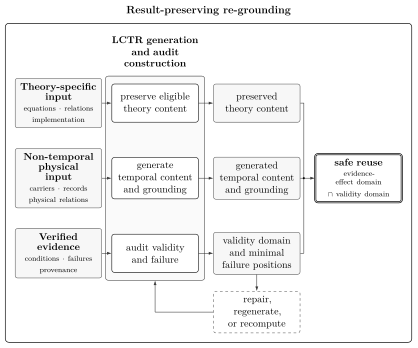
Formulas in the figure

8.15 The typed generation-and-audit architecture of LCTR
LCTR integrates type separation, input–operation–output boundaries, staged generation, dependency order, qualification for use, audit states, invalidation localization, evidence provenance, and the scope of regeneration as conditions for the establishment of a physical theory. In LCTR, these principles used by the design methodology of computer science (CS) are mathematically defined as types, maps, generation closures, partial orders, validity domains, state sets, and evidence correspondences.
The CS-style hierarchy of this construction lies in reusing an encapsulated typed output as a single input item at the next level without re-expanding its internal construction, and then closing that item together with added components or conditions into one higher-level construction. In Chapters 2–3, role instances are encapsulated into a role-instance bundle family, raw operational input, and a realized operational configuration. In Chapter 4, the representation-stage generated-structure bundles accumulate recursively by head-preserving extension. In Chapter 5, qualification for dynamical, law, and differential description accumulates while retaining upstream qualification. In Chapter 6, the audit core and provenance certificate are encapsulated into operational audit data, which is then encapsulated with the state and diagnostic reports into the five-valued audit-report object.
Definition 8.100 (LCTR typed generation-and-audit architecture).
Define the LCTR typed generation-and-audit architecture as the structure consisting of the following six structures and their dependency edges.
- 1.
- 2.
- 3.
- 4.
- 5.
- 6.
The output of each structure becomes the input of a subsequent structure as specified by the dependency edges.
Proposition 8.101 (Integrity of the typed generation-and-audit architecture).
Under Definition 8.100, the following hold.
-
1.
For each generated object, its input type, formation conditions, output type, and conditions for subsequent use are determined.
-
2.
The physical qualification for use of time representations, dynamical descriptions, law time, continuous approximations, and differential forms is determined from upstream conditions and scale conditions.
-
3.
Each audit state is determined as pass, fail, blocked, unformed, or indeterminate; upon invalidation, the minimal invalidation positions are determined.
-
4.
The upward dependency set of an invalidation position determines the affected subsequent objects, structural burden, and scope of regeneration.
-
5.
Theoretical conditions and engineering measurands retain distinct types, and verified evidence determines the state of the corresponding invalidation-position token.
-
6.
Formal evidence and statement evidence from original sources retain reference-specific provenance, and the canonical finite audit realization determines the common audit determination.
LCTR therefore gives the input formation, object generation, qualification for use within laws, scale-indexed domains of establishment, invalidation states, evidence provenance, repair targets, and scope of downstream regeneration of a physical theory as a single typed dependency structure.
Proof.
Item 1 follows from the type separation of roles, role instances, and physical-carrier realizations and from the input and output specifications of typed generation closure. Item 2 follows from the generation order of comparison, time representation, dynamical description, law description, and differential form and from the definitions of law-admissible time representations and scale-indexed domains of establishment.
Item 3 follows from the five-valued audit states and the first-breakdown theorem. Item 4 follows from the invalidation-dependency order, invalidation-position tokens, and structural-burden completeness. Item 5 follows from engineering evaluation specifications, engineering audit-parameter vectors, and formal-condition evidence localization. Item 6 follows from typed finite audit inputs, canonical finite audit realizations, and the all-reference primitive-time-root result.
The dependencies among types, generation, qualification for use, invalidation, evidence, and regeneration constitute the theoretical structure of CS design methodology in LCTR. The equations of physical theory, the types, dependencies, states, and change effects specified by CS design discipline, and engineering evidence jointly constitute this typed generation-and-audit architecture. ∎
8.16 Worked classical many-body audit and background conditions of classical world representation
Proposition 8.102 (Backgrounding the establishment conditions for time reference in a classical world representation).
A classical world representation explicitly includes point masses, centers of mass, shapes, moments of inertia, and rigid-body constraints as variables or relations in law expressions. At the same time, it does not describe the role instances, physical-carrier realizations, record-arrival conditions, observer-side information coupling, and joint law domain that establish time reference as variables, relations, generation conditions, or invalidation conditions in those expressions; instead, it uses them as presuppositions for describing multiple objects by the same time variable. This treatment is called the backgrounding of establishment conditions for time reference.
Proof.
Definitions 2.10, 3.2, 6.190, 6.193, and 5.139 supply the role types, carriers, records, information coupling, and relational construction required for multi-object relations to hold physically.
A classical world representation does not include within its law description either a path by which these structures are generated from nontemporal physical inputs or conditions under which use of the law ceases when those structures are invalidated. Nevertheless, it uses these structures as presuppositions for describing multiple objects by the same time variable. A classical world representation therefore supplies the establishment conditions for time reference in advance as background conditions outside the expressions. ∎
Proposition 8.103 (Non-completion of background conditions by the success of classical physics and the scale-indexed validity domain).
The mathematical consistency, predictive performance, and empirical fit of classical physics do not complete the physical generation of backgrounded establishment conditions for time reference. The domain in which multi-object relations hold physically under the same time variable belongs to the scale-indexed validity domain in which the physical-carrier realization of role instances, -derived record field of view, record stability, observer-side information coupling, -communication, multi-object relations, and scale-indexed defect quantities satisfy their respective establishment conditions.
Proof.
By Proposition 7.13, mathematical consistency, predictive performance, and empirical fit add no generation dependence to time inputs.
Definition 6.194 supplies -derived record field of view, record invasiveness, the -communication graph, multi-object-relation defect, and common-law-domain defect as engineering audit inputs. Definition 6.161 supplies the scale domain of approximation establishment in which approximation defects do not exceed their tolerances. Definitions 6.191 and 6.205 supply the two-object recording configurations and their structural burdens relative to engineering evidence.
Each engineering audit result is connected to the establishment determination of the corresponding theoretical condition through verified engineering evidence for formal conditions. Evaluation specifications and scales for which all six series are established belong to the full evaluation-validity domain and give the physical domain of multi-object relations under the same time variable. The success of classical physics therefore supplies no ground for completing the physical generation of the establishment conditions for time reference while leaving them outside the expressions; the domain of that success is fixed as a scale-indexed validity domain satisfying the respective establishment conditions. ∎
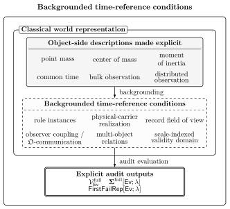
Formulas in the figure
| Classical input | Backgrounded establishment obligation | LCTR-generated object |
|---|---|---|
| Point-mass approximation | Object identity and interobject relations | Role-instance family, multi-object relations |
| Center of mass | Composite-object state | Physical-carrier realization, object-state quotient |
| Moment of inertia | Comparability of observables | Canonical family of observables, quantitative affine realization |
| Common time | comparison, recording, and coupling | Comparison closure, order-coordinate structure, observer-side coupling |
| Bulk observation | -record field of view, cell width, and stability | Bulk-recording condition, recording structural burden |
| Distributed observation | -communication and comparison-loop consistency | Following-recording condition, recording structural burden |

Definition 8.104 (Classical multi-object audit example).
Let two distinct object-specification indices and the finite family of object-specification indices be

, and let the relation index be .
For each and , let the full evaluation specification be

, and assume
. For the full evaluation specifications of following-recording type, assume
.
The two recording configurations satisfy
![\mathsf{BulkRecord}_{\mathfrak{D}}\left[\left(\mathsf{Ev}^{(0)}_{k}\right)_{k=%
1}^{2}\right]=\top](math-S8/c8da355f72d02c5d5c6612622869f0699599f5e169dda5313cdaf57c1325fa98.svg)
and
.
For each configuration , suppose that the multi-object relation input data of Definition 5.139 are supplied and satisfy the representative-invariance condition of Definition 5.142. Denote the corresponding quotient-level datum by . For the same object-specification set and relation-type index , audit each quotient-level relation under its corresponding recording configuration. Call these two configurations the classical multi-object audit example.


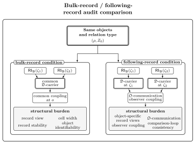
Formulas in the figure


| Recording configuration | -carrier condition | Additional audit inputs |
|---|---|---|
| Bulk-recording condition | Single -carrier | Record field of view, cell width, record stability, object identifiability |
| Following-recording condition | Distinct -carriers | Object-specific record fields of view, -communication, observer-side coupling, comparison-loop consistency |
Proposition 8.105 (Classical multi-object audit of the bulk-recording condition).
The invalidation-position set for the bulk-recording condition in the classical multi-object audit example is , and its structural burden relative to engineering evidence is .


Proof.
By Definition 6.191, the bulk-recording condition requires the two -derived role instances to be realized by the same physical carrier. For the engineering evidence of the bulk-recording condition, Definition 6.205 determines the invalidation-position set in the proposition from the respective input tags for record field of view, recording configuration, record invasiveness, -count increment, -record stability, -record cell width, and -identifiability, and gives the structural burden relative to engineering evidence in the proposition as the union of their dependency-upward structural images. ∎
Proposition 8.106 (Classical multi-object audit of the following-recording condition).
The invalidation-position set for the following-recording condition in the classical multi-object audit example is , and its structural burden relative to engineering evidence is .

Proof.
By Definition 6.191, the following-recording condition requires the two -derived role instances to be realized by distinct physical carriers and each object-specific record field of view to be contained in the domain of the corresponding record-code relation. For the engineering evidence of the following-recording condition, Definition 6.205 adds the -communication and observer-side-coupling input tags to the input tags of the bulk-recording condition to determine the invalidation-position set in the proposition, and gives the structural burden relative to engineering evidence in the proposition as the union of their dependency-upward structural images. ∎
Proposition 8.107 (Difference in structural burden between the bulk-recording and following-recording conditions).
The two structural burdens relative to engineering evidence in the classical multi-object audit example are subsets of , and


If both set differences
and
are nonempty, the two structural burdens are incomparable under inclusion.
Proof.
Connection to the audit of law-time use. The two recording configurations in the classical multi-object audit example supply full evaluation specifications to the physical-time-qualification audit in Section 7. For the full evaluation specifications corresponding to the two recording configurations, when the generation dependencies and operability conditions of Proposition 7.199 hold prior to law operations and result derivation, Theorem 7.200 implies that the physical-law time variable bearing the time content used there satisfies physical-time qualification.
If time content is entered into a law operation or result derivation before the generation structure required for its use has been established, that time content is a primitive-time input under Definition 7.10. By Theorem 7.203, the physical-law time variable bearing that time content does not satisfy physical-time qualification. Invalidation of engineering evidence in each recording configuration is localized as the recording-configuration-specific invalidation-position set of Definition 6.205, the six-series invalidation signature of Definition 6.159, and the structural-burden difference of Proposition 8.107.
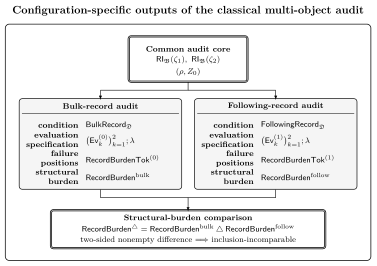
Formulas in the figure


| Audit component | Bulk-recording condition | Following-recording condition |
|---|---|---|
| Role instances | ||
| Full evaluation specifications | ||
| -carrier | Common physical carrier | Distinct physical carriers |
| Record evidence | Shared record field of view and shared code relation | Object-specific record fields of view and object-specific code relations |
| -side evidence | Common information-coupling position | -communication datum and observer-side coupling |
| Multi-object relation | ||
| Failure output | Bulk-recording structural burden | Following-recording structural burden |


8.17 Final synthesis
The final synthesis theorem integrates, into a single dependence order, generation from the comparison stage through the differential-description stage, the scale-indexed validity domain of the continuous-approximation stage, invalidation localization in the six failure series, five-valued audit reports, the cross-source results of the 72 audited sources, worked reductions of representative theories, the classical multi-object audit, differences from existing theories, result-preserving re-grounding, and the typed generation-and-audit architecture. The following table maps each synthesis item to its direct grounds and outputs.
| Synthesis item | Direct grounds | Output |
|---|---|---|
|
Synthesis (1):
Comparison closure |
Theorem 4.90 | , , -derived canonical comparison quotient |
|
Synthesis (2):
Representation generation |
Theorems 4.147, 4.177, 4.179, and 4.187 | , exact operational time structure, local and global order-coordinate structures, comparison-order atlas |
|
Synthesis (3):
Dynamical-description generation |
Theorems 5.112 and 5.138 | , observer-time quotient, trajectory relation, graph trajectory, canonical family of observables, law-admissible time representation |
|
Synthesis (4):
Law and differential generation |
Theorems 5.113, 5.135, and 7.203 | Observer-time law core, generated representationality of law-evaluation time, chart-compatible differential law, differential covariance under changes of time representation |
|
Synthesis (5):
Six failure series |
Definition 6.10 and Theorem 6.168 | Six series of comparison, representation, dynamical description, continuous approximation, law description, and differentiation; invalidation positions; six-series invalidation signature |
|
Synthesis (6):
Scale boundary and audit |
Propositions 6.162 and 6.154, Theorems 6.163, 6.164, and 6.183, and Proposition 6.199 | Full evaluation-validity domain, dual qualification of continuous approximation and differential form, maximal effective interval for approximation, approximation-invalidation scale, approximation-boundary signature, five-valued audit-report object, structural-burden audit component, typed separation of failure causes |
|
Synthesis (7):
72 audited sources and representative theories |
Theorem 7.190, Propositions 7.191, 8.73, 8.74, Corollary 8.75, Propositions 8.59 and 8.77, Theorem 8.16, and the respective worked reductions | Universal persistence of primitive-time roots, counts of time-generation obligations, target consistency between time-nonexistence statements and time-attribute statements, generation conditions, validity domains, and invalidation positions of representative theories |
|
Synthesis (8):
Theoretical difference and result-preserving re-grounding |
Propositions 8.95 and 8.97, Definition 8.99, Propositions 8.102, 7.121, 8.78, and 8.79, Definitions 3.2 and 6.188, and Proposition 6.204 | Result-preserving re-grounding, objects retained from existing theories, generation obligations for time-reference conditions, scale-indexed domain of establishment of multi-object relations under a single time variable, causal connection from the backgrounding of grounding obligations through actual invalidation and downstream reach, separation between the invalidation of physical-time qualification and conditional invalidation of use of downstream computational results, scope of regeneration and recomputation after repair, range of safe reuse under generation conditions, typed applicability conditions for engineering implementations |
|
Synthesis (9):
Typed generation and audit structure |
Definition 8.100 and Proposition 8.101 | Typed dependence structure of physical theory, use qualification, audit states, invalidation localization, evidence provenance, range of effects, scope of repair and regeneration |
|
Synthesis (10):
Final consequence |
Synthesis (1)–Synthesis (9) | Constructive definition of physical time, generation of temporal identity and before–after relations, conditional representation by linear order and real-valued time, unique re-expression of time-coordinate freedom, establishment obligations for multi-object relations under a single time variable, separation of the obligations for temporal order and causal order, generation and maximal validity domain of classical continuous time, formal obligations for statements of time creation, emergence, and nonexistence, change of the problem of time in quantum gravity into a problem of law-time use qualification, changes in field-specific temporal obligations, qualification invalidation of primitive-time premises, six-series invalidation localization, audit report |
The following final synthesis theorem therefore gives the generation, establishment, invalidation, and audit of time variables in the same dependence order from the direct grounds in Table 24.
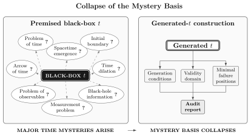
Formulas in the figure
Definition 8.108 (Time-problem connection domain).
A time-problem connection domain is a family of problem descriptions that appear as independent mysteries because an ungenerated time variable, temporal order, or time representation is entered in advance into law operations or result derivations, and that are connected to the generation conditions, scale-indexed validity domain, six failure series, or audit report of the corresponding time content and grounding structure.
The difficulty of defining time in Definition 1.1 is made concrete by Theorem 7.203 as the requirement for the physical grounds of physical-law time variables. When comparison closure, the -derived canonical comparison quotient, the -derived observer-time quotient, the -derived trajectory relation, the observer-time law core, and a law-admissible time representation hold along the same generation dependence, a time variable is established as a generated law-admissible time representation.
Comparison closure and the canonical comparison quotient give the conditions under which two physical materials may be identified as belonging to the same time content. The canonical partial order preserves before–after relations and incomparability, and the quotient by incomparability gives a strict linear order when its transitivity condition holds. Real-valued time is obtained as a representation when an order embedding from that ordered quotient into the real numbers exists. Accordingly, LCTR specifies the real line and linear order as downstream representations of a time structure whose generation conditions have been satisfied. Freedom in the choice of an admissible order representation is fixed as re-expression through a unique strict order isomorphism between the representation images. This is LCTR’s answer to the problem that Feynman presented as the difficulty of giving time a satisfactory definition[27]. LCTR changes the definition of physical time from the specification of lexical meaning to the generation of conditions of establishment and generates, from nontemporal physical inputs, the conditions for temporal identity, before–after relations, comparability, linearization, real-valued representation, use within laws, and invalidation.
For a claim that uses continuous approximation, its range of establishment is determined as a scale-indexed validity domain, and invalidation is localized by the six failure series, approximation-boundary signatures, and five-valued audit reports.
In the following figure, the horizontal axis presents the structural reach borne by a use of time in the order local, multiple records, multiple observers, and gluing/boundary; the vertical axis presents the stages at which grounding obligations arise in the order comparison, representation, continuous approximation, dynamical description, law description, and differentiation. A large filled circle denotes a principal localization burden; a small filled circle, an additional direct burden; a diamond, a scale condition; an open circle, a derived or downstream application; a gray horizontal line, a structural range; a thin line, the connection among multiple burdens borne by the same object; and a square, engineering evidence. Positional differences within a band are used for visual discrimination. The engineering-evidence band at the bottom represents verified engineering inputs connected to the six theoretical stages.
The abbreviations correspond to the following constructions or audits in the text. C.Min. denotes the minimal operational model of classical time (8.11.1); T.Met., the worked reduction of time metrology (8.3); SR, the worked reduction of special relativity (8.5); C.Dom., the validity domain and failure boundary of classical time (8.12); GPS, the worked reduction of GPS (8.4); GR, the worked reduction of general relativity (8.6); and QG, quantum-gravitational reconstruction (8.8). I.Bd., connected to QG, denotes the downstream application to a cosmological initial boundary (8.8.3); B.H., that to the extreme-gravity domain including the black-hole information problem (8.8.4). G/F and C.Multi. correspond to bulk recording and following recording and to the classical multi-object audit example (8.16).
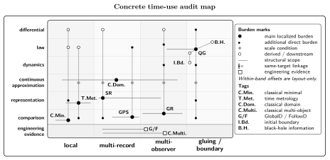
Theorem 8.109 (Final synthesis theorem).
For a realized operational configuration , a typed family of comparison rules , an observer-side information-coupling position , an object-specification index , a complete evaluation specification


and an approximation scale , the following hold.
Synthesis (1): comparison closure. Operability at the comparison stage is given by
![\displaystyle\mathsf{L}_{\leq 7}\left[\mathsf{Ev}^{\mathrm{cmp}}\right]](math-S8/f81069d49601d94af2bd374a20572ad957894025c10aba6177b78cb30d608462.svg)
![\displaystyle\wedge\mathsf{G}\left[\mathsf{Ev}^{\mathrm{cmp}}\right]](math-S8/72bf7e1658733c75f43f3eccb1be004cf22331a734b4cba278d43cb9b9a79d25.svg)
Under this condition, the extended comparison-arrival equivalence relation, the comparison-quotient sets, the canonical projections, the quotient-level -derived relation, and the -derived canonical comparison quotient are determined uniquely in dependence order.
Synthesis (2): representation generation. Exact operability is given by

Under this condition, the canonical partial orders, exact operational time structure, local and global order-coordinate quotients, local and global exact linear orders, canonical order-coordinate projections, local-to-global order-coordinate embeddings, and comparison-order atlas are generated in dependence order. Once a selected representation range and an order embedding of that range are specified, the -derived representation coordinates factor through the canonical global order-coordinate projection.
Synthesis (3): dynamical-description generation. Dynamical-description operability is given by
![\displaystyle\mathsf{DynOperative}\left[\mathsf{Ev}\right]](math-S8/5d51127eb745216f5aaade79314397a50df562dc9e99ee3971c3b16ea7941915.svg)
Under this condition, the -derived observer-time quotient, the -derived object-state quotient, the -derived trajectory relation, a graph trajectory, a canonical family of observables, the observer-time order-coordinate quotient, a real-valued time representation, a scalar-time trajectory, and a family of real-valued observable curves are generated.
Synthesis (4): law and differential generation and the physical establishment of time variables. Law-description operability and differential-stage operability are given by
![\displaystyle\mathsf{LawOperative}\left[\mathsf{LawEvalDat}_{o\mathchar 44%
\relax\allowbreak\zeta}\right]](math-S8/cbbb95edad4e03b9b90882a69c2af79bf98f039d7cf00a5e617a2a94181525df.svg)
![\displaystyle\mathsf{DiffOperative}\left[\mathsf{DiffEvalDat}_{o\mathchar 44%
\relax\allowbreak\zeta}\right]](math-S8/6afadb1236c940dbd12abc3ec466921e25e6b417c9108682a2cefc9cf7b8ba66.svg)
The former establishes the observer-time law core and the generated representationality of law-evaluation time; the latter establishes chart-compatible differential laws, value-jet-relation covariance, and time-representation-change jet-relation covariance.
The law-admissible time representation is generated as

By Theorem 7.203, a time variable in a physical law is not established as a primitive premise. When time content and its grounding structure are generated from nontemporal physical inputs before law operations and result derivations, the time variable satisfies physical-time qualification.
Synthesis (5): invalidation localization in the six failure series. The six series of comparison, representation, dynamical description, continuous approximation, law description, and differentiation are distinguished by

Invalidation of a formed and evaluable condition is localized to the corresponding set of invalidation-position tokens and gives the six-series invalidation signature . Because multiple invalidation positions can hold in the same evaluation, invalidations in the six series do not require an exclusive disjunction. Unformed and unevaluable states are not replaced by invalidation; they are retained as their respective audit states.
![\mathsf{FailedTok}[\mathsf{Ev};\lambda]](math-S8/21bfacf2e87607b2cc94cd6c5be251f9241897266457a1257bad2f4aa2d691b4.svg)
Synthesis (6): scale-indexed validity domain, boundary, and five-valued audit. Under the all-scale approximation-input admissibility and defect-monotonicity assumptions of Theorem 6.163, the approximation-validity scale domain is an initial subset of the totally ordered set of scales and coincides with the maximal effective interval for approximation . If the complement has a least element, the approximation-invalidation scale and approximation-boundary signature
![\Sigma_{\mathsf{approx}}^{\mathrm{bdry}}\left[\mathsf{Ev};\lambda_{\mathsf{%
bdry}}^{\mathrm{approx}}\left[\mathsf{Ev}\right]\right]](math-S8/16143f4dc178d501e533d2b2125b1b03a1d66b361f7a8440c997d42e403e2229.svg)
are determined uniquely.
The five-valued audit-report object
![\mathsf{AuditReport}\left[\mathsf{Ev}^{\mathrm{fail}};\lambda\right]](math-S8/022268f633bf9e6b6c3c566e98c357db788356f7d9649b1d476790c285ad6183.svg)
is determined uniquely from operational audit data and gives the series-specific audit-group states, condition-specific audit states, invalidation positions, six-series invalidation signature, indeterminate tokens, indeterminate signature, approximation boundary, structural burden, and reason for an undefined audit.
When a differential equation that uses continuous approximation is employed as a physical description, its use qualification is given by the full evaluation-validity domain in which both the five exact series—comparison, representation, dynamical description, law description, and differentiation—and the continuous-approximation series hold. The continuous-approximation series evaluates the chain from finite physical realization through continuous extension, order stability, and relation stability; the differential series evaluates the differential atlas, generated-trajectory jets, local jet relations, and jet-relation covariance. The input types of the two series are distinguished, and both qualifications are satisfied simultaneously in the full evaluation-validity domain.
The five-valued audit states separate satisfaction, condition invalidation, blockage by a prior condition, an unformed state, and indeterminacy. Engineering-implementation auxiliary-audit flags are connected, through verified auxiliary-audit-effect evidence, to problems concerning formation inputs, evaluation inputs, input admissibility, boundary treatment, or condition evidence. Numerical-solver failure and data gaps are retained as engineering auxiliary-audit causes and have a type distinct from condition invalidation of a target invalidation-position token.
Synthesis (7): the 72 audited sources and representative theories. For the 72 audited sources,

holds, and every source contains a primitive-time root and results that depend on a primitive-time root. Under the complete criterion, the generated-time-content set is empty for all 72 sources, and no source generates, from nontemporal physical inputs, the entirety of the time content it uses. Under the local-reach criterion, 10 sources reach a total of 57 temporal contents. The strict generated-time-content sets of all 72 sources are empty, and the entire source-specific time content consists of primitive-time roots. In the remaining 62 sources, no time content is reached even under the local-reach criterion. Sources that explicitly state the absence of external or independent time, the fundamental status of time, difficulty defining the concept of time, or an internal or relational construction of time number (18/72); sources that present a dynamical construction or recovery of intrinsic, relational, thermal, or semiclassical time number (13/72); and among the latter, sources that satisfy the complete time-generation obligation number (0/13).
Newtonian and classical mechanics, time metrology, GPS, special relativity, general relativity, and quantum-gravitational reconstruction are placed within the same generation dependence, conditions of establishment, scale-indexed validity domains, and six failure series. The minimal classical model and the classical multi-object audit example give this placement as a concrete construction and audit. Relativistic clock differences hold as comparison differences among generated law-admissible time representations on physical carriers of . Statements that directly describe comparison differences on physical carriers are retained as relativistic results within the evidence-effect domains of those results. An interpretation path in which reattribution of comparison differences on physical carriers to changes in an attribute of time itself directly depends on prior placement of ungenerated time constitutes a two-stage misrecognition by Definition 8.19. By Proposition 8.77, statements that assert the nonexistence of time are incompatible with statements that attribute stretching, rate, flow, or deformation to time itself when both target the same time-content type and the same application domain. When they target distinct time-content types or application domains, their separation and transition must be stated; a transition of the target to a clock-indication difference, clock-rate difference, proper-time difference, coordinate difference, or comparison difference between generated time representations does not entail a change in an attribute of “time itself” independent of physical carriers. Proposition 8.62 shows that relativity, relationality, nonprivilege, nonabsoluteness, or nonprimitivity does not imply the nonexistence of time. A theory that asserts the creation, emergence, recovery, or nonexistence of time bears the general formal obligations of Proposition 8.63. For Barbour 1994 I and II, Proposition 8.64 retains, as formal results, an interpretation restricted to a specified configuration construction, the nonadoption of absolute external time, and the kinematical priority of relative configuration. An interpretation that transfers time creation to complete generation of physical time constitutes a two-stage misrecognition, consisting of the use of primitive-time roots before generation and identification of a partial construction with complete generation; an interpretation that transfers a restricted nonexistence of time to the nonexistence of physical time in general constitutes a one-stage misrecognition. For Connes–Rovelli 1994, Proposition 8.65 retains, as restricted results, the selection of a state-dependent flow and the assignment of a physical-time interpretation to that flow. An interpretation that transfers a partial flow to complete establishment of physical time constitutes a one-stage misrecognition; an interpretation that treats a construction using time roots before generation as complete generation from nontemporal inputs constitutes a two-stage misrecognition. For Kiefer 2009, Proposition 8.66 retains, as restricted results, the construction of a semiclassical time parameter and internal-clock candidates. An interpretation that transfers a partial construction to complete establishment of physical time constitutes a one-stage misrecognition; an interpretation that treats a semiclassical construction using time roots before generation as complete generation from nontemporal inputs constitutes a two-stage misrecognition. For Smolin 2018/2020, Proposition 8.67 retains, as a classification, an interpretation restricted to the theoretical priority or irreducibility of time. An interpretation under which time content before generation can be used as the grounding of a physical law or as a law input constitutes a one-stage misrecognition. For this source, neither the local-reach determination nor the complete determination yields any generated temporal content. All 27 temporal contents are primitive-time roots, and 21 of the 28 results depend on primitive-time roots.
By Proposition 8.73, the use within physical laws of the speed of light, the caesium-133 transition frequency, the Planck constant, the reduced Planck constant, the gravitational constant, vacuum permittivity, vacuum permeability, the Hubble rate, decay constants and lifetimes, linewidths and decay widths, Planck time, and the Compton angular frequency is established after the required time content and physical-time qualification have been generated. The physical relations borne by these quantities are retained as theory-specific inputs to the LCTR generation-and-audit construction, and predicates concerning their constancy, invariance, rates, lifetimes, linewidths, or frequencies are applied to generated time representations and theory-specific validity domains.
By Proposition 8.74, the quantification domain of light-speed invariance is determined as the domain in which generated law-admissible time representations, spatial representations, admissible representation transformations among inertial observers, clock and length standards, measurement procedures, and light-propagation relations hold. This quantification domain retains the constancy of the vacuum speed of light as measured in local inertial frames and the local propagation limit for matter, signals, or causal influence; it does not include arbitrary coordinate speeds of light, cosmological recession velocities, phase velocities, or display quantities that carry no information in the same quantification domain of invariance. By Corollary 8.75, the two-track, four-part determination for the twelve time-bearing targets establishes generation-order determinations in 21 formal-track fields and separates invalidation positions according to the dependence order of each target.
By Proposition 8.59, direct measurements of physical carriers, attribution of properties to time itself, and application to living processes are separated as distinct evidential stages. An account that presupposes an unconstructed time entity, attributes comparison differences on physical carriers to changes in its properties, and further treats direct measurements established for physical carriers as direct demonstrations of living processes replaces the object of measurement, the bearer of physical action, and the evidence type twice. This account constitutes a relativistic three-stage misrecognition involving biological application. The evidential force of successful relativistic calculations and of experimental results concerning clocks, oscillators, electromagnetic radiation, and particle decay is not inherited by direct demonstration of living processes. The numbers of direct demonstrations of living processes among the seven sources containing biological-application statements and among all 72 audited sources are and , respectively. The Feynman 1995 source connects frequency shift, generalization to all physical processes, and application to human life and aging within a single source, thereby displaying this difference among evidential stages as one dependence sequence.
The Feynman 1995 and Narlikar 2010 sources add cases in which a predicate moves from clock, signal, and frequency relations to a time-scale or temporal-flow property. The Heisenberg 1958 source adds a statement of the nonexistence of time before the universe and a conceptual analysis according to which the vocabulary of time creation presupposes temporal relations. Time-property attribution, biological application, time nonexistence, and the self-dependence of time creation are thereby connected to the 72-source audit not merely as vocabulary dispersed among source groups, but as dependence sequences directly traceable within sources.
Time descriptions concerning the problem of time in quantum gravity, cosmological initial boundaries, the black-hole information problem, the problem of observables, the arrow of time, quantum-measurement records, and spacetime emergence are connected, as the time-problem connection domain of Definition 8.108, to the generation conditions, scale-indexed validity domains, six failure series, and audit reports of their respective time content. By Proposition 7.170, a result that removes privileged time from a relational formalism and the obligation to generate clocks, records, comparisons, order, scale, and qualification for use within laws from nontemporal physical inputs belong to different evidence-effect domains.
Proposition 8.76 applies the unbounded inheritance of limited results, defined in Chapter 7, to thermodynamics, cosmology, quantum measurement, quantum gravity, relativity, biological application, and time-bearing quantities. The mathematical consistency, predictive performance, model fit, and empirical fit of each field are retained within their evidence-effect domains; their force is not automatically inherited by the physical generation of time content, the physical-time qualification of law time, a time attribute independent of physical carriers, direct demonstration of an unmeasured target, or an ontology of time. Section 7.3.18 connects the evidential roots of this cross-field collation to the formal evidence and statement evidence of all 72 audited sources.
Synthesis (8): differences from existing theories and result-preserving re-grounding. The equations of motion, interaction terms, field equations, quantization procedures, correction rules, and engineering implementations of existing theories are retained as theory-specific inputs to the LCTR generation-and-audit construction. By generating the time content used by time variables and its grounding structure, and by auditing their validity domains and invalidation positions, existing theories are safely reused within the range in which the generation conditions hold. This gives the result-preserving re-grounding of Definition 8.99.
By Proposition 8.79, a primitive-time-input audit separates the determination of physical-time qualification from the determination of qualification for use as a physical computational result when actual invalidation of a generation condition or condition of establishment reaches a downstream result. The presence of primitive-time input and its participation in result derivation determine the former, and the qualification invalidation remains after mathematical consistency, predictive performance, and empirical fit have been established. The latter requires that the condition backgrounded by primitive-time input as a grounding obligation, the condition whose actual invalidation is established by independent evidence, and the condition that forms the starting point of downstream dependence be the same. When this causal connection holds, the result loses qualification for use as a physical computational result in the evaluation domain and is regenerated or recomputed from repaired inputs. Whether the recomputed value agrees with or differs from the prior value is determined by the result of recomputation after repair.
When existing physics uses time-reference roles, physical carriers, recording arrangements, information coupling, and joint-law establishment conditions as background conditions outside its equations, without making them explicit as variables, relations, generation conditions, or failure conditions of those equations, the mathematical consistency, predictive performance, and empirical fit of the theory do not supply the physical generation of the backgrounded time-reference conditions. The classical multi-object audit makes these background conditions explicit as audit inputs and separates the structural burdens and invalidation signatures of the respective recording arrangements.
For each engineering implementation, if a role-typed realization by physical carriers, an engineering evaluation specification, typed engineering measurements, evidence-provenance certificates, and verified evidence for engineering formal conditions are given, then the use of time-dependent laws in that implementation is evaluated by the same six-series, five-valued audit. Applicability is determined not by the name of the field but by the establishment of typed correspondences and verified evidence connecting theoretical conditions to engineering measurements.
Synthesis (9): typed generation-and-audit architecture. By Definition 8.100 and Proposition 8.101, the type structure, generation structure, use-qualification structure, invalidation-audit structure, theoretical and engineering evidence structure, and cross-source audit structure form a single typed dependence structure. For every generated object, its input type, formation conditions, output type, and downstream conditions of use are determined; upon invalidation, the minimal invalidation positions, range of effects, target of repair, and scope of downstream regeneration are determined. The design methodology of computer science is realized as the mathematical and logical structure of LCTR that specifies types, dependence order, audit states, evidence provenance, and change effects.
Synthesis (10): final consequence. By Synthesis (1)–Synthesis (9), temporal comparison, temporal order, time representation, dynamical description, law time, and differential-law form are given as distinct stages of one generation dependence beginning with nontemporal physical inputs. In a physical case in which every stage holds, the physical grounds and the range of safe use of a time variable are obtained. For a differential equation that uses continuous approximation, the full evaluation-validity domain, maximal effective interval for approximation, and approximation boundary give its physical use qualification and scale limit. Under the classical-continuum-regime assumptions, LCTR changes the stage of establishment of classical continuous time from a primitive premise of law description to a classical continuous-approximation time representation generated from a complete evaluation specification and established at every scale within the maximal effective interval for approximation. In a case of invalidation, the six failure series, scale boundary, invalidation signature, and five-valued audit report separate the minimal invalidation positions, causal type, unresolved range, target of repair, and regeneration order of downstream results. These outputs constitute a conditional operational warranty for continuous approximation and differential forms that returns the domain of use and the cause of invalidation.
LCTR changes the stage at which temporal identity, before–after relations, and real-valued time variables become available for use in physical laws. Whether two physical materials may be treated as belonging to the same time content, which may be treated as before or after, when incomparable materials may be quotiented into a single linear order, and when that order may be represented by a real-valued time variable are determined by satisfaction of generation conditions prior to law description. Accordingly, temporal identity, simultaneity based on synchronization procedures, the order used for initial conditions and trajectory evolution, a single time axis, and real-valued time variables are not descriptive resources that a theory may use unconditionally; they acquire qualification for use in domains where the corresponding generation conditions hold. Freedom in the choice of an admissible time coordinate is determined as a unique strict order isomorphism between representation images of the generated temporal structure, so freedom of coordinate choice and establishment of the temporal structure become distinct obligations.
The use of a single time variable for multiple objects is itself subject to an independent establishment obligation. Use of a common time representation, synchronization, same-time judgments, and a joint law-time domain requires satisfaction of the conditions on the physical-carrier realization of each object, record field of view and record stability, observer-side information coupling, communication, multi-object relations, and scale-indexed defect quantities that apply to the objects and configuration in question. Remote or global constructions involving transport or gluing additionally require transport consistency, loop consistency, quotient descent, and gluing.
LCTR’s framework, which grounds the establishment of time in generation conditions, reallocates the obligations assigned to time in each field. In time metrology, periods, frequencies, standard frequencies, and representations in hertz are not premises of time generation but metrological results obtained from cycle counts, record correspondences, comparison rules, generated time differences, and normalization. This generation order blocks the circularity in which frequency is presupposed as an input to time generation while an ungenerated time difference is used in its definition. In special relativity, LCTR does not rederive Lorentz transformations; it retains them as theory-specific SR inputs that relate generated law-admissible time representations and spatial representations. In general relativity, establishment of a local proper-time representation does not imply establishment of a global law-time representation; the latter requires downstream conditions including transport, loop consistency, quotient descent, and gluing. Construction of causal order and generation of temporal order are likewise distinct obligations. Providing causal order as a primitive partial order or a pre-given spacetime structure does not entail generation of clock scales, time intervals, or law time. In quantum gravity, elimination of external time or selection of an internal clock is an obligation distinct from generation of physical time and establishment of its qualification for use within laws. LCTR changes the problem of time in quantum gravity from the problem of eliminating external time or selecting an internal clock to the problem of whether the time content in use has been generated from nontemporal physical inputs, satisfies law-descriptive operability, and has acquired qualification for input into physical laws. The arrow of time is not a ground for generating time but a downstream orientation condition on an already generated time representation.
For a theory that literally asserts the creation, emergence, recovery, or nonexistence of time, LCTR imposes as formal obligations the time-content type and domain at issue, a generation path from nontemporal physical inputs or an alternative structure, elimination of primitive-time roots from all time content, and elimination of temporal-dependence roots from downstream results. LCTR thereby changes assertions of time creation, time emergence, and time nonexistence from verbal claims into claims in physics whose establishment can be audited by formal and statement evidence.
The consequences of primitive-time input are separated into invalidation of physical-time qualification and invalidation of qualification for use of downstream computational results reached by actual invalidation of a backgrounded grounding obligation. The former is compatible with mathematical consistency, predictive performance, and empirical fit. The latter holds through the backgrounding of a grounding obligation by primitive-time input, independent evidence establishing actual invalidation of the same condition, and downstream dependence from the invalidation position to result derivation. When the latter holds, downstream results are regenerated or recomputed from repaired inputs, and the recomputed values are evaluated anew. The domain in which existing results can be retained safely is the intersection of the evidence-effect domain specific to each result and the validity domain given by the generation conditions and conditions of establishment.
Cross-field collation of the 72 audited sources shows that descriptions in which the force of limited computational success, predictive success, model fit, or experimental success is inherited by the physical establishment of an entire mathematical expression, the physical-time qualification of an ungenerated time variable, a time attribute independent of physical carriers, application to an unmeasured target, or an ontology of time recur across multiple fields from antiquity to the present. This recurrent transfer of the force of limited results from their result-specific evidence-effect boundaries, successively to the physical establishment of an entire mathematical expression, the physical-time qualification of an ungenerated time variable, a time attribute independent of physical carriers, application to an unmeasured target, or an ontology of time is a common cross-field misrecognition in physics. It is the unbounded inheritance of limited results in Definition 7.116. By Proposition 8.76, this inheritance is localized to the evidence-effect boundary of each field. Retaining each result within its evidence-effect domain, generating time content from nontemporal physical inputs, and auditing its validity domain and invalidation position determine the domain in which existing results can be reused safely.
A time variable in a physical law is not established as a primitive premise. The 72 audited sources show that mathematical consistency, predictive performance, or empirical fit does not remove primitive-time roots. In every audited source from antiquity to the present, at least one item of time content was entered into law operations or result derivations before the physical grounding structure required for its use had been generated from nontemporal physical inputs. This unanimity shows that the unfulfilled obligation to ground physical time content has recurred historically in the uses of time throughout physics. When such content is replaced by generated time representations, the basis of mysteries constituted by presupposing ungenerated time is lost, and each problem is transferred to generation conditions, validity domains, failure classifications, and the audit evidence to be acquired next.
Proof.
Synthesis (1) follows from Theorem 4.90. That theorem makes joint satisfaction of and equivalent to operability at the comparison stage and supplies, in dependence order, the extended comparison-arrival equivalence relation, the comparison-quotient sets, the canonical projections, the quotient-level -derived relation, and the -derived canonical comparison quotient.
Synthesis (2) follows from Theorem 4.147, Theorem 4.177, Theorem 4.179, and Theorem 4.187. From satisfaction of , they supply, in dependence order, the canonical partial orders, exact operational time structure, local and global order-coordinate structures, canonical order-coordinate projections, local-to-global order-coordinate embeddings, and comparison-order atlas. When a selected representation range and an order embedding of that range are specified, the -derived representation coordinates factor through the canonical global order-coordinate projection.
Synthesis (3) follows from Theorem 5.112 and Theorem 5.138. The two theorems make dynamical-description operability equivalent to joint satisfaction of exact operability and all dynamical-description conditions, and generate the -derived observer-time quotient, the -derived object-state quotient, the -derived trajectory relation, a graph trajectory, a canonical family of observables, the observer-time order-coordinate quotient, a real-valued time representation, a scalar-time trajectory, and a family of real-valued observable curves.
Synthesis (4) follows from Theorem 5.113, Theorem 5.135, and Theorem 7.203. The first theorem supplies the observer-time law core and the generated representationality of law-evaluation time; the second supplies chart-compatible differential laws, value-jet-relation covariance, and time-representation-change jet-relation covariance. By the third theorem, generation of time content and its grounding structure from nontemporal physical inputs before law operations and result derivations is necessary for the physical qualification of a physical-law time variable. A time variable in a physical law is therefore not established as a primitive premise.
Synthesis (5) follows from Definition 6.10 and Theorem 6.168. Within each of the comparison, representation, dynamical-description, continuous-approximation, law-description, and differential series, invalidation of a formed and evaluable condition is localized to the corresponding invalidation-position token and gives a six-series invalidation signature. Because multiple invalidation positions can hold in the same evaluation, the six series do not require an exclusive disjunction. Unformed and unevaluable states are not replaced by invalidation; they are retained as their respective audit states.
Synthesis (6) follows from Proposition 6.162, Proposition 6.154, Theorem 6.163, Theorem 6.164, and Theorem 6.183. The first proposition gives the full evaluation-validity domain as the intersection of the strict validity domain and the approximation-validity domain. The second separates the objects of determination and input types of the continuous-approximation and differential series. By Theorem 5.138, differential-stage operability includes joint satisfaction of law-description-stage operability and the five universal differential conditions. The physical use qualification of a differential equation employing continuous approximation is therefore given as the full evaluation-validity domain in which the five exact series and the continuous-approximation series hold simultaneously.
Theorem 6.163 and Theorem 6.164 supply the approximation-validity scale domain, maximal effective interval for approximation, approximation-invalidation scale, approximation-boundary signature, and first-invalidation report. Theorem 6.183 supplies the five-valued audit-report object whose components are series-specific audit-group states, condition-specific audit states, invalidation positions, the six-series invalidation signature, indeterminate tokens, the indeterminate signature, the approximation boundary, structural burden, and reasons for an undefined audit. Definition 6.179 gives satisfaction, condition invalidation, blockage by a prior condition, an unformed state, and indeterminacy as distinct state values.
The -derived record-cell width belongs to the engineering-audit input datum of Definition 6.194. By Proposition 6.204, if the audit state of verified engineering formal-condition evidence containing its engineering-measurement reference is invalidation, the invalidation position of the theoretical condition indicated by the target component of that evidence is localized within the six series. Proposition 6.199 connects an engineering auxiliary-audit cause, through verified effect evidence, to a formation input, evaluation input, input admissibility, boundary treatment, or condition evidence in the existing six series and separates the type of theoretical-condition invalidation from that of an engineering auxiliary-audit cause.
Synthesis (7) follows from Theorem 7.190, Proposition 7.191, Theorem 8.16, and the respective worked reductions listed in Table 24. Every one of the 72 audited sources contains primitive-time roots and at least one result dependent on primitive-time roots. This does not mean that every result in each source depends on primitive time roots. By Proposition 7.188, the set of results beyond generation reach is the disjoint union of the evidence-environment-reachable nongenerated result set and the primitive-time-root-dependent result set. Under the complete criterion, the generated-time-content set is empty for all 72 sources, and no source generates, from nontemporal physical inputs, the entirety of the time content it uses. By Proposition 7.189, under the local-reach criterion, 10 sources reach a total of 57 temporal contents. The strict generated-time-content sets of all 72 sources are empty, and the entire source-specific time content consists of primitive-time roots. In the remaining 62 sources, no time content is reached even under the local-reach criterion. Sources that explicitly state the absence of external or independent time, the fundamental status of time, difficulty defining the concept of time, or an internal or relational construction of time number (18/72); sources that present a dynamical construction or recovery of intrinsic, relational, thermal, or semiclassical time number (13/72); and among the latter, sources that satisfy the complete time-generation obligation number (0/13).
By Definition 7.10, the universal persistence of primitive-time roots means that in each source at least one item of time content was entered into law operations or result derivations before the physical grounding structure required for its use had been generated from nontemporal physical inputs. The audited source set extends from ancient definitions of time to modern theories, experiments, metrological standards, and engineering materials. This unanimity therefore shows that the unfulfilled obligation to ground physical time content has recurred historically in the uses of time throughout physics.
Theorem 8.16 and the respective worked reductions connect Newtonian and classical mechanics, time metrology, GPS, special relativity, general relativity, and quantum-gravitational reconstruction to the generation conditions, validity domains, and invalidation positions of time content. Definition 8.19 retains the path that directly describes comparison differences on physical carriers as a relativistic result, and classifies a path in which reattribution to a time attribute directly depends on prior placement of ungenerated time as a two-stage misrecognition. Theorem 7.190 establishes that primitive-time roots remain in all 72 sources. Proposition 7.167 distinguishes formal results from statement targets. Proposition 8.77 collates time-nonexistence statements and time-attribute statements after aligning their time-content types and application domains, and gives incompatibility when both are the same and, when they differ, an obligation to state the transition in target type or application domain.
Proposition 8.73, from Proposition 7.178 and Remark 7.179, gives post-generation use qualification for time-bearing quantities and retention of physical relations as theory-specific inputs. Proposition 8.74 connects the three determinations on the formal track of the speed of light to admissible transformations among generated time representations in special relativity, and gives a quantification domain of light-speed invariance that separates the vacuum speed of light and local propagation limit in local inertial frames from coordinate speeds of light, cosmological recession velocities, phase velocities, and display quantities that carry no information. Corollary 8.75 connects the 96 determination fields of Proposition 7.182 to the cross-field consequences of Chapter 8.
Proposition 8.59 connects the separation of evidential stages in Section 7.3.17 and the range of direct demonstrations in Section 7.4 to a three-stage misrecognition in relativistic explanation. This separates direct measurements of physical carriers, attribution of properties to time itself, and application to living processes, and localizes the compression of the evidential range that treats a direct measurement at the first stage as a direct demonstration at the third. No direct demonstration of living processes occurs in either the seven sources containing biological-application statements or all 72 audited sources; the counts are (0/7) and (0/72), respectively. The Feynman 1995 source connects frequency shift, generalization to all physical processes, and application to human life and aging within a single source.
The Feynman 1995 and Narlikar 2010 sources show predicate transfer from clock, signal, and frequency relations to a time-scale or temporal-flow property. The Heisenberg 1958 source distinguishes a statement of the nonexistence of time before the universe from the presupposition of temporal relations by the vocabulary of time creation. The Bombelli–Lee–Meyer–Sorkin 1987 source distinguishes the construction that relates primitive causal order to macroscopic past–future relations from the complete generation of clock scales, time intervals, and law time. This statement evidence adds time-property attribution, biological application, time nonexistence, the self-dependence of time creation, and separation of the obligations for causal order and complete time generation to the 72-source audit as dependence sequences traceable within sources.
Definition 8.108 connects time descriptions concerning the problem of time in quantum gravity, cosmological initial boundaries, the black-hole information problem, the problem of observables, the arrow of time, quantum-measurement records, and spacetime emergence to the generation conditions, scale-indexed validity domains, six failure series, and audit reports of their respective time content. Proposition 7.170 separates a result that removes privileged time from a relational formalism from the obligation to generate physical time from nontemporal physical inputs. Proposition 8.72 connects results concerning atomic-clock differences, molecular-vibration-period differences, covalent-bond vibration sequences, electronic-state transitions, scattering events, decay events, the cosmological constant, and dark energy to the generation conditions, validity domains, minimal invalidation positions, and regeneration or recomputation after repair of the time content on which they depend.
Proposition 8.63 requires a theory that literally asserts the creation, emergence, recovery, or nonexistence of time to provide a generation path or alternative structure, elimination of primitive-time roots, and elimination of temporal-dependence roots from downstream results. These statements therefore become claims in physics whose establishment is judged by satisfaction of the formal obligations specified in that proposition.
Proposition 8.68 shows that even after external time has been excluded from raw operational input, the law-description stage requires law-description operability, while use of each temporal content within laws requires prior establishment of the generated structures needed for that use. The problem of time in quantum gravity therefore becomes a problem of judging generation of time content and establishment of law-time use qualification, rather than only elimination of external time or selection of an internal clock.
Definition 7.115, Definition 7.116, Proposition 7.118, and Corollary 7.119 give the evidence-effect domain of a limited result, the nonestablishment of claims beyond its boundary, and the difference between this audit axis and primitive-time dependency inheritance. Proposition 8.76 applies them to the physical fields considered in Chapter 8. Retaining the limited results of each field is therefore separated from inheriting those results into qualification of ungenerated time, time attributes, unmeasured targets, or an ontology of time. By Section 7.3.18, the statement evidence and interpretive possibilities that determine this separation are connected to the audit method or representative arguments of Chapter 7 for all 72 audited sources, not only the representative sources.
Synthesis (8) follows from Proposition 8.95, Proposition 8.97, Proposition 8.102, and Proposition 8.103. The structures addressed by clock synchronization, relativistic time-stretching representations, proper time in general relativity, relational time, quantum-theoretical time reconstruction, time metrology, and operationalism are mapped to stages of the generation dependence or to inputs of representative schemes. The equations of motion, interaction terms, field equations, quantization procedures, correction rules, and engineering implementations of existing theories are retained as theory-specific inputs to the LCTR generation-and-audit construction. By generating time content and its grounding structure and auditing their validity domains and invalidation positions, existing theories are reused safely within the range in which the generation conditions hold.
A classical world representation does not describe time-reference roles, physical carriers, recording arrangements, information coupling, or joint-law establishment conditions as variables, relations, generation conditions, or invalidation conditions in law expressions; it enters them in advance as background conditions outside the expressions. By Proposition 8.103, mathematical consistency, predictive performance, and empirical fit do not supply the physical generation of backgrounded time-reference establishment conditions.
Definition 3.2 gives role-typed realization by physical carriers, while Definition 6.188 and Definition 6.194 give engineering evaluation specifications and typed engineering measurements. Proposition 6.204 localizes the target components of verified engineering formal-condition evidence to invalidation positions in the six series. For every engineering implementation supplied with these typed correspondences and evidence, its use of time-dependent laws can therefore be connected to the same six-series, five-valued audit.
Proposition 7.121 connects backgrounding, actual invalidation, downstream reach, repair, and recomputation into one causal sequence when the grounding obligation backgrounded by primitive-time input, the condition whose actual invalidation is established by independent evidence, and the condition forming the starting point of dependence reaching downstream result derivation are the same. In the absence of this same-condition connection, primitive-time input and condition invalidation are retained as separate audit results. Proposition 8.79 separates invalidation of physical-time qualification, determined by the presence of primitive-time input and its participation in result derivation, from invalidation of qualification for use of downstream computational results, determined by this causal sequence. Proposition 8.78 gives a direct connection to recomputation and precision evaluation after repair in time metrology and GPS; a connection in Newtonian and classical mechanics, special relativity, and general relativity when the corresponding error cause is included in the minimal invalidation positions; and a connection in quantum gravity when a concrete approximation or estimation error is localized to an invalidation position. The safe reuse domain of existing results under result-preserving re-grounding is therefore determined as the intersection of the evidence-effect domain specific to a result and the validity domain given by the generation conditions and conditions of establishment.
Synthesis (9) follows from Definition 8.100 and Proposition 8.101. The type, generation, use-qualification, invalidation-audit, theoretical and engineering evidence, and cross-source audit structures connect input types, formation conditions, output types, downstream conditions of use, audit states, evidence provenance, and scopes of regeneration by dependence edges.
Synthesis (10) is the logical composition of Synthesis (1) through Synthesis (9). Synthesis (1) through Synthesis (4) supply the generation dependence from nontemporal physical inputs through temporal comparison, temporal order, time representation, dynamical description, law time, and differential-law forms. Synthesis (5) and Synthesis (6) separate their validity domains, invalidation positions, and unresolved ranges through the six failure series, scale boundaries, invalidation signatures, and five-valued audit reports. Synthesis (7) supplies the persistence of primitive-time roots in the 72 audited sources and concrete connections to representative theories; Synthesis (8) supplies the objects retained from existing theories, the separation of invalidation of physical-time qualification from conditional invalidation of use of downstream computational results, and the conditions for safe reuse. Synthesis (9) supplies these as a single mathematical and logical structure connecting types, generation, use qualification, audit states, evidence provenance, ranges of effects, and scopes of regeneration.
In a classical continuous-approximation regime, Corollary 8.89 establishes that a classical continuous-approximation time representation is generated from a complete evaluation specification. Theorem 8.88 establishes that it holds at every scale in the maximal effective interval for approximation. Through this generation and validity-domain guarantee, LCTR changes the stage of establishment of classical continuous time from a primitive premise of law description to a generated approximation representation that holds within the maximal effective interval for approximation.
Hence, in a physical case in which every stage holds, the physical grounds and range of safe use of a time variable are obtained; in a case of invalidation, the invalidation positions and unresolved range become auditable. A time variable in a physical law is not established as a primitive premise. When a time variable presupposed as a black box without a generation path is replaced by a generated time representation, the basis on which problems presupposing ungenerated time appear as independent mysteries is lost, and each problem is transferred to generation conditions, validity domains, failure classifications, and the audit evidence to be acquired next. ∎
Corollary 8.110 (Conditional physical use qualification for continuous approximation and differential forms).
For a scale-indexed complete evaluation specification that uses a differential equation employing continuous approximation as a physical description,


holds. The strict-establishment side includes the five series of comparison, representation, dynamical description, law description, and differentiation; the approximation-establishment side includes the nine continuous-approximation conditions. The physical use qualification of a differential equation employing continuous approximation therefore requires establishment of both continuous approximation and differential form.
The set of scales at which the qualification holds is given by the full evaluation-validity domain, and the maximal effective interval of its approximation component is the largest initial subset of the approximation-validity scale domain. Under the hypotheses of Theorem 6.163, if the complement of that scale domain has a least element, that element is the first approximation-failure scale. When condition invalidation occurs, the first-invalidation report and structural burden give each minimal invalidation position and the affected downstream objects, and the invalidation-generation dependence order gives the regeneration order after repair. When blockage by a prior condition, an unformed state, or indeterminacy occurs, the state and its reason are retained in the five-valued audit report.
Proof.
The first equivalence follows from Definition 6.4 and Proposition 6.162. The second equivalence follows from Definition 6.27 and Definition 6.4. The separation of the five exact series from the continuous-approximation series follows from Definition 6.10 and Proposition 6.154. That the differential stage includes the law-description stage and the five universal differential conditions follows from Definition 5.132.
The maximal effective interval for approximation and first exceedance are obtained from Theorem 6.97; the minimal invalidation positions and approximation scale boundary, from Theorem 6.164; structural burden, from Proposition 6.171; and the five-valued audit states and their reasons, from Theorem 6.183 and Corollary 6.187. ∎
Proposition 8.111 (Connection of the final synthesis to engineering audit and classical world representations).
The theoretical-establishment audit layer of Theorem 8.109 has as components the six failure series, invalidation positions, invalidation signatures, scale-indexed validity domains, and five-valued audit reports. The engineering-audit layer of Definition 6.194 has as components engineering-measurement type tags, engineering-measurement references, typed engineering-measurement values, and evidence-provenance certificates.
Through the verified engineering formal-condition evidence of Proposition 6.204, the invalidation positions of theoretical conditions corresponding to engineering-audit results for physical-carrier realization, record field of view, record invasiveness, observer-side information coupling, joint relations, and common law domains are determined. The classical multi-object audit example of Definition 8.104 and the classical world representation of Proposition 8.102 make concrete the evidence correspondence between these two layers.
For each engineering implementation, if a role-typed realization by physical carriers, an engineering evaluation specification, typed engineering measurements, evidence-provenance certificates, and verified evidence for engineering formal conditions are given, then the use of time-dependent laws in that implementation is evaluated by the same six-series, five-valued audit.
Proof.
Definition 6.194 and Definition 6.195 supply engineering-measurement references, typed engineering-measurement values, engineering-implementation auxiliary-audit flags, and their evidence references as components of the engineering-audit layer. Definition 6.10 supplies the invalidation positions of theoretical conditions belonging to comparison, representation, dynamical description, continuous approximation, law description, and differentiation as components of the theoretical-establishment audit layer.
Proposition 6.199 treats verified engineering auxiliary-audit-effect evidence as the three components of an engineering auxiliary-audit flag, an engineering auxiliary-audit effect, and a target invalidation-position token, and maps the set of target components to the invalidation-position-token set. Proposition 6.204 localizes only the target components of verified engineering formal-condition evidence to the invalidation positions of theoretical conditions. Engineering measurements, auxiliary-audit flags, and auxiliary-audit effects therefore belong to the engineering-audit layer, while the invalidation positions of the corresponding theoretical conditions belong to the theoretical-establishment audit layer.
Table 22 and Proposition 8.107 show that the bulk-recording and following-recording types can have different invalidation signatures. Proposition 6.206 separates the structural burdens of the two recording types relative to engineering evidence.
By Proposition 8.102, a classical world representation enters time-reference establishment conditions in advance as background conditions outside the expressions. By Proposition 8.103, the mathematical consistency, predictive performance, and empirical fit of classical physics do not supply their physical generation. The same proposition restricts the domain in which multi-object relations hold under the same time variable to the scale-indexed validity domain satisfying the conditions on physical-carrier realization, -derived record field of view, record stability, observer-side information coupling, -communication, multi-object relations, and scale-indexed defect quantities.
Thus, the measurements, flags, effects, and structural burdens of the engineering-audit layer are connected to the invalidation positions, invalidation signatures, scale-indexed validity domains, and five-valued audit reports of the theoretical-establishment audit layer through the target components of verified evidence. Every engineering implementation supplied with a role-typed realization by physical carriers, an engineering evaluation specification, typed engineering measurements, evidence-provenance certificates, and verified evidence for engineering formal conditions belongs to the domain of this connection. Its use of time-dependent laws is therefore evaluated by the same audit-report generation map. ∎

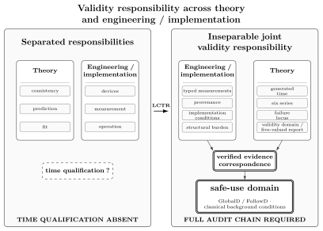
Formulas in the figure
Consequence after the final synthesis. By Theorem 8.109, Corollary 8.110, and Proposition 8.111, the establishment of a time variable appearing in a physical law requires the generation conditions of comparison, representation, dynamical description, and law description needed for the use of that temporal content. Use of differential law forms requires the differential-stage conditions, and claims using continuous approximation require a scale-indexed validity domain. A differential equation employing continuous approximation requires the dual qualification of continuous approximation and differential form. An invalidated or unresolved position is localized to the six failure series, invalidation signature, approximation boundary, structural burden, and five-valued audit report; condition invalidation, blockage by a prior condition, an unformed state, indeterminacy, and an engineering auxiliary-audit cause are separated by type.
By Theorem 7.203, a time variable in a physical law is not established as a primitive premise. By Theorem 7.190, every one of the 72 audited sources contains primitive-time roots and results dependent on primitive-time roots. Safe reuse of results from existing theories therefore requires generation of time content and its grounding structure from nontemporal physical inputs and audit of their validity domains, invalidation positions, and unresolved ranges.